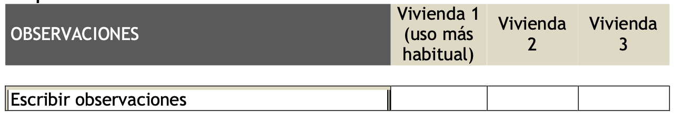
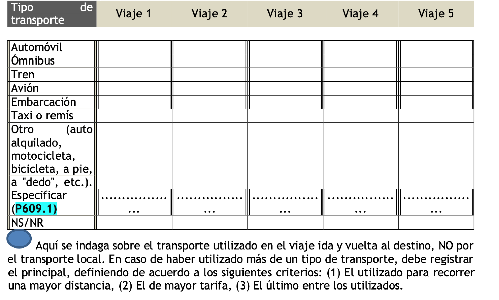
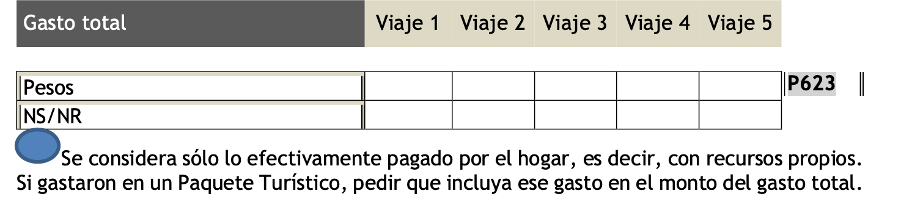
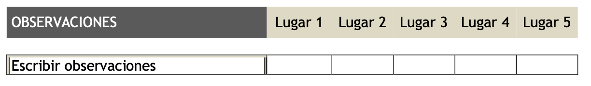

Capítulo 4 Anexo
4.1 Composición de los aglomerados
A continuación, se describen los 32 aglomerados que se considerarán para estratificar la muestra.
Cuadro 22: Composición de Aglomerados pag 78
En color rosa se ha marcado la zona geográfica que el Jefe de Campo seguirá para constatar que se ha relevado la cantidad de hogares necesarios para cada una estas áreas (hasta sumar tantos hogares relevados como el tamaño de la muestra exige –incorporando la metodología de reemplazo sugerida anteriormente).
4.2 Metodología de imputación
4.2.1 Imputación de datos faltantes
En estudios mediante encuestas es muy común encontrarse con la situación en la que algunos individuos no responden a ciertas preguntas. Ignorar este hecho puede llevar aparejado estimaciones sesgadas debido a que las observaciones que no responden pueden diferir de las que sí lo hacen.
Es por ello que al sustituir valores perdidos es importante comprobar que la imputación no haya modificado las características de la variable en estudio. Por este motivo es recomendable demostrar, luego de la imputación, que no se han generado cambios relevantes en la distribución de la variable imputada. En el presente apartado se desarrolla la metodología a utilizar para imputar las siguientes variables:
Ingreso total del hogar
Gastos del viaje
La metodología que se detalla a continuación ha sido utilizada durante la Prueba Piloto y las ediciones de la EVyTH correspondientes a los años 2011, 2012, 2013, 2014, 2015, 2016, 2017, 2018, 2019 y 2020.
4.2.2 Mecanismos de pérdida
Hay tres tipos de mecanismos de No-Respuesta que pueden estar presentes:
Completamente aleatorio: la probabilidad de observar un valor en la variable Xj, en el individuo i, no depende del valor en esa variable para ese individuo, xij, ni de las restantes variables consideradas, xik kj.
Aleatorio: este tipo de mecanismo implica que la probabilidad de observar un valor en la variable Xj en el individuo i no depende del valor de dicha variable, xij, pero sí quizás del valor que tome otra variable en ese individuo, xik kj.
No Aleatorio: este mecanismo se da cuando la probabilidad de que un valor xij sea observado depende del propio valor el cual es desconocido.
4.2.3 Métodos de imputación
Si bien existen diversos métodos de imputación, en este anexo se describen únicamente las características generales de aquellos que se utilizaron para imputar algún registro de la EVyTH y que reciben el nombre de Métodos de imputación mediante registro donante.
4.2.3.1 Imputación mediante registro donante
Los métodos de imputación mediante registro donante son procedimientos que asignan a los campos a imputar de un registro el valor que en tales campos tiene otro registro de la encuesta. Los registros “donantes” son aquellos registros completos de la encuesta mientras que los registros “receptores o candidatos” son los que tienen campos a imputar. Entre las ventajas de estos métodos se destaca que se imputa un valor “observado” y que es sencillo de implementar. Existen varios procedimientos entre los que se resalta el método de Hot Deck.
En este tipo de procesos, cuando falta información en un registro, se duplica un valor ya existente en la muestra para reemplazarlo. Todas las unidades muestrales se clasifican en grupos disjuntos de forma que sean lo más homogéneas posible dentro de los grupos. A cada valor que falte, se le asigna un valor del mismo grupo. Se está suponiendo que dentro de cada grupo la no-respuesta sigue la misma distribución que los que responden. Este supuesto incorpora una fuerte restricción al modelo, si esta hipótesis no es cierta se reducirá sólo en parte el sesgo debido a la no-respuesta.
El método Hot-Deck tiene ciertas características interesantes a destacar:
Los procedimientos conducen a una post-estratificación sencilla.
No presentan problemas a la hora de encajar conjuntos de datos.
No se necesitan supuestos fuertes para estimar los valores individuales de las respuestas que falten.
Mantiene la conservación de la distribución de la variable.
Sin embargo, este método tiene algunas desventajas, ya que distorsiona la relación con el resto de las variables, carece de un mecanismo de probabilidad y requieren tomar decisiones subjetivas que afectan a la calidad de los datos, lo que imposibilita calcular su confianza. Otros inconvenientes son, que las clases han de ser definidas en base a un número reducido de variables (con la finalidad de asegurar que habrá suficientes observaciones completas en todas las clases), y que existe la posibilidad de usar varias veces a una misma unidad que ha respondido.
Existen diversas variantes de dicho método. A continuación, se resumen cada uno de ellos.
4.2.3.1.1 Procedimiento hot-deck secuencial
El registro donante es el registro sin valor missing, perteneciente al mismo estrato e inmediatamente anterior al registro candidato. Para aplicar esta imputación previamente se debe clasificar el fichero de tal forma que produzca una autocorrelación positiva entre los campos sujetos a imputación, de esta forma se asegura una mayor similitud entre registro donante y candidato.
Las desventajas de este método son considerables:
Hayquefacilitarvaloresinicialesparaelcasodetenervaloresmissingenelprimer registro.
Ante una racha de registros a imputar, se emplea el mismo registro donante.
Es difícil de estudiar la precisión de las estimaciones.
4.2.3.1.2 Procedimiento hot-deck con donante aleatorio
Consiste en elegir aleatoriamente a uno o varios registros donantes para cada registro candidato. Hay diferentes modificaciones de este método. El caso más simple es elegir aleatoriamente un registro donante e imputar el registro candidato con dicha información. Se puede elegir una muestra de registros donantes mediante distintos tipos de muestreo e imputar al valor medio obtenido con todos ellos. Este último tipo tiene un elemento de variabilidad añadida debido al diseño de elección de la muestra que incorporan.
4.2.3.1.3 Procedimiento hot-deck modificado
Consiste en clasificar y encajar los donantes potenciales y receptores utilizando un considerable número de variables. El encaje se hace sobre bases jerárquicas del siguiente modo: si no se encuentra un donante para encajar con un receptor en todas las variables de control, se eliminan algunas variables consideradas como menos importantes y de esta forma conseguir el encaje a un nivel superior.
4.2.3.1.4 Procedimiento donor
En este método se emplea una función distancia definida entre las variables para que se mida el grado de proximidad entre cada posible registro donante y el registro candidato. En este caso se imputa en bloque los valores del registro donante en los campos sin respuesta del candidato. Es necesaria una modificación previa de los datos para anular los efectos de escala en la función distancia.
4.2.3.2 Método de imputación a utilizar en la EVyTH: Método de dos etapas
Lograr una buena imputación de datos faltantes depende en gran medida de cómo se agrupan los registros, de modo que las unidades incluidas en un mismo grupo tengan características similares respecto de la variable a imputar. Es por esta razón, el método de imputación a utilizar en la EVyTH se compone de dos etapas. En la primera etapa, se clasifica a los registros con no respuesta en algunos de los grupos, en función de variables observadas, que se encuentran asociadas a la variable a imputar. Para ello, se construye un modelo de Regresión Logística politómica, con variable respuesta ordinal. Este modelo brinda una “regla de asignación” a cada una de las categorías de la variable a imputar, para los registros con no-respuesta. Es decir, se estima la probabilidad de pertenecer a cada una de las categorías y se asigna el registro a aquella categoría con mayor probabilidad. Por lo tanto, en esta etapa logramos ubicar los valores faltantes en la distribución observada.
En la segunda etapa, una vez asignados los valores missing a una de las categorías, se aplica alguno de los procedimientos Hot-Deck anteriormente explicados para realizar la imputación correspondiente.
Este procedimiento de dos etapas será, principalmente, aplicado a dos variables fundamentales de la EVyTH: al gasto de los viajes y al ingreso del hogar. A continuación, se presenta la explicación de la implementación de este método de imputación en dos etapas aplicado al caso de las dos variables antes mencionadas.
4.2.3.3 Etapa de imputación
4.2.3.3.1 Imputación de gastos de viajes
En la base de las bases correspondientes a los viajes realizados por los miembros del hogar (BaseViajes) se encontrarán las variables que contienen la información referida a los gastos efectuados en cada uno de los tipos de viajes realizados por el hogar. Debido a la coexistencia de dos tipos de no-respuesta para la variable GASTO TOTAL DEL VIAJE (GSTTTL), se optará por un tratamiento distinto para ambos.
Se iniciará el procedimiento realizando la imputación de aquellos viajes en los que no se contesta el monto del mismo, pero que sí lo hicieron en la variable TRAMO. Es decir, hogares que, aunque no respondan el gasto del viaje de manera puntual, son capaces de ubicar el gasto en una clase determinada.
Para aquellos que respondan monto del gasto, dentro de cada tipo de viaje y para los distintos tramos, se calculará la media del gasto total en la combinación de cantidad de miembros participantes en el viaje y la cantidad de noches. En el caso de las visitas de un día, tanto a segunda vivienda como no, y en los viajes cortos a segundas viviendas, no se considerará la variable cantidad de noches.
Luego se realizará la imputación por la media, en cada combinación anteriormente mencionada, en los viajes que respondieron sólo el tramo del gasto total del viaje. Estos casos imputados, luego serán incluidos como posibles donantes en el paso siguiente, junto a aquellos Viajes en los que se había respondido el Gasto Total del mismo. A continuación, se procederá a imputar el Gasto total del viaje para aquellos hogares que no respondieron ni el MONTO ni el TRAMO.
Debido a las particularidades de cada tipo de viaje y al número de casos en cada uno, se realizará la siguiente agrupación:
Viajes a segundas viviendas: incluye los viajes de corta y larga duracion a segundas viviendas (tipos de viaje 3 y 4, respectivamente).
Viajes en Argentina: comprende los viajes no reiterados en Argentina y los viajes reiterados que hayan tenido como destino alguna ciudad del país (tipos de viaje 6 y 8 respectivamente, sin incluir en este último los viajes al exterior).
Viajes en el exterior: alcanza a los viajes no reiterados al exterior y a los viajes reiterados que hayan tenido un destino fuera del país (tipos de viaje 7 y 8 respectivamente, sin incluir en este último los viajes dentro del país).
Visitas de un día: abarca a las visitas de un día, tanto a segundas viviendas como no (tipos de viajes 5 y 9, respectivamente)
Por lo tanto, el procedimiento de imputación se efectuará por separado para cada grupo, pero siguiendo las mismas pautas de trabajo.
Como primera medida, se realizara una transformación de la variable GASTO TOTAL DEL VIAJE (GSTTTL). Para ello, se tomará en cuenta la variable, que resulta ser una variable categórica ordinal y cuyas categorías indican porcentajes de Gastos afrontados por el hogar (0-40%, 40-60%, 60-100%, 100%).
Se modificará el monto original dividiéndolo por el punto medio del intervalo respondido y de esa forma obtendrá una mejor aproximación del Gasto Total del Viaje. Una vez finalizada la imputación de los valores faltantes con la variable modificada, se le quitará a dicho valor el porcentaje del Gasto no afrontado por el hogar. Por lo tanto, se tomará como Gasto Total del Viaje al importe resultante de multiplicar a la nueva variable por el porcentaje afrontado por ese hogar.
Luego, se observará la distribución de la variable GASTO TOTAL DEL VIAJE MODIFICADA (GSTTTL_NEW), a fin de excluir los valores extremos. La eliminación de viajes del universo de potenciales donantes, se realizará en base a los respectivos diagramas de caja (Box- Plots). En consecuencia, dichos casos no participarán en el proceso de imputación, ya sea en la conformación de grupos como en el momento de la imputación propiamente dicha.
Una vez eliminados tales valores, comenzarán las tareas de imputación de la falta de respuesta en la variable de interés, utilizando una técnica de imputación en 2 etapas.
En la primera etapa se “colocará” el valor del gasto en una categoría de GASTO (que se define por la mediana de la distribución del monto del GASTO para cada grupo), en función de los valores observados en las variables explicativas. Para realizar esta tarea se utilizará un modelo de regresión logística binaria, en el que se evalúa la inclusión de las siguientes variables explicativas:
Cantidad de miembros del hogar
Tipo de alojamiento utilizado
Medio de transporte utilizado
Motivoprincipaldelviaje
Utilización de paquete turístico
Distanciarecorrida
Cantidad de noches
Tipodeviaje
Vale aclarar que depende del grupo con el que estemos trabajando, la inclusión o no de la totalidad de tales variables en el análisis. La variable Distancia Recorrida es categórica ordinal y será diseñada teniendo en cuenta el lugar de residencia del hogar y el lugar de destino del viaje. Su codificación es la siguiente:
11: En Argentina, menos de 300 km.
12: En Argentina, entre 300 y 499 km.
13: En Argentina, entre 500 y 699 km.
14: En Argentina, 700 km. o más.
21: Al exterior, país limítrofe desde provincia lindera.
22: Al exterior, país limítrofe desde provincia no lindera.
23:Alexterior,paísamericanonolimítrofe.
24:Alexterior,paísesdelrestodelmundo.
En la segunda etapa se seleccionará un valor de dicha categoría de GASTO mediante un procedimiento Hot-Deck aleatorio para “asignar” al registro faltante un valor de GASTO puntual.
4.2.3.3.2 Imputación de ingreso total del hogar
En la base correspondiente a los hogares seleccionados en la muestra (Base hogares) se determinarán las variables que poseen la información referida a los Ingresos de los hogares encuestados. Al igual que en el caso de la imputación de la variable GSTTTL, el procedimiento para imputar la variable Ingreso del Hogar (Monto) se iniciará con aquellos hogares que no responden el MONTO pero que sí pudieron localizar al ingreso en un TRAMO determinado.
Para aquellos hogares que declararon el Ingreso, se calculará la media del Ingreso del hogar total en cada combinación de TRAMO y cantidad de “preceptores de ingreso.” Esta última variable se obtendrá de la base de Personas y estará conformada por los ocupados y jubilados de cada hogar que participó en la encuesta.
Luego, dichos valores serán imputados en las combinaciones referidas en el párrafo anterior, para los hogares que sólo respondieron el TRAMO del Ingreso del Hogar.
A continuación, se procederá a imputar el Ingreso del hogar para aquellos hogares que no respondieron ni el MONTO ni el TRAMO.
Como primer paso, se incorporará al conjunto de respondentes, a aquellos hogares imputados en el paso previo; es decir, hogares que habían respondido sólo el TRAMO del Ingreso del Hogar.
Se observará la distribución de la variable INGRESO DEL HOGAR: MONTO (P020_1), a fin de excluir los valores extremos. La eliminación de hogares del universo de potenciales donantes, se realizará en base al diagrama de caja (Box-Plot). En consecuencia, dichos casos no participarán en el proceso de imputación, ya sea en la conformación de grupos como en el momento de la imputación propiamente dicha.
La variable INGRESO DEL HOGAR: MONTO (P020_1) es cuantitativa continua. Se utilizará como técnica de imputación una Regresión logística politómica con variable respuesta ordinal. Una vez más para la imputación del ingreso se “colocará” el valor del ingreso en una categoría (ya no definidas exclusivamente por la mediana, pudiendo formar las clases a partir de la asignación del ingreso en otros percentiles), en función de los valores observados en las variables explicativas.
Para realizar esta tarea se utilizará un modelo de regresión logística, en el que se evalúa la inclusión de las siguientes variables explicativas:
Cantidad de miembros del hogar
Cantidad de miembros del hogar que trabajan
Comportamientoturísticodelhogarenelbimestre
Región de residencia del hogar (según INDEC)
NivelEducativodeljefedelhogar
Categoríaocupacionaldeljefedelhogar
Cantidad de Jubilados en el hogar
Las variables Cantidad de miembros del hogar que trabajan, Nivel Educativo del jefe del hogar, Categoría ocupacional del jefe del hogar y Cantidad de Jubilados en el hogar, se construirán a partir de la base de Personas (Base Personas). Para la variable Región de residencia del Hogar, se considerará la definición que realiza INDEC, ya que la misma tiene en cuenta las características socio-económicas de los hogares y es utilizada por dicho Instituto para sus estudios. Las regiones se definen de la siguiente manera:
Noroeste Argentino: Salta, Jujuy, Santiago del Estero, Tucumán, Catamarca.
Noreste Argentino: Formosa, Chaco, Corrientes, Misiones.
Cuyo: Mendoza, San Juan, San Luis, La Rioja.
Área Metropolitana de Buenos Aires: Ciudad Autónoma de Buenos Aires y Partidos del Gran Bs. As.
Patagonia:RíoNegro,Neuquén,Chubut,SantaCruz,TierradelFuego.
A partir del modelo elegido, se seleccionará un valor de dicha categoría de INGRESO, mediante un procedimiento Hot-Deck aleatorio para “asignar” al registro faltante un valor de INGRESO puntual.
4.3 Metodología de estimación del gasto por pernicte en el relevamiento de expectativas de viaje en fechas especiales
Los informes de resultados correspondientes a los relevamientos de expectativas contendrán una estimación del gasto por pernocte resultante de los viajes en fechas claves (verano e invierno). Debido a la imposibilidad de obtener esta información directamente de los hogares encuestados (la tasa de no respuesta sería considerablemente alta y el dato relevado sería poco robusto, debido a que se le estaría consultando al hogar sobre un gasto que aún no ha realizado), la estimación del gasto por pernocte seguirá la siguiente metodología:
Estimación del Gasto Base: se estimará un gasto base a partir del gasto promedio por pernocte en los viajes de 1 a 6 noches de duración del mismo mes del año anterior relevados en la EVyTH.
Gasto Base Final: Gasto base ajustado por inflación, entre el periodo sobre el que se releva y el periodo del cual se obtiene el gasto base. El ajuste por inflación se propone realizar a partir de las siguientes consideraciones:
Dado que la información secundaria a utilizar presenta cierto retraso respecto al relevamiento, la variación se calculará entre el último dato disponible y la extensión del periodo entre el periodo de relevamiento y el gasto base considerado. Por ejemplo, para las estimaciones de febrero de 2013, con gasto base febrero de 2012, se calculará la variación de inflación entre enero de 2013 (último dato disponible) y enero de 2012.
Entre distintas opciones disponibles, se utilizará la variación del IPC GBA – División Turismo calculado por el INDEC.
Gasto Estimado del Viaje por pernocte: Gasto Base Final ajustado por un coeficiente que contempla las características del viaje.
Se contemplan características de los viajes (distancia recorrida, alojamiento utilizado, motivo, duración e integrantes del hogar que participaron del viaje) y de las personas que realizan los viajes (región de residencia, máximo nivel educativo del jefe del hogar).
El cálculo del coeficiente se realiza sobre la base de la totalidad de los viajes con una duración de entre 1 y 6 noches relevados durante la EVyTH.
Los coeficientes que de aquí surgen son fijos y se aplican para los relevamientos de expectativas de viaje de las diversas fechas clave consideradas.
4.4 Descripción del sistema informático utilizado para el relevamiento
4.4.1 Descripción general del sistema CATI
El sistema implementado para las distintas ediciones de la EVyTH, dispone de dos tipos de usuarios del sistema CATI, el Administrador y el Operador.
El Administrador es el usuario que puede administrar la gestión del campo. Por ejemplo, administra la base de números de teléfonos, asigna regiones a los operadores. El Operador es el usuario que recaba los datos.
En el campo se dispone de PC’s que están en red. No todas las PC’s sirven a todos los fines porque no todas tienen los mismos softwares. Algunas de éstas son utilizadas por el Operador (en sentido plural) para hacer llamadas y recabar datos, otras son usadas por el Administrador (en sentido plural) para gestionar el campo y desde las que no se realizan llamadas, una es el servidor9 y otra es el servidor de back up que también sirve para recabar datos en caso que falle alguna de las PC’s. El servidor no se encuentra habilitado para realizar llamados ni administrar el campo, en tanto que desde el servidor back up sí es posible hacerlo (a la vez que sirve de back up del servido principal). En las PC’s del Operador es viable realizar llamados, cargar los datos y administrar el campo, mientras que en las PC ́s de supervisión no es posible realizar llamados.
Todas las PC’s tienen instalado el sistema operativo LINUX y disponen de los dispositivos necesarios para realizar llamadas (auriculares y micrófonos).
Además, el sistema prevé el acceso remoto, con lo que es posible realizar el relevamiento y la supervisión estando fuera de la red a través de una VPN.
Hay tres softwares que gestionan el capo, el Sistema de llamadas, el Lime Survey y el Elastix, y un sistema de almacenamiento de datos. El Administrador y el Operador tienen distintos usos de cada uno de estos programas. El Administrador accede a través de diferentes direcciones a cada uno de estos programas. El Operador accede con una dirección a una ventana que vincula estos tres programas y en la que sólo puede cargar datos.
Es importante destacar que el sistema prevé generar copias de seguridad (back up) diarias en una de las PCs dispuestas en el campo y en un servidor externo. Además, semanalmente se copian las respuestas de la encuesta en otra PC y mensualmente se genera un DVD con los datos mensuales que se almacena en un sitio externo a las instalaciones en el que se desarrolla el campo. De este modo, queda garantizado que los datos recabados durante el relevamiento no se pierdan.
A continuación, se describen las posibilidades que tienen cada usuario con estos programas.
4.4.1.1 Administrador
El Administrador es el encargado de gestionar el campo. Para esto dispone de tres programas (el Sistema de administración de llamadas, el Lime Survey y el Elastix) a los que accede para administrar y controlar el uso que los Operadores hacen de la información que reciben por vía telefónica y cargan en sus PC’s.
El Sistema de administración de llamadas es el programa que le permite organizar y administrar la base de números de teléfono. Con este programa se realiza la principal tarea de supervisión durante el relevamiento de datos (administración de los números de teléfono de cada Operador).
El Lime Survey es el programa en el cual se cargan los datos de la encuesta, tanto en su estructura como en sus valores, contiene los pases entre preguntas automatizadas y realiza las validaciones o consistencias correspondientes (es decir, garantiza que el operador no pueda –por error del encuestado o del propio encuestador al cargar la respuesta- cargar una respuesta inconsistente en función de las respuestas dadas anteriormente).
La programación fue llevada a cabo por un especialista, pero el Administrador (mediante una clave que solo éste posee) puede modificar las respuestas de la encuesta en caso de ser necesario (por ejemplo, si el encuestado corrige una respuesta dada anteriormente, el Operador puede comunicar esto al Administrador para que efectúe la corrección pertinente). También permite rápidamente tener conocimiento respecto de los resultados generales de la encuesta.
El Elastix es el programa que le permite escuchar los audios de cada llamada (en tiempo real) y administrar la tecnología a utilizar para encaminar una llamada (se propone implementar tres tecnologías por donde canalizar los llamados: Skype, voz sobre IP o llamada telefónica por par de cobre).
4.4.1.1.1 Sistema de administración de llamadas
El software de administración está constituido por un desarrollo informático pensado especialmente para el relevamiento de la EVyTH, inspirado en la experiencia recabada durante la Prueba Piloto e implementado durante la edición del año 2011. Como se verá a continuación tiene una amplia flexibilidad y la posibilidad de modificar la asignación de teléfonos en función de las necesidades del momento.
El Administrador accede entrando al servidor a través de una dirección en el navegador web con un usuario y clave personal.
Figura 4.1: Usuario y clave personal
El sistema presenta 7 solapas: Administradores, Operadores, Teléfonos, Registros, Estados de Inicio, Estados Final y Ondas.

Figura 4.2: Administradores
La solapa Administradores habilita la gestión de quienes podrán hacer uso del programa.
La solapa Operadores permita incorporar y eliminar operadores con sus respectivos nombres, asignarles regiones y cuotas de llamados y de éxito – cantidad de llamados y de llamados exitosos (en este caso de encuestas efectivas) que se espera el operador realice en la jornada.

Figura 4.3: Solapa operadores
La asignación de regiones puede realizarse manualmente (escribiendo el nombre de la región), o bien seleccionando las regiones correspondientes que se despliegan del menú al que se accede en “modificar regiones.” La ventaja que esta última modalidad conlleva es que evita errores al escribir las regiones (para cada onda surgirán las regiones que fueron cargadas en la importación de la base de números de teléfono). Por otra parte, la ventaja del formato manual es que acelera el proceso de asignación de regiones; una vez que se han pasado las regiones a asignar en la base (por ejemplo, en el procesador de textos o en el editor de regiones de otros Operadores), sólo es cuestión de pegarlas en el espacio correspondiente.

Figura 4.4: Operadores
La tercera solapa, Teléfonos, es desde donde se importan y exportan las bases de datos de números de teléfonos. La importación se hace a través de un archivo .CSV donde en cada línea se completan los campos número de teléfono, número de onda, nombre, región y su código, envío o no de carta y tipo de prioridad del número. Desde aquí el Administrador puede modificar individualmente cada número y habilitarlo o deshabilitarlo. La deshabilitación se produce automáticamente en función del registro del número de teléfono que genera el Operador y de los puntajes asignados por el Administrador a ese “estado.”

Figura 4.5: Teléfonos
Desde Registros el Administrador puede advertir en tiempo real cuál es el estado de cada llamada. Desde aquí puede controlarse el registro del estado de cada llamada, cuándo comenzo y cuándo finalizó, quién la realizó y qué tecnología de telefonía utilizó (skype, VOIP, etc.).

Figura 4.6: Registro
Las solapas de Estado de Inicio y Estado Final sirven para determinar cuáles son las condiciones de registro que pueden generar los Operadores. El sistema permite generar y editar estados de registro, por ejemplo “Aceptó ser encuestado” o “Ausente.” Los Operadores generan registros en función del estado final de la llamada. Según cómo haya sido este estado el número volverá a aparecer (con condicionantes de tiempo en minutos) o no. Por ejemplo, en la imagen a continuación se ve que un número cuyo estado es “Ocupado” reaparece a los 20 minutos de generado el registro. Además, es necesario asignar puntos a cada estado siendo que cuando se suman 12 puntos el número queda inhabilitado. Así, como muestra el ejemplo, si el estado “Rechazó ser encuestado” suma 12 puntos, un teléfono al que se le haya asignado ese estado queda inhabilitado. En cambio, un llamado cuyo registro es “Ocupado” no suma ningún punto y no queda inhabilitado hasta tanto no se le asignen otros registros que acumulen 12 puntos.
Figura 4.7: Estado de inicio
En la solapa “Ondas,” el Administrador modifica las fechas de inicio y final de cada onda de relevamiento. Esto permite incorporar nuevas ondas y modificar la fecha de inicio y fin en función de cómo sea el desempeño del campo. Por ejemplo, si la onda 1 comenzara el 1° de febrero y finalizara el 3 de marzo, todos los números que hayan sido importados con la onda 1 aparecerán sólo entre el 1 de febrero y el 3 de marzo. Si el campo tuviese una baja tasa de respuesta y fuese necesario continuar hasta el 4 de marzo, será posible realizar el cambio el mismo 4 de marzo sin mayores complicaciones.

Figura 4.8: Ondas
El sistema también permite modificar un registro que han realizado los Operadores. Para esto el supervisor debe seleccionar la opción “Cambiar” en la columna “Modificar estados” del registro correspondiente y marcar el registro correcto teniendo en cuenta que el Estado de Inicio y el Estado de finalización. El sistema no permite el cambio si no hay coherencia entre ambos estados. Por ejemplo, si en el Estado de Inicio se marca la opción “Ausente” y en el Estado de Finalización se selecciona “Completa,” el sisema no permitirá el cambio. En caso de seleccionar la opción “Cancelar,” el registro vuelve a ser el original.

Figura 4.9: Cancelar
4.4.1.1.2 Limey Survey
El Lime Survey es el programa propuesto para carga la estructura del cuestionario (esto incluye la automatización de los pases y las validaciones necesarias), registrar las respuestas de los encuestados y establecer las consistencias y validaciones necesarias. Al igual que en el caso del Sistema de llamadas, se encuentra alojado en el servidor y se puede acceder a través del browser.
Se trata de un cuestionario sumamente flexible pensado para crear estructuras de encuestas, cargarlas, validarlas, modificarlas, exportar las respuestas y evaluarlas estadísticamente. Vale remarcar que el Lime Survey es un programa ya desarrollado en código abierto y que no requiere licencia alguna.
Cuando sea necesario modificar las respuestas cargadas durante el campo es posible hacerlo (una vez que el Operador generó registro) accediendo como Administrador.

Figura 4.10: Lime Survey
El Lime Survey, dispone de un aplicativo que permite hacer un análisis estadístico de las respuestas por cada pregunta en tiempo real. Por ejemplo, es posible observar cuántas encuestas fueron respondidas hasta el final o cuántas encuestas resultaron completas o respondieron “1” a “Cantidad de viajes por Argentina.” Las estadísticas pueden exportarse en Excel, PDF o verse en la misma página web.

Figura 4.11: Formato SPSS
Por otro lado, todas las respuestas de la encuesta podrán ser exportadas en formato SPSS, lo que lo hace ideal para el posterior análisis de resultados.
4.4.1.1.3 ELASTIX
Elastix es un servidor virtual (ya desarrollado en código abierto y que no requiere licencias) dedicado a la gestión de las llamadas que permite la administración del tráfico de las llamadas en forma inteligente. Así, por ejemplo, puede elegir automáticamente el canal de salida de voz, entre VOIP, Skype o por par de cobre cuando el Operador no selecciona una tecnología específica. Además, permite grabar los audios de las conversaciones que realizan los Operadores con los encuestados (permite descargar los audios y los datos de cada uno de estos audios -como usuario que la realizó y duración de la llamada- y filtrar por fecha-, etc.).
Figura 4.12: Filtrar
En caso que se desee se puede implementar la grabación de las encuestas realizadas, respondiendo a las máximas exigencias de seguridad requeridas (no solo se pueden grabar, sino que también el sistema permitiría escuchar las encuestas en tiempo real). Para favorecer el acceso a los audios se permite acceso a una interfaz que habilite al supervisor de campo acceder con mayor facilidad a los audios filtrando ya sea por fecha, por número de teléfono o por Estado Final. Este sistema permite hacer los chequeos de carga de datos ex post ya que el supervisor puede controlar que los datos de la encuesta se hayan cargado correctamente (mientras escucha el audio revisa los datos cargados).

Figura 4.13: Audios
4.4.1.2 Operador
El sistema informático permite desdoblar el campo entre Operadores en las instalaciones previstas de relevamiento (Operador “in-house”) y Operadores instalados desde sus hogares (“Operadores remotos”). En general, al relevamiento remoto son asignados encuestadores de extrema confianza y con experiencia acumulada. De todas formas, el software permite una supervisión diaria (en tiempo real) sobre cada encuestador remoto.
El relevamiento con Operadores remotos se utiliza para casos especiales o para realizar una cantidad pequeña de encuestas diarias con el fin de aliviar el trabajo a los encuestadores “in-house.”
4.4.1.2.1 Operaador “IN-HOUSE”
El Operador utiliza únicamente una ventana del navegador web desde donde realiza las llamadas y registra las respuestas de la encuesta. El procedimiento que se realiza es el siguiente: ingresar al sistema, realizar la llamada, eventualmente recabar los datos de las respuestas y registrar el resultado de la llamada.
El Operador accede con un usuario y contraseña a una pantalla con dos ventanas.

Figura 4.14: Acceso operadores
La ventana de la izquierda administra los números de teléfono (vinculada con el Sistema de administración de llamadas) y la de la derecha las respuestas de la encuesta (vinculada con el Lime Survey).

Figura 4.15: Interfaz
En la parte superior de la pantalla izquierda figura la cantidad de llamadas realizadas y la cantidad de llamadas exitosas. Debajo aparecen los servicios con los cuales se puede realizar la llamada (Skype, VoIP, Líneas Fijas y Línea Manual). El Operador selecciona la tecnología con la cual desea realizar la llamada, clickea sobre el botón correspondiente y automáticamente se comunica con ese número de teléfono. En el centro de la pantalla izquierda se muestran los datos y el historial del número telefónico correspondiente. Esto le permite al Operador saber a qué localidad está llamando y si ya han realizado llamados a ese hogar. En la parte inferior aparece un menú en el que se despliegan los estados posibles de generar.
En la pantalla derecha aparece la presentación que permite orientar al Operador al iniciar la encuesta. Si el llamado resultara en un caso que acepta ser encuestado surge un botón verde en la pantalla izquierda que activa la ventana derecha en la que se abre la encuesta.
Figura 4.16: Interfaz
Al finalizar la encuesta, el Operador debe enviar las respuestas y generar registro en función del estado final de la llamada.
Figura 4.17: Interfaz
Si, en cambio, el llamado no presupone vinculación con el programa que recaba los resultados de la encuesta (el Lime Survey), por ejemplo, si el hogar rechazó ser encuestado, el Operador sólo debe generar registro y, una vez realizado esto, aparece el próximo número de teléfono.
Figura 4.18: Interfaz
El sistema prevée un calendario que permite al Operador reasignar, manualmente, el día y la hora del re llamado en función de lo que el encuestado le diga al Operador.

Figura 4.19: Generar registro
4.4.1.3 Operador remoto
La modalidad de Operador remoto permite complementar el trabajo de los encuestadores tradicionales de manera segura y eficiente. La tecnología disponible para este esquema permite a los encuestadores remotos realizar la misma tarea que los encuestadores tradicionales desde fuera de las instalaciones de relevamiento garantizando la seguridad de la información y una amplia capacidad de supervisión.
Para esto el encuestador remoto debe disponer en su PC dos softwares: OpenVPN (que le permite acceder de manera segura al servidor de las encuestas) y un softphone gratuito (X- Lite o Zoiper dependiendo del sistema operativo que utilice en su PC) para realizar las llamadas internas, al supervisor, y externas, a los hogares, que le permiten acceder a la encuesta como si estuviera operando desde las instalaciones de relevamiento. Si lo Operadores no disponen del equipamiento necesario se los provee de una PC (con auriculares y micrófono) configurada con los softwares antes mencionados para que inmediatamente pueda disponerse a relevar.
4.5 Manual del encuestador y guía de ejercicios a utilizar durante el relevamiento
Se presenta a continuación el Manual del Encuestador y su correspondiente Guía de Ejercicios (tanto en sus versiones para el encuestador y para el instructor –también llamada Cuadernillo de Soluciones de Ejercicios) que serán utilizados durante los cursos de capacitación brindados a los encuestadores cada tres meses por el equipo metodológico de la EVyTH.
4.5.1 Manual del encuestador
El Manual del Encuestador tiene una misión fundamental en el relevamiento al asegurar y resguardar la calidad de la toma de datos. En esta línea, el Manual tiene como objetivo brindarles a los encuestadores las herramientas conceptuales de forma tal de garantizar la homogeneización de la terminología utilizada al efectuar las encuestas. Es por ello que, el Manual, constituye un protocolo tendiente a resguardar la calidad de la información relevada. Por otra parte, además, el Manual cumple otro rol que es la de otorgarle a los encuestadores una introducción al manejo de la herramienta CATI para el cargado de la información en tiempo real. Esta preparación conceptual es luego completada con la capacitación en campo donde los encuestadores, siguiendo la Guía de Ejercicios, simulan el cargado de distintas encuestas en el sistema informático al tiempo que resuelve casos prácticos que podrían presentarse durante el relevamiento.
4.5.1.1 Módulo 1: Presentación de la EVyTH
La información es obtenida a través de entrevistas telefónicas que se realizan a una muestra de hogares de los grandes aglomerados urbanos de todo el país.
La Encuesta de Viajes y Turismo de los Hogares tiene como objetivo fundamental proporcionar información sobre los viajes que realizan las personas residentes en Argentina: a dónde van, qué medios de transporte utilizan, dónde se alojan, cuáles son los motivos por los que viajan, cómo organizan sus viajes, qué actividades turísticas realizan, cuánto gastan, etc. La información relevada sirve:
Para conocer y caracterizar el turismo nacional, es decir, los viajes que realizan los residentes en el país dentro y fuera de su territorio.
Como insumo para estimaciones de los gastos de los hogares en viajes y turismo.
Para diseñar políticas de incentivo o fomento del turismo, mediante el estudio de las características sociodemográficas de los hogares que viajan y los que no viajan y de las modalidades de los viajes.
Para ello, la Encuesta releva información acerca de:
Las características sociodemográficas y ocupacionales de las personas que integran los hogares, así como los ingresos monetarios de los que dispone cada hogar.
La cantidad, las características y el gasto de cada uno de los viajes con pernocte realizados en Argentina y en el exterior en los dos meses anteriores al mes de relevamiento de la Encuesta
La cantidad, las características y el gasto de las visitas de un día realizadas en los últimos dos meses.
La realización o no de viajes de cualquier tipo durante el año calendario anterior.
La Encuesta se realizará en forma continua, con el objetivo de obtener información mensual, bimestral, trimestral y anual, según las características de las diferentes dimensiones o ejes de análisis. Mensualmente, se entrevistarán unos 2600 hogares residentes en todas las capitales de provincia y ciudades no capitales donde residan más de 100 mil personas.
La realización satisfactoria de la Encuesta en cada uno de los hogares contactados dependerá del vínculo que establezca el Encuestador con el encuestado. Usted, como Encuestador, será responsable de la orientación y conducción de la encuesta. Su desempeño y actitud determinarán en gran parte el resultado, la calidad y la confiabilidad de la información obtenida.
Por tal motivo, resulta indispensable que Ud. adquiera un cabal conocimiento sobre los objetivos y conceptos relacionados con la Encuesta, así como sobre la forma correcta en que debe ser realizada cada una de las preguntas.
Dadas las características de una entrevista telefónica, sólo si Usted maneja con soltura las definiciones y objetivos de cada sección de la encuesta, logrará que el encuestado entienda y responda lo que se le está preguntando, o bien, que Usted pueda extraer la información requerida en base a lo que el entrevistado le cuenta. Lógicamente, todo esto supone un alto nivel de concentración de su parte durante toda la entrevista, no sólo para poder captar y registrar la información en forma correcta, sino también para lograr mantener un tono ameno en la charla y que no decaiga el interés y la voluntad del entrevistado por seguir respondiendo la Encuesta.
4.5.1.1.1 Estructura de la encuesta y principales conceptos de la EVyTH
Esquemáticamente el Formulario Base se organiza según el cuadro a continuación:
Figura 4.20: Cuestionario Base
Un “viaje turístico” es el desplazamiento de una o más personas miembros de un hogar a un lugar fuera del entorno habitual.
Los viajes turísticos pueden ser viajes propiamente dichos o visitas de un día (o excursión). La diferencia radica en que en las visitas de un día las personas no pernoctan en el lugar visitado, mientras que si lo hacen en los viajes.
Por definición, todo viaje o visita de un día a una segunda vivienda no se considera parte del entorno habitual del hogar.
Segunda vivienda: vivienda de uso temporario, propia o alquilada, que el hogar tuvo disponible para su utilización en los últimos dos meses.
Tenga en cuenta que un viaje turístico:
Debe tener una duración inferior a un año y quien viajó no debe haber fijado su residencia en el lugar de destino.
Comprende los traslados, estancias y todas las actividades que las personas realizan en el lugar de destino.
Puede haber sido a un solo destino o haber tenido varias etapas.
Los motivos del viaje pueden ser esparcimiento, ocio o recreación; visita a familiares y amigos; negocios o motivos profesionales; estudios y formación; razones de salud, religión u otros (trámites, compras, etc.).
Se incluyen tanto los viajes en los que el viajero pernocta al menos una noche en el lugar visitado, como las visitas de un día (sin pernocte).
El entorno habitual consiste en una zona cercana al lugar de residencia del hogar más todos los lugares visitados con asiduidad.

Figura 4.21: Cuadro
Por lo tanto, los viajes que aquí consideramos son los realizados a destinos ubicados a más de 20/40 Km. de la localidad donde está la vivienda principal y que fueron visitados con una frecuencia no semanal.

Figura 4.22: Cuadro 2
EXCLUSIONES: Un desplazamiento a un lugar fuera del entorno habitual, en términos de distancia y frecuencia, puede no ser un viaje. Esto rige en todos los casos, **incluso cuando el viaje se realice a una segunda vivienda del hogar.
Exclusión 1. Empleado de alguna empresa o institución del lugar visitado:
Si una persona realizó un desplazamiento cuyo motivo principal fue trabajar como empleado de una empresa o institución residente en el lugar visitado (a cambio de un salario, se trate de un empleo registrado o no) no se considerará visitante de ese lugar y por tanto no se registrará el viaje.
No se considera “empleado” si quien viaja por trabajo brinda un servicio por el cual percibe honorarios, o bien si recibe dinero en concepto de “viáticos,” es decir, una asignación para cubrir los gastos del viaje (pasajes, alojamiento, alimentación, etc.).
Por ejemplo, NO se consideran viajeros cuando son empleados en el lugar de destino:
trabajadores en temporada en hoteles, explotaciones agropecuarias, etc.;
trabajadores temporarios en internados, hospitales y similares;
estudiantes que viajan por períodos inferiores a 12 meses y trabajan para mantenerse (tanto quienes reciben un salario por su trabajo como quienes ayudan a una familia en las labores de la casa y el cuidado de los niños a cambio de la estancia y el mantenimiento);
quienes viajan como acompañantes (familiares, servicio doméstico, etc.) de aquellos que lo hacen por cualquiera de los motivos ya enunciados, aunque hayan realizado actividades turísticas.
En cambio, SÍ se consideran que realizaron viajes aquellas personas que viajaron por trabajo, pero no fueron empleados en el lugar de destino, por ejemplo:
conferenciantes, artistas de espectáculos y consultores;
un abogado que defiende en un juicio a una persona o empresa del lugar visitado;
un cirujano que viaja a realizar una operación por única vez.
Exclusión 2. Traslado como parte del trabajo:
No se consideran viajes aquellos desplazamientos realizados por las personas para quienes el traslado es parte de su trabajo. Por ejemplo, los pilotos de avión, conductores de camión o de ómnibus de larga distancia, viajantes de comercio y similares (incluyendo personal de seguridad, de asistencia – azafatas-, etc.).
4.5.1.1.2 Períodos de referencia de la EVyTH
Esta Encuesta, indagará por la realización de viajes turísticos en los últimos dos meses. Por lo tanto, el período de referencia comprende los últimos dos meses anteriores a partir del último día del mes anterior al mes de realización de la Encuesta.
Por ejemplo, si la Encuesta se realiza el 10 de noviembre de 2012, el período de referencia abarca del 1° de septiembre de 2011 al 31 de octubre de 2012, por lo que Usted deberá indagar por los viajes que el hogar realizó en esos dos meses.
tabla pag 106 - 107
Un viaje puede comenzar en un mes y finalizar en otro, inmediatamente posterior o no. Por definición el viaje se registra de acuerdo a la fecha de regreso. Por tanto, Usted deberá indagar por los viajes en los que la fecha de regreso corresponda a los dos meses incluidos en el periodo de referencia.
Por ejemplo, si una familia inicia su viaje el 20 de agosto y regresa el 2 de septiembre, se considera que ese viaje corresponde a septiembre, y sólo será registrado si este mes forma parte del periodo de referencia vigente al momento de realizar la encuesta.
4.5.1.1.3 Pautas generales para la realización de la entrevista telefónica
Ud. va a comunicarse telefónicamente con hogares cuyos miembros tienen características muy diferentes en cuanto a: edad, nivel socio-económico, nivel educativo, personalidad, carácter, información, capacidad de comprensión, región de residencia, etc. De modo que Usted se entrenará para reconocer estas diferencias y acondicionará las estrategias de relevamiento de acuerdo a las mismas. Pero siempre deberá guiarse por las siguientes pautas:
Es necesario que ponga toda su atención y compresión en la tarea de relevamiento. Evite distracciones que entorpezcan su trabajo y que puedan llevarlo a una incorrecta captación de los datos. Mantener la concentración es fundamental tanto para realizar las preguntas como para registrar las respuestas, ya que los errores de digitación son difíciles de captar y la información perdida difícil de recuperar.
Lea las preguntas tal y como aparecen en la pantalla. Esto garantiza que todos los operadores procedan de la misma forma.
Asegúrese que el entrevistado haya comprendido la pregunta. Repita la pregunta tantas veces como sea necesario hasta que el entrevistado la haya entendido. Si es necesario, utilice ejemplos para facilitar la comprensión, teniendo en cuenta las particularidades del hogar entrevistado.
Mantenga un tono de voz firme pero cordial y agradable que favorezca un clima de confianza y de distensión con el entrevistado. Es fundamental establecer un lazo de confianza, por eso debe brindar todas las garantías de anonimato, privacidad y seguridad de la información. Recuerde al entrevistado que la confidencialidad y anonimato de los datos que brinde está protegida por leyes nacionales.
No apure innecesariamente los tiempos de la entrevista. En algunos casos hay miembros del hogar que recuerdan rápidamente las características de sus viajes y de los otros miembros del hogar. En otros casos esto lleva más tiempo, por lo tanto, es necesaria toda su paciencia para poder obtener la información de manera correcta.
Si la persona que atiende el llamado no cuenta con el tiempo suficiente para realizar la entrevista, pida hablar con otro miembro del hogar o, si no es posible, concierte una nueva entrevista para otro momento. Si un hogar responde la encuesta a desgano esa información suele ser incompleta y deficiente.
No aliente la no respuesta del entrevistado. Evite mencionar ciertas frases, tales como: “me veo en la obligación de preguntarle los ingresos,” “si usted quiere responde, si no quiere no responde,” etc. Tiene que dar su máximo esfuerzo para evitar los registros con Ns/Nr, dado que esta categoría debe usarse sólo excepcionalmente: esta opción sólo aparece en la encuesta por la necesidad de darle continuidad al flujo de preguntas.
No induzca respuestas, ni dé por supuestas respuestas que el entrevistado no haya brindado.
En muchas preguntas Usted deberá “traducir” una respuesta coloquial del entrevistado a una de las categorías previstas en el cuestionario. Si bien en la mayoría de los casos esto suele ser sencillo, algunas veces encontrará situaciones de cierta complejidad que requieren una definición de su parte, para lo cual deberá haber asimilado cada uno de los conceptos relacionados con esta encuesta, tanto en lo que hace a su definición general como a las excepciones y casos infrecuentes. En general, en el sistema de ingreso, luego del enunciado de la pregunta, encontrará las definiciones conceptuales y otras aclaraciones a las cuales recurrir en caso de dudas.
Si persisten dudas en las respuestas brindadas por los entrevistados, antes de enviar la encuesta consulte con el supervisor o jefe de campo para resolverlas.
4.5.1.2 Módulo 2: Inicio y operaciones básicas del sistema de ingreso de datos
4.5.1.2.1 Inicio del sistema de ingreso online de la información
Deberá encender su computadora y realizar las siguientes operaciones:
Figura 4.23: Detalles
Ahora veremos cómo se completa la carátula que contiene el resumen del resultado del llamado realizado a cada domicilio.
4.5.1.2.2 Completamiento de la carátula: resúmen del llamado
La Carátula de este Cuestionario debe ser completada en el momento en que se realiza el llamado telefónico, consignando las distintas situaciones que se presenten. Esta carátula constituye un resumen lógico de la llamada telefónica. En ella volcará información que surja de la realización de preguntas o del desarrollo de la entrevista.
En la pantalla aparecerá el número al que debe a llamar. Pero antes de efectuar el llamado deberá observar la información correspondiente al número que sale en pantalla (Provincia, detalle de llamadas, etc.), ya que la misma facilitará el dialogo con el entrevistado. Si el llamado que está por realizar no es el primero a ese hogar, en la pantalla le aparecerá el detalle de llamadas realizadas con anterioridad, con lo que dispondrá de información sobre lo que ocurrió previamente con ese hogar. Por ejemplo, si en el detalle de último llamado dice “Se cortó y no se pudo volver a encuestar,” Ud. sabe que está por comunicarse con un hogar que ya fue contactado previamente, y es información adicional que le puede servir para lograr, esta vez, realizar la encuesta. Una vez concluido el llamado y enviado el “registro de llamado” le aparecerá el número al que deberá llamar a continuación.

Figura 4.24: registro de llamado
Observe la Historia del número telefónico (“Datos del llamado”): El historial le brindará información para afrontar la nueva llamada. Le permitirá saber si la encuesta ya ha sido iniciada, pero por algún motivo no fue terminada (si la vez anterior respondió un menor, si se pidió volver a llamar a esa hora, etc.). Podrá ser usada en la presentación para generar confianza con el encuestado. Si no aparece el historial implica que es la primera vez que se llama a ese hogar.

Figura 4.25: Interfaz

Figura 4.26: Interfaz
Si el llamado es respondido, deberá presentarse de la siguiente forma:
Hola, mi nombre es …….. y hablo de parte del Ministerio de Turismo de la Nación, ¿podría hacerle unas preguntas sobre viajes?
En caso de ser requerida, Usted le brindará mayor información:
“Su hogar fue seleccionado al azar para responder una encuesta sobre si realizaron o no viajes y, en caso de haber hecho viajes, sobre sus características.” “Su colaboración es muy importante y la información que nos brinde está protegida por la Ley Nacional de Secreto Estadístico. Sus datos son anónimos y confidenciales y sólo serán utilizados con fines estadísticos.”
Usted puede brindarle todas las explicaciones que el entrevistado requiera, de forma clara y sencilla. Puede seguir las aquí explicitadas o decirlas de otra forma, siempre y cuando se ajusten a la realidad.
Debe evitar mencionar la palabra “turismo,” para no sesgar la comprensión del entrevistado, puesto que en esta Encuesta se indaga por viajes que pudieron haber sido por motivos no estrictamente ligados a lo que la gente entiende por “turismo.”
Además, debe hacer hincapié en que es importante que responda la Encuesta aún si no han realizado viajes, puesto que conocer esto es tan importante como saber si han realizado viajes y sus características. Por ejemplo, puede argumentar lo siguiente:
“Es importante que responda la Encuesta aún si no ha realizado viajes puesto que al Ministerio de Turismo le interesa conocer las razones por las que las personas no viajan, con el objetivo de implementar políticas activas que permitan que más gente pueda viajar.”
Si la persona contactada desea verificar la existencia de la encuesta o su identidad, Usted deberá informarle el número telefónico de la coordinación de campo y el horario en que pueden comunicarse, la dirección de correo electrónico a la que pueden escribir y/o el sitio web del Ministerio donde se informa sobre la realización de esta Encuesta.
Luego de la presentación, si es que el llamado telefónico fue respondido, y de la respuesta dada por la persona contactada, Usted deberá marcar una opción que corresponda al “Resultado inicial del llamado”:

Figura 4.27: Interfaz
Deberá seleccionar una categoría dependiendo del resultado del llamado
Ausente: Marcará esta opción si nadie atiende el llamado y luego presionará “Generar Registro.” Este número volverá a aparecer minutos después.

Figura 4.28: Estado de inicio
Acepto ser encuestado: Si la persona contactada forma parte de un hogar particular que reside en el domicilio contactado y acepta responder, abrirá la encuesta y procederá a su administración. Luego presionará “Encuestar,” de ese modo se habilitará el formulario de la encuesta para ser completado.

Figura 4.29: Encuestar
Luego de realizar la encuesta Usted deberá completar el resultado final del llamado (Estado de finalización):
Completa: La entrevista culminó exitosamente, con todas las respuestas completas hasta el final.

Figura 4.30: Aceptacion
Incompleta: La entrevista se interrumpió antes de completar las preguntas sobre el jefe de hogar, pero la persona contactada acepta seguir contestando en otro momento. En tal caso se pacta un nuevo horario y/o día para completar la encuesta. Debe cortar y SIN generar Registro debe proceder de la siguiente manera:

Figura 4.31: Inicio a encuesta

Figura 4.32: guardar
Seleccionara la opción “Guardar y Volver en otro momento.”

Figura 4.33: guardar una encuesta no termonada
En el “Nombre,” “Contraseña” y “Repita la contraseña” ingrese el número de teléfono al que se llamó.

Figura 4.34: Completar datos
En el campo “Su correo electrónico” debe ingresar incompletas2011@gmail.com

Figura 4.35: Correo electronico
En el campo “Pregunta de seguridad” debe ingresar el resultado de la operación matemática indicada

Figura 4.36: Pregunta de seguridad
Presione “Guardar ahora.”

Figura 4.37: Guargar ahora
Una vez hecho esto, se debe seleccionar el “Estado de finalización” (ubicado en el lado izquierdo de la pantalla), la opción “Incompleta” y seleccionara “Día” y “Hora” en que concertó una nueva entrevista. Luego presione “Generar Registro.”
Figura 4.38: Estado de finalizacion
**Incompleta Rechazo:* La entrevista se interrumpió antes de completar las preguntas sobre el jefe de hogar porque la persona contactada se negó a continuar con la encuesta. En ese caso, la encuesta se da por finalizada ese día. Luego procederá de la misma forma que cuando se trató de una encuesta “Incompleta.” Finalmente seleccionara la opción “Incompleta Rechazo” y presionara “Generar Registro.”
Figura 4.39: Incompleta
Incompleta con Jefe de Hogar: La entrevista se interrumpió (por falta de tiempo o por rechazo a continuar) luego de haber recabado, al menos, los datos del jefe del hogar. En este caso se continúa completando las preguntas siguientes hasta llegar al final de la encuesta, con valores validos que pueda llegar a conocer el encuestador (sexo, edad, etc. que hayan sido mencionados en otro momento de la entrevista) y NS/NR en los restantes. En las observaciones finales de cada miembro del que no se saben los datos anotar “999.”
Figura 4.40: Incompleta cpn Jefe de Hogar
Rellamar en otro momento específico: Tras marcar esta opción, aparecerá en pantalla un calendario donde Usted deberá señalar el día y la hora mencionados por quien respondió la llamada. Esta situación puede surgir por dos circunstancias:
No hay una persona mayor de 18 años que resida en el domicilio: Si la persona contactada no es mayor de 18 años ni reside en el domicilio, y no hay allí momentáneamente una persona que cumpla con esas características. Preguntará a quien atendió el llamado en qué momento podrá encontrar a una persona que cumpla con las condiciones necesarias para responder la encuesta.
Piden que se llame en otro momento: Marcará esta opción si la persona contactada no puede atenderlo en el momento en que Usted realiza la llamada, pero solicita que lo llamen en otro momento para responder la Encuesta. Antes de finalizar el llamado, le preguntará qué día y horario le resultaría más cómodo que llame para realizarle la encuesta.

Figura 4.41: Generar registro
Rechaza responder la encuesta: Si la persona contactada forma parte de un hogar particular que reside en el domicilio contactado y rechaza responder, agradecerá la atención dispensada y no continuará con la encuesta.
Figura 4.42: Rechazo ser encuestado
Línea Ocupada: Si no es posible comunicarse porque la señal telefónica indica “ocupado,” marcará esta opción y el sistema automáticamente hará que aparezca nuevamente este número a los pocos minutos.
Figura 4.43: Ocupado
Línea inexistente: Esta opción corresponde a los casos en que la operadora telefónica indique que el número discado no corresponde a un abonado en servicio.
Figura 4.44: Línea inexistente
Local comercial / Oficina pública: Si verifica que el número contactado corresponde a una oficina comercial o a una dependencia pública (tanto porque así lo indica la razón social, lo informa un contestador automático o central telefónica o porque lo informa la persona que atendió el llamado), marcará esta opción. En la medida de lo posible, tratará de indagar si, más allá de que no se trata de una vivienda particular, allí no reside un hogar particular.

Figura 4.45: Local comercial / Oficina pública
Se realizarán tres intentos para contactar a alguna persona del número telefónico del domicilio seleccionado. Si luego de tres intentos no se logra que atiendan el llamado o que responda la Encuesta una persona que cumpla los requisitos para ello, el caso será derivado al Supervisor, quien continuará con los intentos para definir la situación del número telefónico.
4.5.1.3 Módulo 3: Hogar y miembros del hogar
4.5.1.3.1 Conceptos de hogar, vivienda y miembros del hogar
Una vez que se establece contacto telefónico con una persona deberá corroborar que en el domicilio al que llamó resida un hogar particular. Usted se comunicará con un número telefónico en el que puede darse el caso que no existan hogares particulares
A continuación, se verán los conceptos básicos que debe conocer y manejar para identificar diferentes situaciones.
Hogar es una persona o grupo de personas que habitan bajo el mismo techo y comparten los gastos en alimentación.
Tanto los hogares como las viviendas pueden ser particulares o colectivos
4.5.1.3.1.1 Hogar particular y hogar colectivo
Un hogar particular es la persona o grupo de personas, parientes o no, que habitan bajo un mismo techo en un régimen de tipo familiar; es decir, comparten sus gastos en alimentación con cargo a un mismo presupuesto (independientemente con lo que suceda con la financiación del resto de los gastos de los integrantes del hogar).
Los hogares particulares son el objeto de estudio de esta Encuesta.
Son ejemplos de hogares particulares una familia “tipo” (padre, madre, hijos); una familia extensa (padres, hijos, abuelos, tíos, etc.) que comparten los gastos de alimentación; una persona sola; dos amigos que comparten gastos de alimentación.
Para esta Encuesta no integran el hogar particular el servicio doméstico y los pensionistas, ya que el servicio doméstico generalmente destina sus ingresos a otro hogar y los pensionistas pagan por el servicio de alojamiento y comida.
Un hogar colectivo es un grupo de personas que viven en una misma vivienda, de acuerdo a un régimen no familiar por razones de salud, militares, de trabajo, de estudio, religión, castigo, etc. Son ejemplos de hogares colectivos: los alumnos de un colegio internado, los ancianos de un geriátrico, los internados de un hospital, las religiosas de un convento, etc.
Los hogares colectivos no son objeto de estudio de esta Encuesta.
Usted deberá Encuestar sólo hogares particulares que residan en forma permanente en las viviendas seleccionadas.
4.5.1.3.1.2 Miembros del hogar
Para identificar a los miembros tendrá que tener presentes las siguientes cuestiones.
Se consideran MIEMBROS DEL HOGAR las personas que cumplen todos los requisitos que se detallan a continuación: - Siendo parientes o no, viven bajo un mismo techo con un régimen familiar. - Comparten sus gastos de alimentación con cargo a un mismo presupuesto. - Habitan la vivienda desde hace 6 meses o más o, si viven hace menos de 6 meses, fijaron o piensan fijar allí su residencia, y no son pensionistas ni servicio doméstico.
Los pensionistas y el servicio doméstico no forman parte del hogar, sino que constituyen otro hogar y no deberán ser encuestados.
Los miembros del hogar pueden ser miembros presentes o ausentes.
Son MIEMBROS PRESENTES aquellos miembros del hogar que durmieron en la vivienda cuatro o más noches en la última semana, aunque estén ausentes en el momento de la entrevista.
También incluirá a aquellas personas que trabajan de noche y que han dormido en el hogar por lo menos cuatro días de la última semana.
Son MIEMBROS AUSENTES aquellos miembros del hogar que durmieron en la vivienda menos de cuatro noches en la última semana, aunque estén presentes en el momento de la entrevista.
Son también miembros ausentes aquellas personas que hace menos de seis meses que están ausentes del hogar en forma continua, y no fijaron ni piensan fijar residencia en otro hogar. Por ejemplo, un becario que estudia en el exterior, o un navegante, que están ausentes desde hace menos de 6 meses.
A los fines de esta Encuesta, se consideran como miembros del hogar tanto a los miembros presentes como a los miembros ausentes.
4.5.1.3.2 Características de los miembros del hogar
El Bloque 1, en el que se registra información sobre los integrantes del hogar, está dividido en tres secciones que se ubican estratégicamente en diferentes lugares de la Encuesta. Al inicio de la Encuesta deberá registrar la cantidad de personas que integran el hogar contactado y los nombres o iniciales de cada uno de ellos. Luego, tras indagar por la realización de viajes y las características de los mismos, se indagará sobre las características de cada una de las personas y, en caso que corresponda, su comportamiento turístico durante el año calendario anterior.
4.5.1.3.2.1 Bloque 1.1
P1. NÚMERO DE HOGAR EN EL DOMICILIO CONTACTADO

Figura 4.46: Número de hogar
La primera información que usted deberá completar es el número de hogar (P1), en el que por definición registrará “1.”
P2. ¿CUÁNTAS PERSONAS FORMAN PARTE DE SU HOGAR?
Figura 4.47: Número de hogar
Si bien la pregunta P2 debe realizarla de manera sencilla, tal como figura en el cuestionario, ante cualquier duda que plantee el entrevistado respecto a si una persona forma o no parte de su hogar, Usted debe definirlo atendiendo a la definición vista más arriba.
De la misma manera, si bien no debe indagar por la cantidad de hogares, si en la conversación Usted detecta que puede existir más de un hogar en la vivienda, deberá recabar información que le permita confirmar cuántos hogares particulares residen en el domicilio contactado. Si efectivamente hay más de un hogar, se habilitará otra encuesta para cada uno de ellos, donde procederá como si se tratará de una encuesta nueva, es decir, diferente de la del primer hogar. La única diferencia será que en P1 deberá anotar el número de hogar (2,3, etc.) dentro de la vivienda contactada, recordando que el número 1 corresponde siempre al hogar que responde el llamado en primer lugar.
P3. ¿PODRIA DARME EL NOMBRE O LA INICIAL DEL NOMBRE DE LAS PERSONAS QUE VIVEN CON USTED COMENZANDO CON EL DEL JEFE O JEFA DE HOGAR? NO ES NECESARIO QUE SEA EL NOMBRE VERDADERO, PUEDE DECIRME UN NOMBRE FICTICIO.

Figura 4.48: Miembros del hogar
Aquí deberá registrar los nombres de pila de cada uno de los miembros del hogar, empezando por el jefe o la jefa del hogar que siempre será el miembro número 1. Aparecerán tantos campos para completar como miembros formen parte del hogar (P2).
Es fundamental no cometer errores, pues en función de la persona definida como jefe/a del Hogar, se establecerá la relación de parentesco de los otros miembros del hogar. Los restantes miembros del hogar pueden ser listados en cualquier orden.
Jefe/a del hogar particular es la persona reconocida como tal por los miembros del hogar.
Si no hubiera acuerdo entre los miembros del hogar acerca de quién es el JEFE/A se considerará como tal a quién tenga a su cargo la responsabilidad económica. En los hogares cuyos miembros no estén emparentados y no hubiese acuerdo entre los mismos acerca de quién es el jefe, se identificará como tal al habitante más antiguo o, en último término, al que haya accedido a la entrevista.
El Encuestador debe indagar quién es el jefe del hogar y completar según la respuesta del informante: no debe deducir ni inducir las respuestas.
Para no generar desconfianza en el entrevistado, puede sugerirle que le diga la inicial, un apodo o un nombre ficticio de las personas que integran el hogar. Sin embargo, es importante que cuando Usted, en otras partes de la Encuesta, mencione el nombre ficticio, apodo, etc., el respondente tenga en claro a quién se está refiriendo, sobre todo en los hogares con muchos integrantes.
Tenga en cuenta que, cada vez que registre datos referidos a los miembros del hogar en otro lugar del Cuestionario, el sistema respetará para cada miembro el mismo número que se le asignó en esta columna.
Luego de registrar esta información, la Encuesta continua con el registro de información sobre viajes.
4.5.1.3.2.2 Bloque 1.2
Al final de la Encuesta, se pedirá al entrevistado información básica sobre las personas que integran su hogar. La misma es de suma importancia, y sólo se registra hacia el final para no generar dudas o desconfianza en el entrevistado, como sucedería con mayor frecuencia si esta indagación se realizara al principio de la entrevista.

Figura 4.49: Bloque 1
En primer lugar, se administrará todo el set de preguntas para el jefe del hogar luego, si corresponde, continuará por el miembro número 2 y así sucesivamente.
4.5.1.3.2.2.1 características socio-demográficas
Se recabará información sobre: - Relación de parentesco con el jefe - Sexo - Edad - Estado conyugal - Máximo nivel de instrucción formal alcanzado (sólo a personas de 14 años o más) - Situación ocupacional (sólo a personas de 14 años o más) - Cobertura de salud
P3. ¿QUÉ RELACIÓN TIENE CON EL JEFE/A DEL HOGAR?
Figura 4.50: Bloque 1 - Persona 2
Recuerde que el servicio doméstico y los pensionistas en la vivienda encuestada constituyen un hogar independiente, dentro o fuera del hogar (y que en el primer caso deberá abrir otra Encuesta), por lo tanto, no deben ser considerados en la encuesta de este hogar.
P4. SEXO

Figura 4.51: Elección de sexo
P5. EDAD

Figura 4.52: Edad
Deberá registrar el número de años cumplidos de cada uno de los miembros del hogar al momento de realizarse la Encuesta.
En el caso de miembros del hogar menores de 1 año, Usted deberá registrar el valor “00.” Para aquellos miembros que tienen 98 o más años registrará el valor “98” y para aquellos que el informante declare desconocer o no desee responder, consignará el valor “99.”
Recuerde que interesa saber si es mayor o menor de 14 años, por el flujo de preguntas referidas al nivel de instrucción y a su situación ocupacional.
Las preguntas P6 a P12 deben ser completadas sólo para aquellas personas de 14 años o más. En el caso de las personas menores de 14 años, el flujo de la Encuesta lo llevará a la pregunta P13.
P6. ¿ASISTE O ASISTIÓ A ALGUN ESTABLECIMIENTO EDUCATIVO?

Figura 4.53: Educación
Deberá registrar exclusivamente la asistencia a un establecimiento del sistema de enseñanza formal (público o privado reconocido oficialmente). La enseñanza formal se caracteriza por ser sistemática, es decir, que para avanzar de nivel es necesario haber aprobado el nivel anterior. Son establecimientos de enseñanza formal, por ejemplo: la Escuela Normal N° 4, el Profesorado Superior en Ciencias Biológicas, el colegio secundario Martín Fierro, la Facultad de Medicina.
Se excluye la concurrencia a academias, institutos o centros privados que no pertenecen a los niveles formales, es decir, que no requieren la aprobación del ciclo anterior. Son ejemplos de centros de enseñanza no formal: las academias de peluquería, los lugares que dictan cursos de operador de PC, etc.
Se considera que una persona asiste a un establecimiento educativo cuando se encuentra cursando un nivel educativo o está por comenzar el nivel siguiente, aún si en el momento de la Encuesta está de vacaciones, o no concurre al establecimiento por alguna razón transitoria, por ejemplo, enfermedad.
Se incluirán en esta categoría a aquellos miembros que se encuentren cursando una maestría o posgrado universitario.
P7. ¿CUÁL ES EL MÁXIMO NIVEL EDUCATIVO AL QUE ASISTE O ASISTIÓ?

Figura 4.54: Nivel educativo
En esta columna se registrará el código correspondiente al nivel más alto de enseñanza formal que la persona cursa o cursó. Es de suma importancia indagar si ese nivel fue completado o no, registrando el código que indica una u otra situación.
Si una persona cursa o cursó más de una carrera, se le pedirá que brinde la información referida a aquélla en la que haya alcanzado el nivel más alto. Por ejemplo, si alguien tiene estudios de posgrado (maestría, doctorado, etc.) y actualmente se encuentra cursando una carrera de grado, deberá registrar sus estudios de posgrado. Asimismo, si tiene estudios de grado completos (por ejemplo, es contador público) y actualmente cursa otra carrera (por ejemplo, administración de empresas), deberá responder por el ya finalizado.
Tenga en cuenta que a nivel nacional coexisten en un sistema mixto la vieja (Primaria – Secundaria) y las nuevas estructuras (EGB – Polimodal; EPB – ESB – Secundaria de 6 años). Estas circunstancias indican que Usted debe ser cuidadoso en aquellos casos que más se prestan a duda o confusión, especialmente en lo referido al nivel medio.
Las opciones de respuesta son las siguientes:
Sin Instrucción
01 SIN INSTRUCCIÓN / NUNCA ASISTIÓ: Se Incluye en esta categoría a las personas que al momento de la Encuesta no han cursado ningún nivel de la enseñanza formal. También a aquellas personas que sólo han asistido al nivel inicial / jardín de infantes, y a aquellos que asisten o han asistido a la educación especial.
Nivel Primario
Comprende a aquellas personas que asistieron o asisten al nivel básico. Debe tener en cuenta que este nivel ha sufrido varios cambios a lo largo del tiempo. Se remite al cuadro de “Estructura de Niveles Educativos” que se encuentra más abajo.
02 HASTA PRIMARIO INCOMPLETO: Señale esta categoría cuando el miembro asistió o asiste a este nivel sin haberlo finalizado.
PRIMARIO COMPLETO: Señale esta categoría cuando el miembro asistió a este nivel y lo finalizó.
Nivel Medio:
Incluye a aquellas personas que asistieron a alguno de los sistemas de enseñanza media que existieron en nuestro país a lo largo del tiempo. Nuevamente, remitimos a la tabla resumen de estructura de niveles.
04 SECUNDARIO INCOMPLETO: Señale esta categoría cuando la persona asistió o asiste a este nivel sin haberlo finalizado
SECUNDARIO COMPLETO: Señale esta categoría cuando el miembro asistió a este nivel y lo finalizó.
Nivel Superior:
Terciario: Comprende los estudios terciarios que se realizan en instituciones no universitarias, con planes de estudio aprobados por los Ministerios de Educación (de la Nación o provinciales). Para cursarlos se requiere haber completado el nivel medio. Ejemplos: profesorados de jardín de infantes, de enseñanza primaria, de enseñanza especial o diferencial, de enseñanza secundaria (química, educación física, historia, idiomas, etc.), cursos para graduados de escuelas industriales, periodismo, turismo, enfermería, bellas artes, escuelas superiores militares y de las fuerzas de seguridad, etc.
03 TERCIARIO INCOMPLETO
04 TERCIARIO COMPLETO
Universitario:
Comprende los estudios que se realizan en universidades públicas o privadas reconocidas, donde se requiere haber completado el nivel medio para el ingreso a los mismos. Ejemplos: abogacía, fonoaudiología, kinesiología, medicina, psicología, sistemas, ingeniería, licenciaturas en sociología, matemática, en ciencias de la educación, etc.
05 UNIVERSITARIO INCOMPLETO
06 UNIVERSITARIO COMPLETO
07 POSGRADOS UNIVERSITARIOS: Comprende los estudios postuniversitarios cuyo requisito para realizarlos es el título universitario. Ejemplos: maestrías, doctorados, cursos de posgrado. Señale esta opción cuando el miembro realice o haya realizado estudios de posgrado, independientemente de si finalizó o no los mismos.
Otras:
98 EDUCACIÓN ESPECIAL SIN NIVEL: Comprende ofertas de Educación especial no organizadas por niveles. Sin embargo, actualmente existe una tendencia a que en esta modalidad también se estructure por niveles: en estos casos, deberá señalar el nivel (Inicial, Primario o Secundario) correspondiente teniendo en cuenta si finalizó o no dicho nivel.
99 NS/NR.
El objetivo de las preguntas P9 a P12 es conocer la condición de actividad de todos los miembros del hogar de 10 y más años, determinando si son ocupados, desocupados o inactivos.
El concepto para entender estas preguntas es el de trabajo.
Se considera trabajo o actividad económica a toda actividad productora de bienes o servicios con valor económico en el mercado.
Este concepto es independiente de la remuneración, por lo que incluye tanto las actividades remuneradas, en dinero o en especie, como las que no lo son, por ejemplo: un hijo que ayuda al padre a atender el negocio sin percibir ninguna remuneración.
Se incluyen:
Las actividades laborales pagadas en dinero o en especie (comida, mercadería, etc.)
Las actividades laborales no pagadas:
actividades ad honorem (con régimen laboral establecido y exigencias horarias). Por ejemplo, una ayudantía ad honorem en un hospital o una universidad.
actividades laborales sin pago realizadas para ayudar a un familiar en la obtención de un ingreso.
Las actividades laborales realizadas por los trabajadores independientes que fueron a su negocio/empresa y no tuvieron clientes.
Se excluyen:
Las actividades domésticas del ama de casa.
Las actividades destinadas al consumo personal o familiar. Ejemplo: confección de un vestido para un miembro del hogar, cuidado de la granja o el corral, destinadas al consumo del hogar (cría de animales, producción de huerta, etc.).
Las actividades voluntarias realizadas por los miembros del hogar en hospitales, iglesias, comedores escolares, etc. independientemente de la cantidad de las horas semanales destinadas (el voluntariado no tiene exigencias de horarios, ni régimen laboral establecido).
El objetivo de la pregunta P9 es detectar a los miembros del hogar de 14 y más años que se encuentran «ocupados»
Se considera “ocupado” a toda persona de 14 y más años que en la semana anterior a la Encuesta trabajó por lo menos 1 hora.
También se considera “ocupado” a aquel que teniendo una actividad económica la semana anterior:
no trabajó porque estaba enfermo, de huelga, de vacaciones o licencia.
no trabajó por estar suspendido con pago de sueldo.
no trabajó por causas laborales que se subsanarán a lo sumo en un mes, tales como falta de pedidos, falta de materias primas, rotura de equipos, mal tiempo, etc.
P8. ¿TRABAJA?
Figura 4.55: ¿Trabaja?
Tenga en cuenta que la semana anterior abarca del lunes al domingo inmediatamente anterior al día en que Usted realiza la encuesta.
Si contesta que Si, pasará a P11. Si contesta que No o Ns/Nr, continúa en P9.
P9. ¿BUSCA TRABAJO?
Figura 4.56: Busco trabajo
En esta pregunta se indaga si la persona buscó trabajo en los últimos 30 días inmediatos al primer día de la semana de la Encuesta.
«Buscar trabajo» es estar dispuesto a incorporarse al mercado de trabajo, llevando a cabo una búsqueda activa que incluye responder o publicar avisos en diarios u otros medios solicitando empleo, registrarse en bolsas de trabajo, buscar recursos financieros o materiales para establecer una empresa, gestionar permisos y licencias para iniciar una actividad laboral, solicitar empleo en los lugares de trabajo, fábricas u otros lugares de reunión, etc.
Si respondió que “Si,” pasará a la pregunta P12. Si contestó que “No,” seguirá en la pregunta siguiente.
P10. ¿USTED ES…

Figura 4.57: Usted es
Esta pregunta busca conocer la condición de inactividad de la persona y cuenta con 5 opciones de respuesta:
JUBILADO/A O PENSIONADO/A: Consignará esta opción cuando el miembro declare estar jubilado/a.
ESTUDIANTE: Corresponde a estudiantes que no trabajan ni buscan trabajo.
AMA DE CASA: Refiere a aquellas personas que tienen como actividad exclusiva las tareas domésticas que no tienen valor de mercado.
DISCAPACITADO/A: Refiere a personas que tienen algún impedimento de tipo físico o intelectual que no les permite formar parte del mercado laboral.
OTRO: Se consignará en caso de que se presente alguna situación no prevista en las opciones anteriores.
Tenga en cuenta que el miembro que pasa por esta pregunta debe ser clasificado en alguna de las opciones presentadas. Cualquiera sea la opción, pasará a la pregunta P12.
P11. ¿EN SU TRABAJO, USTED ES…
Figura 4.58: En su trabajo usted es
Esta pregunta la responden únicamente quienes declararon tener trabajo en P8. Tiene 6 opciones de respuesta, que debe leer al entrevistado. Si tiene más de una ocupación indague por su situación en la ocupación principal, es decir, aquella en la que trabaja más horas o bien, en caso de trabajar en dos o más ocupaciones, por la que obtenga mayores ingresos.
PATRÓN: Trabaja en su propio negocio, empresa o actividad y emplea personas asalariadas.
CUENTAPROPIA:Trabajaparasupropionegocio,empresaoactividad,peronoempleapersonas asalariadas.
EMPLEADOS CON APORTES JUBILATORIOS: Trabaja en relación de dependencia para una empresa, negocio o agencia de empleo y por este trabajo le realizan descuentos jubilatorios o hace aportes por su cuenta.
EMPLEADOS SIN APORTES JUBILATORIOS: Trabaja en relación de dependencia para una empresa, negocio o agencia de empleo y por este trabajo no le realizan descuentos jubilatorios ni los realiza por su cuenta. Tenga en cuenta que esta es una situación muy frecuente entre el servicio doméstico, changarines, albañiles, etc.
TRABAJADOR FAMILIAR, AD HONOREM, OTRO: Se consignará para trabajadores familiares (trabajan para un familiar que pertenece a ese hogar; si el familiar para el que trabaja es miembro de otro hogar, deberá encuadrar la situación en una de las otras opciones de acuerdo al tipo de relación laboral). El Trabajo Ad honorem se refiere a aquellos miembros del hogar que realizan tareas bajo un régimen laboral establecido, con horario, directivas de trabajo, etc., pero sin ningún tipo de contraprestación. Ejemplos del mismo son: los médicos concurrentes en centros hospitalarios, los ayudantes de docencia universitarios, los meritorios de juzgados, etc. No se considera aquí al “trabajo voluntario” (por ejemplo, coordinador de un grupo de Boy Scouts).
Indistintamente de la edad y de la situación ocupacional de las personas, en todos los casos se deberá responder la pregunta P12.
P12. ¿SU COBERTURA DE SALUD ES POR MEDIO DE …
Figura 4.59: Cobertura de salud
Deberá leer las opciones listadas y señalar sólo una de las mismas:
Prepaga, Mutual o Servicios de Emergencias Médicas
Obra social (incluye PAMI y obras sociales provinciales y municipales)
Sistema Público / Ninguno
Si posee “Prepaga…” y “Obra Social…,” deberá marcar sólo la primer opción, es decir, “Prepaga….”
Si el respondente no sabe en qué categoría incluir a su prestadora de salud, Usted marcará la opción “Otro” (que no debe leer) y especificará el nombre de la prestadora u otra información que le brinde.
4.5.1.3.2.2.2 Comportamiento turístico en el año calendario anterior
Las preguntas P101 a P104 tienen por objetivo conocer el comportamiento turístico de cada integrante del hogar en el año calendario anterior al año en que se está llevando a cabo la encuesta.
Este conjunto de preguntas se realizará solamente en las encuestas que se realicen en los meses de febrero a mayo de cada año (el resto del año NO se realiza).
Esta información es independiente de la brindada por el hogar para los dos meses que conforman el periodo de referencia de la Encuesta. Sin embargo, la información recabada en los bloques que indagan sobre realización de viajes (tipos de viaje y motivos por los que viajaron, por ejemplo), en caso que hayan viajado en el periodo de referencia debe servirle a Ud., junto con las características de las personas que forman parte del hogar, para reforzar las preguntas que se realizarán aquí.
Tenga en cuenta que en las encuestas que realice en febrero indagará por los viajes de diciembre del año anterior.
P101-1. ¿ ……….. HIZO AL MENOS UN VIAJE POR CUALQUIER MOTIVO EN EL AÑO 2019?
En los próximos módulos del cuestionario verá en detalle la definición de viaje. Si la persona realizó al menos un viaje entre enero y diciembre de 2019 –de cualquier tipo y por cualquier razón-, marcará “Si” y pasará a la pregunta P103-1; caso contrario, continuará en la pregunta siguiente.
P102-1. ¿POR QUÉ MOTIVO ………. NO VIAJÓ EL AÑO PASADO?
Esta pregunta se hará únicamente a quien no haya realizado al menos un viaje durante el año calendario anterior, siendo su objetivo conocer la razón principal por la que no viajó. Deberá leer las opciones listadas y pedirle al entrevistado que escoja una, la que más haya influido para que esa persona no haya viajado.
Falta de dinero: No dispuso de los medios económicos necesarios para afrontar el gasto de un viaje.
Falta de tiempo: No tuvo, en el año calendario anterior, tiempo disponible para viajar (por trabajo, estudio, etc.)
Problemas de salud: De cualquier tipo, restringido sólo a ese año o permanente, que hayan afectado al miembro del hogar sobre el que se indaga.
Problemas familiares: Por ejemplo, cuando un problema de salud de otro -integrante del hogar impida a los demás viajar porque deben cuidarlo (lesiones por accidentes, enfermedades crónicas, discapacidad, dificultad para desplazarse por la edad, etc.), o cuando esta situación ocurra con una persona que no reside en el hogar (por ejemplo, cuidado de padre o madre en edad avanzada, etc.).
No lo tenía planificado: La persona sobre la que se indaga no realizó ningún viaje porque no había planificado hacerlo, por ejemplo, porque había hecho un viaje importante el año anterior o planificaba hacerlo en el año en curso.
No les gusta / no quería viajar: No le gusta o no quiso viajar durante el año anterior, no tiene por costumbre viajar, prefiere gastar la plata en otra cosa, etc.
Porque es muy chico y los adultos del hogar no viajaron: En los casos de niños y niñas que no hayan viajado, muy probablemente esta situación se originó en que los padres o adultos responsables del hogar no viajaron, y, lógicamente, por su corta edad, no tenían autonomía para decidir viajar o no.
Otros. Especificar: Cuando la razón principal por la que una persona no realizó viajes no pueda englobarse en las opciones anteriores, marcará esta opción y pedirá al informante que detalle cuál fue la razón.
Luego de marcar cualquier opción, finalizará la indagación sobre el comportamiento turístico de ese miembro del hogar y pasará a observaciones.
P103-1. ¿ALGUNO DE LOS VIAJES QUE HIZO ……. EN 2019 FUE AL EXTERIOR?
Esta pregunta se realizará a quienes hicieron al menos un viaje en el año calendario anterior, indagando si al menos uno de esos viajes fue realizado a otro país.
En caso que responda afirmativamente, pasará a P104-1. Si responde que ninguno de los viajes fue al exterior, continuará con observaciones.
P104-1. ¿Y, DURANTE EL 2019, VIAJO TAMBIEN DENTRO DE ARGENTINA O SOLO VIAJO AL EXTERIOR?
En esta pregunta se hará si la respuesta a la P103-1 es afirmativa. OBSERVACIONES REFERIDAS A…
En este espació registrará información adicional a la relevada para cada integrante del hogar en la encuesta, siempre y cuando la misma sirva para aclarar información que pudiera parecer confusa, etc. Utilice este espacio sólo en los casos que sea estrictamente necesario.
Figura 4.60: Observaciones
4.5.1.3.2.3 Bloque 1.3. - Ingreso total del hogar
Aquí se indagará por el monto total de los ingresos netos percibidos por el conjunto de los miembros del hogar durante el mes anterior a la encuesta.
Los ingresos que deben registrarse son los INGRESOS CORRIENTES, es decir, aquellos derivados del desarrollo de una actividad económica (por trabajo asalariado, por trabajo cuenta propia y del patrón o empleador) u otros ingresos que posean habitualidad (por jubilación y/o pensión, por percepción de rentas, por transferencias corrientes en dinero de familiares y no familiares, por becas en dinero, por planes sociales con o sin contraprestación, por alquileres de propiedades del hogar, por derechos de autor, por intereses bancarios, etc.).
En el caso de los ingresos provenientes de su trabajo, deben registrase los ingresos en dinero, en tickets y en especie (en este caso le pedirá que estime el valor de lo recibido a precio minorista).
Tenga en cuenta que se excluyen los ingresos NO CORRIENTES, tanto los provenientes por transferencias no corrientes (es decir, cuando tienen carácter extraordinario y por el cual no existe una contrapartida en trabajo), como ser regalos o herencias en dinero, indemnizaciones por despido o accidentes de trabajo, premios de juegos de azar; como los que provienen de la venta de activos financieros y no financieros del hogar (inmuebles, acciones, bonos, moneda, extrajera), puesto que esto no constituye un ingreso sino una modificación de la composición del patrimonio del hogar.
Es importante que insista en que se deben sumar los ingresos de todos los miembros del hogar (por ejemplo, de hijos mayores que viven con sus padres) provenientes de cualquier tipo de fuente habitual (y no únicamente de ingresos por sus trabajos).
Recuerde que el período de referencia para esta pregunta es el último mes, por lo que Usted deberá indagar por los ingresos que el hogar efectivamente haya tenido en el mes anterior a la Encuesta. Por ejemplo, si la Encuesta se realiza el 20 de noviembre, Usted deberá indagar por los ingresos percibidos entre el 1 y el 31 de octubre.
P20.1. ¿PODRÍA DECIRME APROXIMADAMENTE CUÁL FUE LA SUMA DE LOS INGRESOS, LABORALES O DE CUALQUIER TIPO, DE TODOS LOS MIEMBROS DEL HOGAR EN EL MES DE ……………?

Figura 4.61: Ingreso total del hogar
Si el encuestado responde el monto, anotará la cifra correspondiente. Si no acepta responder el monto total, realizará la pregunta siguiente:
P20.2. SI LE DIJERA UN TRAMO, PODRÍA DECIRME EN CUAL SE UBICA LA SUMA DE LOS INGRESOS DEL HOGAR? SUS INGRESOS SON…

Figura 4.62: Suma de los ingreso
En este caso, rápidamente y sin esperar la respuesta del encuestado, Usted deberá leer los tramos consignados y pedirle que se ubique en uno de acuerdo a los ingresos totales de su hogar.
P20.3. OBSERVACIONES BLOQUE 1.3.

Figura 4.63: Observaciones bloque 1.3
Completará este espacio sólo si es necesario.
Luego de esta pregunta, para finalizar la encuesta Usted deberá completar dos cuestiones: A .INDICAR QUE MIEMBRO DEL HOGAR RESPONDIÓ LA ENCUESTA.

Figura 4.64: Miembro que respondió
Señalará a una sola opción. Si por alguna razón, más de una persona contestaron la Encuesta, marcará aquella que haya respondido por la mayor parte de la misma.
B. OBSERVACIONES GENERALES DE LA ENCUESTA
En este caso, volcará información general que considere necesaria sobre la encuesta. Recuerde que la información referida específicamente a un tema o aspecto del Cuestionario tiene destinado su propio espacio de observaciones.
En caso que el entrevistado no desee seguir contestando la Encuesta, en este espacio detallará brevemente el motivo y el último bloque y pregunta que efectivamente respondió.
4.5.1.4 Módulo 4: Segundas viviendas
4.5.1.4.1 ¿Qué es una segunda vivienda?
Los hogares viven en forma permanente en su vivienda principal, pero algunos de ellos pueden disponer de otras viviendas de uso temporario (en estas últimas no reside el hogar encuestado ni cualquier otro hogar en forma permanente).
Se considera Segunda Vivienda a la vivienda de uso temporario, propia o alquilada, que el hogar tuvo disponible para su utilización en los últimos dos meses.
Se considera propietario al hogar que es propietario exclusivo o copropietario.
Si el hogar tiene una vivienda no permanente, que ha estado alquilada o prestada a un tercero durante los últimos dos meses entonces se considerará que NO TIENE segunda vivienda.
Si el hogar alquila una vivienda para su uso temporario, se considerará que el hogar tiene segunda vivienda si dispuso o tiene previsto disponer de la misma por lo menos por un periodo de 6 meses.
Tenga en cuenta que si la segunda vivienda es de propiedad (o alquilada en forma permanente) de otro hogar de familiares o amigos (por ejemplo, del padre o de un hermano de un miembro del hogar) NO SE LA CONSIDERA UNA SEGUNDA VIVIENDA DEL HOGAR ENCUESTADO, aunque sea utilizada libremente por éste.
No son segundas viviendas del hogar encuestado aquellas que:
Son la vivienda de uso permanente de otro hogar.
Son propiedad del hogar, pero no la tuvo disponible en los últimos dos meses.
Fueron alquiladas sólo por un período de vacaciones (menor a 6 meses).
Su finalidad principal es obtener un rédito económico (comercios, propiedades en alquiler, etc.)
4.5.1.4.2 Finalización del bloque 2 “segundas viviendas”
El objetivo del Bloque es determinar la tenencia del hogar de segundas viviendas a las que hayan realizado viajes de cualquier tipo en los últimos dos meses.

Figura 4.65: Segunda vivienda
Esta pregunta busca conocer si el hogar ha dispuesto y utilizado segundas viviendas en los últimos dos meses.
Recuerde que el hogar pudo haber dispuesto de una segunda vivienda, pero no haberla utilizado en el período de referencia. En este último caso, deberá marcar No.
Tenga en cuenta que la mención a casas de fines de semana, en un country o en algún lugar turístico es sólo a los fines de ejemplificar sobre lo que se está indagando. Por ejemplo, un hogar puede tener un departamento en una ciudad importante -que no necesariamente sea considerada un destino turístico- para quedarse allí cuando viaja a realizar trámites, a visitar familiares, etc. En este caso, u otro similar, si debe registrar que el hogar tiene una segunda vivienda (siempre y cuando hayan realizado algún viaje o visita hasta allí en el bimestre de referencia).
Si el hogar responde “Sí”, Usted continuará con la administración de las preguntas de este Bloque; si responde “No,” finalizará aquí la indagación y pasará directamente al Bloque 6.

Figura 4.66: Cantidad de segunda vivienda
Aquí se indaga acerca de la cantidad de segundas viviendas a las que el hogar realizó viajes o visitas en los últimos dos meses.
Las preguntas P203 y P204 se aplican a cada una de las segundas viviendas. Las viviendas serán listadas de acuerdo a la frecuencia de su uso, siendo la Vivienda 1, la de uso más frecuente. En el caso que haya viviendas utilizadas con la misma habitualidad, registrará primero la que el hogar escoja como más importante.
Figura 4.67: Ubicación
Esta pregunta indaga acerca del país, la provincia y la ciudad/localidad en la que está ubicada cada segunda vivienda.
Figura 4.68: Ubicación principal
Si la vivienda está ubicada en el extranjero, deberá marcar el código correspondiente al nombre del país. Si está ubicada en Argentina, deberá seleccionar la provincia y anotar el nombre de la ciudad/localidad.

Figura 4.69: tenencia
Esta pregunta indaga acerca de la forma de tenencia de cada segunda vivienda. Recuerde que cuando se trata de una vivienda en alquiler, se considerará que el hogar tiene segunda vivienda si dispuso o tiene previsto disponer de la misma por lo menos por un periodo de 6 meses.
Figura 4.70: Observaciones bloque 2
Completará este espacio sólo si es necesario realizar alguna aclaración pertinente.
Como se verá más adelante, si el hogar utilizó una o más segundas viviendas en los dos últimos dos meses, los primeros viajes por los que se indagará serán aquellos que los miembros del hogar hicieron a ella/s, tanto si se quedaron o no a dormir allí (Bloques 3, 4 y 5). Si el hogar no dispuso de segunda vivienda, la indagación por los viajes comenzará en el Bloque 6.
4.5.1.5 Módulo 5: cuestiones a relevar sobre los viajes
Para cada tipo de viaje se aplicará una estrategia de indagación y un conjunto de preguntas determinado. Sin embargo, más allá que para algunos tipos de viajes se releve más información que para otros y que por sus propias características la forma de indagación variará, las preguntas son comunes a todos los bloques.
Si al inicio de cada bloque el entrevistado declara que realizaron viajes de ese tipo, se indagará por la cantidad y características de los mismos. En caso contrario, continuará en el bloque siguiente.

Figura 4.71: Detalles
*Solo se indaga en caso que el hogar haya declarado disponer y haber utilizado una segunda vivienda en el periodo de referencia.
**Este bloque funciona como reserva, y solo se utilizará en caso que durante la encuesta el entrevistado haya declarado que viajaron tres o más veces, durante los últimos dos meses, a un mismo destino, en Argentina o en el Exterior, y los viajes sean similares en cuanto a: duración, miembros participantes, tipo de alojamiento, motivo, etc.
Agrupados en temas, en este capítulo analizaremos en detalle cada una de las preguntas que realizaremos sobre los viajes y visitas que realizó el hogar. Para eso, veremos cuál es el objetivo de cada pregunta, las cuestiones que se deben tener en cuenta en cada una y la forma de administrarlas.
Como ya mencionamos, algunas preguntas se relevarán en algunos tipos de viaje y en otros no. Además, la forma que adquiera la pregunta, aunque se indague sobre los mismos aspectos, en algunos casos varía según el tipo de viaje, por lo que aquí veremos las distintas formas que estas preguntas pueden asumir.
Debajo de cada pregunta encontrará una tabla que indica específicamente para qué tipo de viaje se relevará la información:

Figura 4.72: Tipo de viaje
Si la celda está sombreada en gris claro significa que sí se relevará, en cambio, si las celdas están sombreadas en gris oscuro para ese tipo de viaje no se hará la pregunta. Por ejemplo, la tabla de arriba está señalando que corresponde a una pregunta que debe realizarse sólo en los viajes a destinos reiterados y en los viajes no reiterados en Argentina y al Exterior. El número de pregunta se mantiene en todos los bloques (por ejemplo, PX01 refiere a P301, P401, etc.).
4.5.1.5.1 Realización de viajes de cada tipo en el período de referencia
PX01. ¿EN …. VIAJARON / VISITARON …… POR CUALQUIER MOTIVO?
Figura 4.73: Viajaron / visitaron
Esta pregunta se hace al inicio de cada bloque para determinar si el hogar realizó o no viajes del tipo sobre el que se indaga. En caso afirmativo indagaremos sobre los viajes realizados, caso contrario, la Encuesta continua en el bloque siguiente. Contiene varios elementos:
Nombre de los meses incluidos en el periodo de referencia.
Una breve descripción del tipo de viaje por el que se indaga y que, lógicamente, varía según el tipo de viaje por el que se esté indagando.
Debajo de esta pregunta encontrará ayuda respecto a cuestiones que debe tener en cuenta, y en caso de ser necesario indagar, para determinar si realmente el hogar efectuó o no un viaje de este tipo. Esta información no figura en el cuerpo de la pregunta para no complicar la comprensión del entrevistado, pero es necesario que Usted la tenga siempre presente:
- La distancia mínima respecto a la localidad de residencia donde debe ubicarse el destino para que sea considerado un viaje (40 Km. en la Ciudad de Buenos Aires y los partidos del Conurbano y 20 km. en el resto del país). Este elemento es fundamental para determinar si el lugar visitado se encuentra o no dentro del Entorno Habitual del hogar, razón por la cual debe insistir y corroborar que efectivamente el destino del viaje o visita se encuentre a una distancia mayor a la mencionada.
ATENCIÓN: El criterio de distancia mínima no rige para los viajes y visitas realizados a segundas viviendas de los hogares, puesto que, por definición, el criterio de Entorno Habitual no rige para las segundas viviendas.
- Un breve listado de motivos cuyo objetivo es ayudar al encuestado a recordar posibles viajes realizados por los miembros del hogar. Usted, puede mencionar diversos motivos, así como recordar fechas claves dentro de los meses en los que se indaga la realización de viajes o visitas.
ATENCIÓN En la mayoría de los casos, los encuestados relacionan los viajes fuera del Entorno Habitual con el turismo, es decir, únicamente con los desplazamientos por motivos de ocio, recreo o esparcimiento. Sin embargo, los motivos de los viajes que son objeto de esta Encuesta son más amplios que los de ocio o recreación.
Evite mencionar la palabra “Turismo” frente a los entrevistados, haciendo hincapié en la indagación por los “Viajes” y en la variedad de motivos que pueden originarlos (recreación, salud, estudios, negocios, visita a familiares, realización.
PX02. ¿CUÁNTOS VIAJES…….. HICIERON ENTRE…. Y….?

Figura 4.74: Cantidad de viajes
En cada bloque deberá registrar la cantidad de viajes de cada tipo que el hogar ha realizado en los meses sobre los que se relevan los viajes realizados por el hogar. Luego, se habilitarán tantos conjuntos de preguntas como viajes haya registrado. Recuerde que siempre debe confirmar que se trata de viajes cuya fecha de regreso coincida con el periodo de referencia.
PX02. ¿CUÁNTOS LUGARES VISITARON…….. ENTRE…. Y….?

Figura 4.75: Lugares visitados
En este caso, no se pregunta por la cantidad de viajes sino por la cantidad de lugares a los que viajaron reiteradamente o hicieron visitas de un día en los meses sobre los que se releva información. Se habilitarán tantos conjuntos de preguntas como lugares haya anotado.
4.5.1.5.2 Ubicación del destino provincial del viaje
En los casos de los viajes y visitas a segundas viviendas, sólo se deberá indicar la segunda vivienda utilizada en los mismos, puesto que su ubicación se indagó previamente (P203).
PX03.2 ¿REALIZARON …..A LA VIVIENDA UBICADA EN….?
Figura 4.76: Duración en vivienda
Esta pregunta sólo aparecerá en el caso que el hogar disponga de más de una segunda vivienda. Allí tendrá que responder si utilizaron o no cada una de las segundas viviendas declaradas por el hogar. Sólo para la o las segundas viviendas que hayan sido utilizadas para realizar viajes de corta duración o visitas de un día, según el tipo de viaje por el que se esté indagando, continuará la indagación.
PX03.3. ¿QUE VIVIENDA UTILIZARON EN CADA VIAJE?
Figura 4.77: Vivienda usada
También aquí esta pregunta sólo aparecerá en caso que el hogar disponga de más de una segunda vivienda. Simplemente deberá seleccionar una de las viviendas mencionadas en el Bloque 2.
Figura 4.78: Vivienda usada en el viaje
PX03.1. ¿A QUE PAIS/ PROVINCIA Y LOCALIDAD………VIAJARON / VISITARON?

Figura 4.79: País/Prov/Loc


Figura 4.80: País principal
En el caso del destino principal de los viajes reiterados (Bloque 8) y de las visitas de un día (Bloque 9), el destino puede estar ubicado tanto en Argentina cómo en el exterior, por lo que se indagará por el país, la provincia y la ciudad/localidad (estos dos últimos campos solamente aparecerán en el caso que el país sea Argentina).
En cambio, por definición, en los viajes no reiterados en Argentina (Bloque 6) deberá completar directamente la provincia y ciudad/localidad; en cambio en los viajes no reiterados al extranjero (Bloque 7) se indagará sólo por el país.
Tenga en cuenta que no todos los países aparecerán listados en forma individual. En el Anexo 1 se presentan las opciones que encontrará en este caso.
En cambio, todas las provincias aparecerán listadas. Debe tener en cuenta que, para esta Encuesta, los partidos del Conurbano Bonaerense se consideran como una “provincia” aparte. Si el destino del viaje es cualquiera de los 24 partidos deberá señalar esta opción. Preste atención para evitar onfundir los códigos de la Ciudad de Buenos Aires, los partidos del Gran Buenos Aires e interior de la provincia de Buenos Aires. Si tiene dudas en cuanto a la pertenencia de una localidad, consulte con el supervisor o con el jefe de campo.
En todos los casos, el nombre de la ciudad/localidad deberá ser anotado por Ud. en el espacio correspondiente. Dado que un viaje o una visita de un día pueden contemplar más de una etapa o destino, debe tener en cuenta algunos criterios para definir cuál es el destino principal (país cuando el destino esté ubicado en el exterior y ciudad/localidad cuando su ubicación sea en el territorio argentino). Tenga especial cuidado cuando registre este dato. Debe estar muy atento a la digitación de la información y estar seguro que la localidad de destino pertenezca a la provincia señalada.
En estos casos, deberá considerar como destino principal del viaje al lugar donde los miembros del hogar pasaron la mayor cantidad de noches (u horas en el caso de las visitas de un día). En caso de haber dos o más lugares con igual cantidad de noches durante un viaje, deberá consignar aquel donde utilizaron el alojamiento de mayor tarifa o el de mejor categoría. En último término, considerará al último lugar al que haya llegado entre los que pasó más noches o más horas.
Si el destino principal fue un lugar en Argentina, debe considerar a la ciudad/localidad en la que se alojaron más noches o pasaron más horas. Por lo tanto, aquí deberá señalar la provincia y escribir el nombre de la ciudad/localidad.
Por ejemplo, si estuvieron primero 6 noches en Cafayate (a 100 pesos la noche), luego 6 noches en La Quiaca (a 60 pesos la noche), y finalmente 3 en Tilcara (a 120 pesos la noche) consignará como destino principal a “Cafayate” por haber sido el de mayor tarifa en alojamiento entre las ciudades o localidades en que estuviera más noches. En el caso en que los alojamientos utilizados tengan tarifas y categorías similares (o desconocer el costo de la tarifa del alojamiento, por estar incluido dentro de un Paquete Turístico, por ejemplo), debería haber anotado “La Quiaca” por ser la última ciudad/localidad visitada entre las que tenían una cantidad mayor de noches de alojamiento.
Si el destino principal del viaje fue un lugar en el extranjero, se considerará como destino principal el país en el que se alojaron más noches.
Si los miembros del hogar se hubieran alojado en distintas ciudades de diferentes países deberá verificar en qué país (sumando las noches que pasó en distintas ciudades del mismo) pasaron más noches y consignar al mismo como destino principal del viaje. Por ejemplo, si realizaron un tour por Europa y se alojaron 2 noches en Paris, 3 en Marsella, 4 en Roma y 4 en Madrid; deberá consignar como destino del viaje “Francia,” porque allí se alojaron 5 noches.
En caso de haber pasado igual cantidad de noches en 2 o más países, deberá consignar como destino principal aquel en que el tipo de alojamiento utilizado haya sido de mayor tarifa o de mejor categoría. Si no es posible determinarlo según este criterio y tratándose de alojamientos de tarifas y categorías similares, considerará como destino principal al país al que llegó en último término (entre los países que pasó igual cantidad de noches).
Por ejemplo, si estuvieron primero 4 noches en Francia (a 200 euros la noche), luego 4 noches en España (a 100 euros la noche), y finalmente 1 en Portugal (300 euros la noche) consignará como destino principal a “Francia” por haber sido el de mayor tarifa en alojamiento entre los países en que estuvo más noches. En el caso de haber gastado la misma cantidad de dinero en alojamientos de categorías similares, debería anotar “España” por ser el último país visitado entre los que tenían una cantidad mayor de noches.
Si durante el mismo viaje pasaron algunas noches en Argentina y otras en el extranjero, deberá tener en cuenta si la cantidad de noches pasadas fue mayor en Argentina o en la totalidad de los destinos del exterior.
Si en total pasó más noches en Argentina, el destino principal será la ciudad/localidad argentina donde pasó la mayor cantidad de noches.
Por ejemplo, si el viaje incluyó 3 noches en Puerto Iguazú, 2 en Posadas y 4 en Asunción (Paraguay), el destino principal del mismo será Puerto Iguazú ¿Por qué? Porque en Argentina estuvo 5 noches en total y en el extranjero estuvo 4 noches, por lo que el destino debe ser la ciudad/localidad argentina donde pasó mayor cantidad de noches, es decir, Puerto Iguazú.
Si en total pasó más noches en el extranjero, el destino principal será el país donde pasó la mayor cantidad de noches.
Por ejemplo, si el viaje incluyó 4 noches en Paso de los Libres (Argentina), 1 en Uruguayana (Brasil), 2 en Rivera (Uruguay) y 3 en Camboriu (Brasil), el destino principal del mismo será Brasil ¿Por qué? Porque en Argentina estuvo 4 noches y en el extranjero estuvo en total 6 noches, por lo que el destino debe ser el país extranjero donde pasó mayor cantidad de noches: en Brasil pasó 4 (1 en Uruguayana y 3 en Camboriu) frente a 2 de Uruguay (Rivera).
En el caso de haber estado una misma cantidad de noches en Argentina y en el extranjero, el destino principal dependerá de en qué lugar utilizaron alojamientos de mayor tarifa o de mejor categoría. En última instancia, registrará al destino principal teniendo en cuenta dónde se alojaron en la última etapa del viaje. Los mismos criterios deberá seguir si la cantidad de noches es la misma entre dos países extranjeros.
PX03.4. ADEMÁS DE …,, ¿PASARON AL MENOS UNA NOCHE EN OTRA CIUDAD O LOCALIDAD?
Figura 4.81: Menos de una noche
Tenga en cuenta que, si el hogar declaro que además del destino principal paso al menos una noche en otra ciudad o localidad, la duración del viaje tuvo que haber sido de más de una noche.
PX03.1.5. ¿EN CUANTAS CIUDADES O LOCALIDADES SE ALOJARON AL MENOS UNA NOCHE?

Figura 4.82: Cantidad de noches
En los viajes reiterados cuyo destino principal esté ubicado en Argentina y en los viajes no reiterados en Argentina, indagaremos si, además del destino principal, el viaje contempló otras etapas. En caso afirmativo, se indagará por la cantidad de otras ciudades/localidades en los que pasaron al menos una noche, cuidando de no contabilizar aquí al destino principal.
Repregunte para garantizar que efectivamente se alojaron al menos una noche en cada uno de las ciudades visitadas.
Si el encuestado dice no saber o no recordar la cantidad de otros destinos en los que se alojaron, deberá anotar 99.
4.5.1.5.3 Mes de realización del viaje o visita
Como se mencionó, se considerará siempre el mes de regreso del viaje, es decir, el mes al que pertenecía el día en que el hogar regresó del viaje, independientemente del momento en que comenzó el mismo.
PX04.1. ¿EL VIAJE FUE REALIZADO EN ……. O………?

Figura 4.83: Fecha del viaje
Aquí deberá señalar a cuál de los dos meses del periodo de referencia corresponde la fecha de regreso del viaje.
PX04.2. ¿CUÁNTOS VIAJES/VISITAS HICIERON EN …. Y CUANTOS EN…..?
Figura 4.84: Cantidad de viajes
En estos tipos de viaje deberá completar la cantidad de viajes realizados en cada uno de los meses del periodo de referencia. Si en alguno de los meses no hicieron viajes o visitas, según corresponda, deberá anotar 0 (cero) y no dejar en blanco el espacio.
En los viajes a destinos reiterados (Bloque 6) y en las visitas de un día que no utilizaron segundas viviendas (Bloque 9) esta pregunta permite operacionalizar la dimensión del entorno habitual referida a la frecuencia: si en ambos meses el hogar realizó 4 o más viajes o visitas a un mismo destino no deberá continuar indagando sobre los viajes o visitas a ese lugar, puesto que se considera que el mismo forma parte del entorno habitual del hogar, ya que sus integrantes se dirigen allí al menos con una frecuencia semanal. En cambio, si en los dos meses o al menos uno de ellos las personas que integran el hogar hicieron menos de 4 viajes o visitas por mes a un mismo destino, sí debe continuar la indagación.
Recuerde que el criterio de entorno habitual no rige para los viajes y visitas a segundas viviendas, en tanto que, por su propia definición, es imposible que en los viajes incluidos dentro de los bloques de viajes no reiterados en Argentina (Bloque 6) y al extranjero (Bloque 7) pueda registrarse una frecuencia semanal.
4.5.1.5.4 Coincidencia del viaje o visita con fechas claves del período de referencia
El objetivo de esta pregunta es captar la cantidad de viajes o visitas que se hacen en coincidencia con los feriados largos o periodos de vacaciones que corresponden a los meses sobre los que se indaga en la Encuesta. Tenga en cuenta que el viaje o la visita no necesariamente debió haber estado motivado por estas fechas, sino que se registrará aún si por casualidad coincidió temporalmente con alguna de ellas.
En las ondas de relevamiento sobre el mes que incluya a cada una de las fechas claves se indagará por la coincidencia o no de cada uno de los viajes y visitas de un día con las fechas correspondientes.

Figura 4.85: Calendario de feriados
El relevamiento de esta información es de vital importancia, puesto que uno de los objetivos centrales de la Encuesta es realizar estimaciones sobre el flujo turístico en estas fechas. Por dicha razón, deberá realizar esta pregunta con especial énfasis y atendiendo a las distintas formas de indagar en los diferentes bloques.
PX05.2. ¿ESTE VIAJE COINCIDIÓ CON…

Figura 4.86: Coincidencia del viajes
Aquí debe leer todas las fechas o periodos que aparezcan listados (a excepción de “Ninguno” y NS/NR) y marcar siempre una sola opción. Si el viaje o la visita no coincidió con ninguna de las fechas, debe marcar la opción “Ninguno.”
Usted debe tener especial recaudo con esta pregunta. Si el hogar tiene dudas, re-pregunte y dele tiempo que sea necesario para obtener una respuesta segura. Tenga presente que aparecen listados todos los feriados correspondientes a los dos meses del periodo de referencia. En general, si el viaje coincidió con algún feriado, este feriado debería corresponder al mes de referencia. Puede suceder que no sea así, por ejemplo, si un hogar inicio un viaje el 16 de agosto y el mismo finalizó el 1 de septiembre (suponiendo que el periodo de referencia es agosto y septiembre), el mes de referencia es septiembre y coincidió con el feriado del 17 de agosto.
PX05.2. ¿ALGUNO DE ESTOS VIAJES / VISITAS COINCIDIÓ CON…
Figura 4.87: Coincidencia del viajes
A diferencia del caso anterior, donde la pregunta refería a un solo viaje, aquí es posible que se esté preguntando por más de un viaje o visita. Por tanto, en cada una de las fechas debe señalarse “Sí” o “No” según si existió o no coincidencia con alguno de los viajes o visitas. Por tal motivo, en estos casos no aparecerán listadas las opciones Ninguno y NS/NR.
Si el hogar solo realizó un viaje de este tipo (CDSV o VDSV) no debe marcar más de un feriado (en los meses que aparezcan listados), puesto que es lógicamente imposible que uno de estos viajes haya coincidido con ambas fechas.
Recuerde que, tras esta pregunta, en estos bloques deberá preguntar por el último viaje o visita realizado en los meses englobados en el periodo de referencia de la Encuesta.
4.5.1.5.5 Miembros del hogar participantes del viaje o la visita
PX06. ¿QUÉ INTEGRANTES DEL HOGAR PARTICIPARON DEL VIAJE / DE LA VISITA DE UN DÍA?

Figura 4.88: Integrantes
Se desplegará un listado con los nombres de pila de cada uno de los miembros del hogar (en el orden que fueron registrados en P3), y usted deberá señalar a todos los que hayan participado del viaje o la visita sobre el que se está indagando. Es de vital importancia que esta pregunta sea completada adecuadamente: reitere la pregunta si nota algún tipo de confusión en el respondente.
4.5.1.5.6 Cantidad de noches
PX07. ¿CUÁL FUE LA DURACIÓN DEL VIAJE, DESDE QUE SALIERON HASTA QUE REGRESARON A SU HOGAR?

Figura 4.89: Duración del viajes
Si bien la pregunta indaga por la “duración” del viaje, lo que Usted debe registrar para cada viaje es la cantidad de noches que durmieron hospedados en algún tipo de alojamiento de los lugares visitados (fuera de la vivienda principal) así como los que pasaron viajando en algún medio de transporte (con cualquier tipo de servicio de a bordo: semicama, cama, turista ejecutivo, etc.) o esperando conexiones en terminales de trenes, micros, aviones, etc.
Más allá que la cantidad de noches que pasaron viajando, tenga en cuenta que para que el viaje sea considerado como tal, deben haber pasado al menos una noche en cualquier tipo de aojamiento del lugar de destino.
La cantidad de noches puede variar entre una y 364 (por definición, un viaje debe tener una duración inferior al año). Si el hogar NS/NR la cantidad de noches, deberá anotar “999.”
Si se trata de un viaje con más de una etapa, la duración del mismo debe ser mayor que la cantidad de etapas señaladas en PX03.1.5.
En el caso de los viajes CDSV aparecerá un listado en el cual tendrá que señalar la cantidad de noches: una, dos o tres.
4.5.1.5.7 Tipo de alojamiento
PX08. ¿DÓNDE SE ALOJARON?


Figura 4.90: Lugar de hospedaje
Debe señalar el tipo de alojamiento utilizado durante el viaje. Si en un mismo viaje se utilizaron dos o más tipos de alojamientos, debe definir el principal de acuerdo a los siguientes criterios:
1. El más utilizado, en términos de la cantidad de noches que pernoctaron en cada tipo de alojamiento durante todas las etapas del viaje.
2. El de mayor tarifa o mayor categoría.
3. El último tipo de alojamiento entre los utilizados durante igual cantidad de noches de similar categoría.
Por ejemplo: “Un hogar residente en San Miguel de Tucumán realizó un viaje durante 9 días por distintas localidades de Córdoba: se alojó en la Ciudad de Córdoba durante 3 noches en un hotel 5 estrellas. De allí pasó a Cosquín donde estuvo parando 4 noches en un hotel 3 estrellas, y finalmente viajó a Cruz del Eje, hospedándose durante 2 noches en una casa donde vivían amigos suyos.” Debe registrarse como alojamiento principal utilizado en este viaje “Hotel u hostería hasta 3 estrellas….”
A continuación, se presenta una breve descripción de los tipos de alojamientos listados:
Vivienda de familiares y amigos que residen en ella: Cualquier tipo de inmueble en que residen familiares o amigos del hogar y, por tanto, quienes viajan no deben pagar nada por alojarse allí.
Vivienda de familiares y amigos que no residen en ella: En este caso se trata de segundas viviendas de otro hogar que la presta o cede en forma gratuita a los miembros del hogar encuestado. Si pagó algo debe marcar la categoría siguiente.
Vivienda alquilada por temporada: Casa, departamento, cabaña, etc. alquilada por un período de tiempo breve (una semana, quince días, un mes, etc.). En este caso, el alquiler no supone ningún servicio extra (seguridad, desayuno, limpieza, etc.); si lo incluyera debe registrarse, de acuerdo a la categoría, en algunas de las opciones correspondientes a establecimientos hoteleros.
Camping (casa rodante, carpa, etc.): El tipo de alojamiento “camping,” es un establecimiento en el que se paga para ocupar un determinado espacio (para la carpa, casa rodante, etc.) y que puede ofrecer distintos servicios (seguridad, luz eléctrica, espacios para practicar deporte, piscina, parrillas, etc.). Si acamparon en un lugar público, sin pagar por el espacio, deberá registrar como tipo de alojamiento la opción “Otros” y especificarlo. Si se alojaron en dormis, cabañas o piezas ubicadas dentro de un camping, deberá registrar las noches pasadas allí en la categoría “Hotel u hostería hasta 3 estrellas….”
Hotel u hostería hasta 3 estrellas (o categoría desconocida), hospedaje, residencial, cabaña o bungalow, albergue, hostel o similares: Además se incluyen hoteles sindicales, habitaciones alquiladas en casas de familia y alojamientos similares con servicios hoteleros incluidos en estas categorías. También deben incluirse los departamentos, bungalows, dormis, etc. que, además del espacio para pernoctar, proveen servicios hoteleros (desayuno, servicio doméstico, etc.).
Hotel 4 y 5 estrellas, apart hotel o similares: Incluye hoteles de playa, clubes residenciales y establecimientos similares con servicios hoteleros incluidos en estas categorías.
Estancia o casa rural: Se trata de establecimientos que brindan servicios hoteleros que tienen la particularidad de ubicarse en ámbitos rurales. Pueden orientarse hacia la realización actividades características a ese ámbito (cabalgatas, comidas típicas, caza, etc.), y/o al descanso y relax en un ambiente natural. No se debe confundir con casas de amigos o familiares (que residen o no allí) ubicadas en un entorno rural. Esos casos deberán registrarse en las categorías vivienda de familiares y amigos que residen en ella / que no residen en ella, según corresponda.
Otro (tiempo compartido, etc.) Especificar: Tiempo compartido propiedad del hogar o alquilado, crucero, al aire libre (en carpa o casa rodante sin pagar camping, por ejemplo), en el automóvil, etc. En este caso deberá especificar de qué tipo de alojamiento se trata en el espacio correspondiente
4.5.1.5.8 Meido de transporte
PX09. ¿QUÉ MEDIO DE TRANSPORTE UTILIZARON PARA IR HASTA ALLÁ?


Figura 4.91: Medio de transporte
El medio de transporte que se debe consignar aquí es el principal, es decir, aquel tipo de transporte empleado para recorrer la mayor parte de la distancia desde la ciudad en que reside el hogar hasta las ciudades o localidades que sean destinos del viaje.
No deberá tener en cuenta el medio de transporte en que se movilizó localmente (es decir, en los destinos y sus alrededores).
Deberá marcar una sola opción. Si utilizaron dos tipos de transporte con la misma cantidad de kilómetros registrará el más costoso o de mayor categoría. Las opciones son:
Automóvil: Incluye los viajes realizados en automóviles o camionetas, propiedad del hogar o cedidos sin cargo por otro hogar o una empresa. También incluye traslados compartidos con otro hogar (de familiares, amigos, etc.) en un vehículo propiedad de ese hogar. Si el automóvil era un taxi, remis, auto alquilado –en esos casos el hogar debió haber pagado un costo por el servicio- marcará la opción “Otro” y lo especificará.
Ómnibus: Transporte público de línea o charter, media y larga distancia, todo tipo de servicios a bordo (semicama, cama, suite, etc.).
Tren: Transporte público de línea, media y larga distancia (turista, pullman, etc.).
Avión: Incluye todo tipo de transporte aéreo: de línea (clase turista, bussines, etc.) o charter, propio o alquilado, etc.
Embarcación: Incluye todo tipo de embarcaciones: propia o alquilada, lancha colectivo o charter, cruceros, etc.
Otro (taxi, remis, auto alquilado, motocicleta, a pie, a dedo, etc.). Especificar: Si utiliza algún medio de transporte que no puede ser englobado en ninguna de las categorías anteriores marcará esta opción y lo especificará detalladamente en el espacio habilitado.
4.5.1.5.9 Motivo del viaje
PX10.1. ¿CUÁL FUE MOTIVO DEL VIAJE / DE LA VISITA DE UN DÍA?

Figura 4.92: Motivo del viaje
El motivo hace referencia a la razón por la cual se realizó el viaje o la visita: sin esa razón, no se hubiera realizado. Las opciones son:
Esparcimiento, ocio o recreación: El motivo principal es el esparcimiento, el ocio y/o la recreación de quienes viajan. Por tanto, incluye entre otras cosas: recorrido de lugares de interés natural o cultural, parques temáticos, etc.; asistencia a acontecimientos deportivos y culturales (festivales de folklore, festividades típicas, carnavales, etc.); práctica de deportes en forma no profesional (fútbol infantil, maratón, caza, pesca, esquí, golf, trekking, surf, etc.); uso de playas, piscinas y cualquier instalación de ocio; actividades en contacto con la naturaleza; viajes en cruceros; juegos de azar; lunas de miel, etc. Los “viajes de egresados” deben registrarse aquí.
Visitas a familiares o amigos: El objetivo principal del viaje o la visita es visitar a familiares o amigos, incluyendo también aquí las visitas efectuadas para cuidar enfermos o asistir a funerales, bautismos, bodas y otros eventos similares de familiares o amigos.
Trabajo, negocios, motivos profesionales: Incluye la asistencia a reuniones, conferencias o congresos, ferias comerciales y exposiciones; misiones oficiales; actividades deportivas profesionales; instalaciones de máquinas y equipos, inspecciones, compras y ventas por cuenta de la empresa a la cual representa; realización de investigaciones científicas o académicas, etc. Tenga en cuenta que:
Si alguien viaja a realizar cursos de formación pagados por la empresa, el motivo es “estudios y formación”.
Los viajes de “incentivo” o “premios” que la empresa da a sus empleados, si el objetivo es el esparcimiento, ocio o recreación, etc. deben ser consignados en esa categoría.
Los viajes por “trabajo voluntario” deben consignarse de acuerdo a su motivación: si alguien va como acompañante en campamentos de verano, debe consignar como motivo “ocio, recreación”; si se trata de investigaciones arqueológicas o científicas, corresponde a “trabajo”; si es para formación –por ejemplo, de un curso de primeros auxilios de la Cruz Roja, el motivo es “estudios y formación”–.
Estudios y formación: Incluye realizar cursos académicos o de formación profesional, con programas particulares de estudios (oficiales y no oficiales) o adquirir competencias específicas mediante una formación en la empresa (incluso estudios pagados), cursos de idiomas, cursos profesionales u otros cursos especiales, así como permisos sabáticos universitarios. Los viajes a participar en congresos científicos, donde la finalidad es fundamentalmente el aprendizaje, así como los viajes organizados formalmente por el colegio u otra institución educativa -tanto los relacionados con contenidos curriculares (por ejemplo, visitas a museos, granjas) como los campamentos y otros viajes de recreación e integración-, deben incluirse aquí.
Razones de salud: El motivo principal es el cuidado de la salud y el cuerpo. Incluye tratamientos voluntarios de salud (de rehabilitación, fertilización, intervenciones quirúrgicas, etc.), recibiendo servicios de clínicas, hospitales o médicos particulares de cualquier especialidad, sea en forma gratuita o no; así como visitar gimnasios, centros termales o complejos de salud y otros lugares especializados para recibir tratamientos y curaciones, para mejorar el aspecto físico o simplemente para la recuperación de hábitos saludables, ruptura con la rutina y disminución del estrés. Se excluye el traslado forzado, por ejemplo, a través de un avión sanitario para realizar una intervención quirúrgica urgente.
Motivos religiosos (peregrinaciones, etc.): Visitar lugares santos (Muro de los Lamentos, La Meca, Vaticano), centros de peregrinaje (Virgen de Lujan, Gauchito Gil), basílicas, iglesias, catedrales, monasterios, participar en peregrinaciones o vía crucis, asistir a encuentros, festividades o acontecimientos religiosos de cualquier tipo y confesión. En Argentina hay celebraciones religiosas que convocan gran cantidad de participantes, destacándose:
Nuestra Señora de Lujan (Lujan, provincia de Buenos Aires, visitas todo el año, peregrinación durante un sábado de octubre).
Nuestra Señora del Valle de Catamarca (San Fernando, primer sábado de Pascua y 8 de diciembre).
Fiesta del Señor y la Virgen del Milagro (Salta Capital, 13 al 15 de septiembre).
Santuario de Nuestro Señor del Milagro de Mailín (Mailín, Santiago del Estero, 22 y 23 de mayo).
Nuestra Señora de Itatí (Itatí, Corrientes, 16 de julio).
San Cayetano (Ciudad de Buenos Aires, 7 de agosto).
Virgen del Rosario de San Nicolás de los Arroyos (San Nicolás, provincia de Buenos Aires, 25 de septiembre).
Gauchito Gil (Mercedes, Corrientes, 8 de enero).
Difunta Correa (Ciudad de San Juan, 31 de marzo y Caucete, San Juan, 1 y 2 de abril).
Compras: Adquirir bienes de consumo comunes o que respondan a intereses especiales (ropa, joyería de diseño, obras de arte, artesanías) para uso personal o como regalos, excepto cuando sea para la reventa o para su uso en un proceso productivo (en este caso, el motivo es “trabajo, negocios, motivos profesionales”).
Otros (trámites, etc.). Especificar: Cuando el motivo no pueda englobarse en ninguno de los ítems mencionados, debe ser especificado detalladamente (participar en manifestaciones políticas, buscar vivienda o empleo para radicarse allí en el futuro, emprender cualquier actividad no remunerada, etc.)
Cuando haya dos o más razones por las que se realizó un viaje, debe tener en cuenta que aquí corresponde registrar sólo uno, el “motivo principal.” Es frecuente encontrar situaciones en las que se combinan más de un motivo (ocio y negocios, visita a familiares y estudio, etc.). En estos casos deberá indagar cuál fue el motivo más importante para el encuestado.
Cuando el viaje se realizó por un motivo (por ejemplo, trabajo) pero también con otras finalidades (esparcimiento o visita a familiares, por ejemplo), el encuestado deberá discernir cual fue el motivo principal, es decir, aquel que si no habría existido no se hubiera realizado el viaje.
Veamos algunos ejemplos:
Un empleado es enviado por su empresa a realizar tareas de mantenimiento de la red informática en una sucursal de otra provincia. Allí, el empleado tiene familiares, por lo que aprovecha para visitarlos, quedándose un par de días más de lo previsto alojado en la casa de los mismos: el motivo principal es “trabajo.”
Una persona viaja a una ciudad con fines de ocio y recreación, pero un día lo dedica a hacer un tratamiento de belleza en un centro especializado: el motivo principal es “ocio, recreación, esparcimiento.”
Una pareja de jubilados viaja a una ciudad que posee un complejo termal, porque ir allí alivia sus dolores reumáticos; sin embargo, también salen a caminar, a cenar afuera, asisten a espectáculos culturales, etc.: la razón principal es “salud.”
Una persona viaja al lugar donde residen sus padres porque hacía mucho tiempo que no los visitaba; ya en el lugar va a pescar con amigos y a visitar algunos lugares de interés turístico: el motivo principal es “visitar a familiares y amigos.”
Una persona aprovecha que un tío suyo vive en Córdoba y se aloja en su casa durante sus vacaciones, en las que recorre lugares de su interés que hay en la zona, descansa, etc.: el motivo principal es “esparcimiento, ocio, recreación.”
Sin embargo, en ejemplos como estos últimos, la línea para definir cuál es el motivo principal es muy tenue, por lo que Usted deberá indagar y anotar lo que el encuestado indique como motivo principal.
PX10.2 ¿EL TRABAJO REALIZADO FUE COMO EMPLEADO DE UNA EMPRESA DEL LUGAR DE DESTINO?
¿EL DESPLAZAMIENTO O TRASLADO AL LUGAR DE DESTINO FORMÓ PARTE DE SU OFICIO (AZAFATA, VIAJANTE, CHOFER, TRANSPORTISTA, ETC.)?
Esta pregunta se realizará sólo en los casos que el encuestado declaró que el motivo principal del viaje o la visita fue “Trabajo, negocios, motivos profesionales.” Tiene por objetivo detectar aquellos desplazamientos están excluidos de la definición de viaje adoptada por esta Encuesta, tal como fue explicitado más arriba (ver apartado 6.5.1.5.9).
Debe leerla de forma pausada, cómo si se tratará de dos preguntas independientes. Si responde afirmativamente en cualquiera de las dos preguntas, marcará “Si.” En este caso, finalizará la indagación sobre el viaje o la visita respectiva.
4.5.1.5.10 Paquete turístico
En los últimos años ha sido muy difundida la utilización de “Paquetes Turísticos” o contratación de reserva completa. A los fines de la Encuesta, se considerará paquete turístico a un conjunto de servicios (dos o más) que se pagan en forma conjunta. El Paquete siempre tiene que incluir alojamiento y/o transporte origen-destino. A esto se le puede agregar almuerzo y/o cena, traslados en destino, seguro de salud o de asistencia al viajero, excursiones u otros servicios.
Se consideran paquetes turísticos, por ejemplo:
Viajes largos en crucero (incluye viaje, alojamiento, comidas, entretenimientos).
Viajes con la modalidad “All inclusive.”
Pasaje en avión o micro y alojamiento.
Pasaje en avión o micro, alojamiento y cena.
Alojamiento, almuerzo y cena y visitas a museos.
Hotel más algunas -media pensión- o todas las comidas -pensión completa- más excursiones.
NO se considera "paquete turístico" cuando se contrata el** alojamiento con media pensión (algunas comidas) o pensión completa (todas las comidas) – tanto si se contrata en forma directa al hotel como si es por intermedio de agencias de viajes- y no incluye ningún otro servicio.
Habitualmente, los paquetes turísticos son comercializados por agencias de viajes y turismo, empresas que ofician de intermediarias entre los prestadores de los distintos servicios turísticos (hoteles, empresas de transporte, etc.) y quienes realizan los viajes. Estas agencias u operadores turísticos ofrecen servicios turísticos del lugar en que residen, así como de otros lugares, y operan en forma directa (a través de locales de atención al público), telefónicamente y, en forma creciente, por Internet. Sin embargo, también hay instituciones, de diversos tipos, que ofician de hecho como agencias de viaje, al subcontratar servicios y ofrecerlos en un “paquete” para organizar viajes con distintos motivos, por ejemplo, clubes de jubilados o de pesca, grupos de Boys Scout, etc.
Las preguntas relativas a la contratación de un paquete turístico son las siguientes:
PX11 ¿CONTRATARON UN PAQUETE TURÍSTICO PARA REALIZAR EL VIAJE?
Si contesta que “Si”, continuará indagando por los servicios que incluyó.
PX12 ¿QUÉ SERVICIOS INCLUYÓ EL PAQUETE TURÍSTICO?
En esta pregunta deberá señalar todos los servicios turísticos incluidos en el costo del paquete contratado para realizar el viaje. Debe leer uno a uno los servicios listados y, de acuerdo a la respuesta del encuestado, señalar si cada uno de los servicios estaban o no incluidos en el paquete.
- Transporte hacia el lugar de destino: Incluye todos los medios de transporte utilizados en los traslados hacia y desde los destinos del viaje (donde se alojan una o más noches) y el lugar de residencia habitual (se excluye el transporte local, es decir, la movilidad en el destino y lugares cercanos).
- Alojamiento: Incluye todas o algunas de las noches del viaje pasadas en cualquier tipo de alojamiento en los lugares de destino del viaje. Esta opción no aparecerá cuando se indague sobre visitas de un día.
- Algunas comidas (aparte del desayuno): Almuerzo o cena durante todos o algunos de los días que abarcó el paquete. Si sólo le dan el desayuno no debe marcar esta opción.
- Todas las comidas: Incluye almuerzo y cena durante todos o casi todos los días que abarcó el paquete.
- Transporte en destino / alquiler de auto: Incluye traslados dentro del destino y alrededores en cualquier medio de transporte (por ejemplo, traslado del aeropuerto al hotel, traslados a puntos de interés turísticos, alquiler de automóvil o similar, etc.).
- Excursiones, espectáculos: Incluye todo tipo de excursiones (city tour, visitas guiadas a lugares de interés histórico o cultural, travesías de montaña, etc.), entradas a espectáculos de todo tipo (conciertos festivales, acontecimientos deportivos, etc.), entradas a complejos recreativos (parque de diversiones, complejo termal, etc.)
- Seguro de salud o asistencia al viajero: Incluye cualquier tipo de seguro contratado para realizar un viaje (salud, asistencia al viajero, pérdida de valijas, etc.). Haga especial hincapié en los viajes al extranjero, ya que en muchos países es imprescindible haber contratado un seguro de salud o de otro tipo para poder ingresar.
- Otros. Especificar: Si el paquete incluyera cualquier otro servicio marcará esta opción y especificará de qué servicio se trata (por ejemplo, entradas a parques nacionales o museos, equipo para esquiar, etc.).
4.5.1.5.11 Organización, consultas de información, actividades y evaluación del viaje o la visita de un día
Estas preguntas se indagan sólo para los viajes y visitas que no se hicieron a una segunda vivienda, a excepción de la que corresponde a las actividades turísticas realizadas durante el viaje o la visita de un día, que se relevará en todos los casos.
PX13 ¿CON CUÁNTO TIEMPO DE ANTICIPACIÓN DECIDIERON REALIZAR EL VIAJE?

Esta pregunta sólo se realizará si el motivo del viaje fue “Esparcimiento, ocio o recreación” y, en el caso de los viajes a destinos reiterados, sólo si, además, fueron dentro de Argentina. Deberá marcar la opción que corresponda según el tiempo transcurrido desde que el hogar decidió realizar el viaje hasta el momento en que el viaje se concretó. Debe esperar a que el encuestado responda (en caso que lo haga, marcará la opción que englobe a la respuesta), y sólo si no lo hace, leer las opciones listadas:
El mismo día
Entre un día y menos de una semana
Entre una semana y un mes
Más de un mes y hasta seis meses
Más de seis meses
PX14 ¿UTILIZARON INTERNET PARA CONSULTAR INFORMACIÓN O CONTRATAR SERVICIOS PARA SU VIAJE (SOBRE TRANSPORTE, ALOJAMIENTOS, ATRACTIVOS TURÍSTICOS DEL DESTINO, ETC.?
La utilización de Internet para realizar consultas sobre los destinos turísticos, así como para la contratación de diversos servicios adquiere día a día mayor importancia, por lo que en la Encuesta indagaremos específicamente sobre este fenómeno.
Esta pregunta sólo se realizará si el motivo del viaje fue “Esparcimiento, ocio o recreación” y, en el caso de los viajes a destinos reiterados, sólo si fueron dentro de Argentina. Marcará que “Si” en los casos que el encuestado haya visitado páginas web de entes oficiales, de agencias de viajes, portales auspiciados por comercios de los destinos turísticos, o bien realizado consultas a prestadores directos de servicios turísticos (hoteles, empresas de transportes, etc.), haya o no contratado servicios por este medio.
En caso que haya utilizado Internet, indagaremos sobre qué tipo de consultas o contrataciones realizaron por este medio en la pregunta siguiente (a excepción de las visitas de un día).
PX15. POR FAVOR, DÍGAME SI PARA ESTE VIAJE, POR MEDIO DE INTERNET….

Deberá leer una a una las opciones listadas y marcar Si o No según indique el encuestado:
Contrataron o reservaron paquetes turísticos
Contrataron o reservaron alojamiento
Contrataron o reservaron transporte
Contrataron o reservaron excursiones, entradas a espectáculos culturales, deportivos, etc.
Las preguntas refieren exclusivamente a la contratación o reserva de estos servicios, por lo que, si sólo consultaron información, deberá marcar que no.
PX16.1. ¿POR QUÉ RAZONES ELIGIERON VISITAR….?
Nuevamente, esta pregunta se realizará sólo sobre aquellos viajes cuyo motivo sea “Esparcimiento, ocio, recreación” y, en el caso de los destinos reiterados, además, sólo cuando el destino principal del viaje se ubique en Argentina.
En este caso, no deberá leer las opciones sino esperar a que el entrevistado responda y señalar todas las opciones mencionadas. Sólo en caso que el encuestado no responda en forma espontánea, Ud. leerá las opciones para orientarlo. Tenga en cuenta que si hay marca en NS/NR no puede haber marca en ninguna otra opción, y viceversa, si marca cualquier otra opción no puede haber marca en NS/NR.
- Les gusta / costumbre del hogar: Refiere a los lugares a los que el hogar viaja seguido porque les gusta, porque es una costumbre del hogar, etc. Aquí no se debe confundir con lugares que son visitados habitualmente –por “costumbre”- por mucha gente (por ejemplo, Bariloche en los viajes de egresados, la costa atlántica en verano, etc.).
- Cercanía: El destino es cercano al lugar de residencia del viaje, tiene un acceso rápido y/o fácil, etc.
- Precios: El hogar considera que los precios de transporte, alojamiento, alimentación, etc. del lugar visitado son convenientes, por lo que lo hacen atractivo frente a otras opciones más caras o de menor calidad.
- Sugerencias de Agencias de Viajes: El hogar visitó ese lugar por consejo de agencias de viajes o cualquier otro tipo de operador turístico.
- Interés por conocer: Por distintos motivos (paisajes, atractivos naturales, patrimonio histórico o cultural, etc.) se trata de un lugar que el hogar deseaba visitar.
- Sugerencia de familiares o amigos que lo visitaron antes
- Porque allí o cerca de allí residen familiares o amigos
- Otros (oferta cultural, seguridad, etc.). Aquí deberá detallar el o los factores mencionados.
P616.2. ¿EN SU DESICIÓN DE VIAJAR A… INFLUYÓ ALGUNA PROPAGANDA O PROMOCIÓN DE LA TELEVISIÓN, LA RADIO O ALGÚN OTRO MEDIO?
Marcará “Si” cuando el entrevistado responda que el interés por ir a visitar ese lugar se suscitó totalmente o en parte a partir de haber conocido campañas de promoción de cualquier tipo (públicas o privadas, con acento en los atractivos naturales, en la tradición, en tratarse de una opción económica, etc.) a través de uno o varios medios (TV, radio, periódicos, publicidad callejera).
En el caso que respondan que la campaña de promoción la conocieron a través de Internet, marcará que “No.”
Deberá cada una de las opciones y marcarla en caso en que el entrevistado conteste que sí. En caso que responda que no o que no sabe, deberá dejar el espacio en blanco. Las opciones son las siguientes:
Conocer o visitar los atractivos naturales del destino (paisajes, etc.): En la elección del destino fue determinante la posibilidad de visitar parques nacionales, parques provinciales, paisajes, etc.
Conocer o visitar atractivos históricos o disfrutar de la oferta cultural del lugar: La oferta de museos, casas históricas, monumentos, bibliotecas, fue importante para la elección del destino.
La cercanía o el fácil acceso a destino: El destino es cercano al lugar de residencia del viaje, tiene un acceso rápido y/o fácil, etc.
Comentarios de familiares o amigos que fueron allí antes: Destino recomendado por personas cercanas que conocen el lugar.
Porque allí o cerca de allí residen familiares o amigos: El destino fue elegido porque allí o cerca de allí familiares o amigos.
Alguna publicidad o promoción en la TV, radio, internet o algún otro medio: En la elección del destino influyo la publicidad por algún
PX17.1. PESE A NO SER UN VIAJE QUE HICIERON POR ESPARCIMIENTO ¿EN ESTE VIAJE REALIZARON ALGUNA ACTIVIDAD TURÍSTICA O RECREATIVA COMO VISITAR ATRACTIVOS NATURALES O HISTÓRICOS, PRACTICAR DEPORTES NO CONVENCIONALES, IR A LA PLAYA, AL CINE, AL CASINO, U OTRAS ACTIVIDADES SIMILARES?

Esta pregunta se realizará para todos los viajes CDSV y VDSV, en tanto que en el resto de los tipos de viajes sólo se indagará si el motivo del viaje no fue “Esparcimiento, ocio, recreación.” Por otra parte, sólo se realizará si el destino de viaje fue una ciudad o localidad argentina, en cambio, si el destino fue otro país, está pregunta se salteará.
En el enunciado de la pregunta se citan algunos de los ejemplos que se consideran actividades turísticas, en base a lo que el encuestado pudo haberle comentado o a su perfil, puede alterar estos ejemplos, agregando unos y quitando otros, según lo evalúe conveniente.
PX17.2 ¿CUÁLES DE LAS SIGUIENTES ACTIVIDADES TURÍSTICAS REALIZARON EN ESTE VIAJE? NO IMPORTA SI EN ELLAS PARTICIPARON TODOS O ALGUNO/S DE USTEDES.

Deberá administrar esta pregunta sólo en los casos en que el entrevistado haya respondido afirmativamente en la anterior y en los viajes LDSV, VA, DR y VD cuyo motivo principal haya sido “Esparcimiento, ocio, recreación” (que llegarán directamente aquí, sin pasar por la pregunta anterior).
Deberá leer al encuestado el listado completo de actividades turísticas y marcar “Si” o “No” en cada una de ellas. Marcará “Si” en los casos que al menos uno de los miembros del hogar que participaron del viaje realizaron la actividad sobre la que se indaga.
Las actividades turísticas listadas son:
- ¿Visitaron espacios rurales como estancias, granjas, etc.?: Realización de actividades turístico-recreativas en establecimientos de ámbito rural o en sus inmediaciones, cuyo fin es conocer, compartir y aprender otras costumbres y tradiciones, a través de actividades cotidianas, productivas y culturales (incluye pasar varios días, disfrutar de un “día de campo” en una estancia, etc.).
- ¿Fueron a un spa, termas, etc.?: Visita a spa, centros de belleza o complejos de aguas termales con fines curativos, preventivos o simplemente recuperación de hábitos saludables, ruptura con la rutina y disminución de estrés.
- ¿Fueron a la playa (mar, rio, lago) ?: Actividades asociadas al descanso y diversión, aprovechando las ventajas de la naturaleza (litoral costero en mares, ríos y lagos) y las buenas condiciones climáticas.
- ¿Hicieron esquí, snowboard u otro deporte de nieve?: Práctica de deportes invernales en centros de esquí, etc.
- ¿Realizaron deportes de aventura como trekking, montañismo, mountain bike, rafting, travesías, ala delta, etc.?: Participar en actividades en un medioambiente natural para explorar y vivenciar una nueva experiencia, suponiendo generalmente, el factor riesgo y cierto grado de destreza o esfuerzo físico asociado a desafíos personales. Las actividades que se pueden realizar son: aladeltismo, paracaidismo, parapentismo, vuelo a vela, vuelos en globo aerostático, buceo, surf, canotaje, kayakismo, navegación a vela, rafting, escalada, ascensiones a montañas, travesías de distinto tipo (a caballo, a pie, en mountain bike, en 4x4, en velero, etc.), actividades de riesgo (rappel, tirolesa, bungee jumping, etc.).
- Fueron a cazar y/o a pescar?: Incluye todas las modalidades de pesca y caza con fines deportivos.
- ¿Fueron a ver algún espectáculo deportivo?: Presenciar partidos de fútbol, carreras automovilísticas, u otros eventos deportivos.
- ¿Asistieron a algún acto o festividad religiosa?: Visita de lugares santos, centros de peregrinaje, basílicas, iglesias, catedrales, monasterios y/o asistir a encuentros y festividades religiosas.
- ¿Fueron al teatro, cine, a ver conciertos o a recitales? Incluye la asistencia a espectáculos de todo tipo en los lugares visitados (ya sea en teatros o al aire libre).
- ¿Visitaron museos, monumentos, parques temáticos, zoológicos?: Visitas -guiadas o por propia cuenta- a: museos, monumentos, parques temáticos, zoológicos, etc. cuyo fin es principalmente pedagógico y que pueden abarcar múltiples áreas de interés.
- ¿Visitas parques nacionales o provinciales, reservas, etc.?: Incluye las visitas -guiadas o por propia cuenta- a recursos naturales con el objetivo de interactuar, interpretar o simplemente disfrutar de la naturaleza y su entorno realizando múltiples actividades: observación de flora y fauna, caminata, trekking, cabalgata, avistaje de aves, etc.
- ¿Fueron a casinos o bingos? Concurrir a salones (casinos, bingos, hipódromos) para participar apostando en diversos juegos de azar, es decir, juegos en los cuales las posibilidades de ganar o perder no dependen de la habilidad del jugador sino exclusivamente del azar (bingo, ruleta, black jack, máquinas tragamonedas, apuestas deportivas, etc.).
- Salieron a la noche a discotecas, pubs, etc.
PX18. DE ACUERDO A LO QUE USTED ESPERABA, POR FAVOR, CALIFIQUE DE 1 A 10 PUNTOS LOS SIGUIENTES ASPECTOS DE SU VIAJE


Esta pregunta se realizará sólo en aquellos viajes cuyo motivo sea “Esparcimiento, ocio, recreación” y, en el caso de los destinos reiterados, además, sólo cuando el destino principal del viaje se ubique en Argentina. Usted deberá pedir al encuestado que califique los distintos aspectos del viaje listados en esta pregunta. Una vez que responda la calificación del primero continuará con el siguiente.
- Transporte / acceso hacia el destino. En caso que el transporte haya sido en automóvil, indagará por el estado de las rutas y la señalética.
- Alojamiento
- Servicio de gastronomía
- Información turística en destino
- Higiene
- Seguridad
- Viaje en general / promedio
Si el entrevistado no comprende, Ud. le aclarará que debe evaluar cada aspecto considerando que el valor 1 equivale a una pésima calificación y el valor 10 a una excelente. Si quien responde no sabe o no puede contestar la pregunta, deberá registrar la opción NS/NR. Si quien responde no utilizó los servicios del destino (por ejemplo, no fue a comer a restaurantes o similares) marcará la opción “No usó” en los casos que corresponda. En algunos casos, no aparecerán todos los aspectos aquí listados (por ejemplo, si el tipo de alojamiento fue una casa de familiares o amigos, no se le pedirá que califique este ítem). Tenga en cuenta que aquí no se le pide al encuestado una calificación general sobre los servicios disponibles en los lugares que visitaron sino específicamente por los servicios que utilizó (transporte, alojamiento, gastronomía), su opinión respecto a la calidad de la información turística ofrecida en destino por las consultas que hayan realizado y su propia percepción en lo referido a higiene o seguridad. Finalmente, le pedirá que, considerando todos estos aspectos, realice una evaluación en general o promedio sobre su viaje.
seguridad. Finalmente, le pedirá que, considerando todos estos aspectos, realice una evaluación en general o promedio sobre su viaje.
4.5.1.5.12 Gastos
4.5.1.5.12.1 Marco conceptual del gasto
Uno de los objetivos centrales de esta Encuesta es recabar información acerca del gasto que los hogares realizaron en sus viajes. Por esto, es importante detallar qué tipo de gastos se debe registrar.
Los gastos se deben registrar en el momento en que se adquieren los bienes o servicios, independientemente si son pagados al contado o a crédito.
El valor por el cual se deben registrar los bienes y servicios, es el valor de contado neto de descuentos independientemente de la forma en que el hogar los pague. Si el hogar adquiere un bien o un servicio y, por alguna circunstancia especial (liquidación, oferta, etc.), le realizan un descuento sobre el precio de contado, se debe registrar como costo de la adquisición el valor que efectivamente pagó. También debe tener en cuenta que, si el hogar adquiere un bien o servicio en cuotas, los intereses no forman parte del costo de la adquisición, por lo que debe registrar el valor de contado.
Se incluye como gastos de consumo el valor de todos los bienes y servicios que los visitantes adquieren para o durante el viaje o la visita y la estadía en los destinos. Se incluyen los bienes y servicios:
Adquiridos por el hogar para su consumo:Se debe incluir a los bienes y servicios adquiridos para uso compartido de los miembros del hogar, como también aquellos que adquieren los miembros del hogar para consumo personal.
Adquiridos para regalar:Se deben incluir todos los bienes y servicios que algún miembro del hogar adquiere durante el viaje para regalar, ya sea a otro miembro del hogar o a una persona que no es miembro de ese hogar. Por el contrario, cuando un hogar o un miembro del hogar que participa del viaje recibe algún regalo de una persona que no es miembro del hogar, éste no debe considerarse gasto del hogar.
Tenga en cuenta que las preguntas sobre los gastos no se refieren al consumo sino a los gastos que acarreó el viaje para las finanzas del hogar. Por lo tanto, el hogar sólo deberá responder por el monto de los gastos en bienes y servicios PAGADOS POR EL HOGAR, al contado o a crédito, es decir, aquellos gastos realizados con fondos propios del hogar, y no financiados por otro hogar, la empresa o institución para la cual trabaja, etc.
Si consumió algún bien o servicio, pero el hogar no lo pagó, no lo registrará como gasto del hogar.
Se deben registrar TODOS LOS GASTOS EFECTUADOS DURANTE EL VIAJE: compra de bienes de todo tipo (para consumir durante el viaje, para regalar o para utilizar una vez de regreso del viaje), provisión de comidas y bebidas y de servicios tales como peajes, comunicaciones, alojamiento, entradas a espectáculos, reparación del automóvil, etc.
También hay adquisiciones de bienes y servicios que se hacen ANTES DE REALIZAR EL VIAJE, en el lugar de residencia del hogar, que SE DEBEN registrar.
Se trata de bienes y servicios que se utilizan y agotan durante el viaje. Por ejemplo: paquete turístico; pasajes; pago por anticipado de hospedaje; pago por anticipado de entradas a espectáculos, museos, excursiones, etc.; pago del trámite de visado o permisos temporarios; seguro de salud o de pérdida de equipaje para el viaje; traslados desde el domicilio hacia el aeropuerto, terminal de ómnibus, etc.; combustibles; alimentos y bebidas para consumir durante el viaje; rollos fotográficos; cremas y filtros solares, etc.
NO SE DEBEN registrar los gastos realizados en el lugar de residencia, en bienes y servicios que, si bien pueden ser utilizados durante un viaje, su utilización se extiende más allá de ese viaje. Por ejemplo: máquinas fotográficas, filmadoras, casetes, valijas, ropa, etc.; el costo de trámites para obtener DNI, pasaporte, registro internacional, etc.; reparaciones y acondicionamiento del vehículo para el viaje, etc. (sin embargo, recuerde que cuando el hogar realiza este tipo de gastos en el lugar de destino sí debe registrarlos).
Finalmente, hay algunas adquisiciones que se hacen luego de realizar el viaje, en el lugar de residencia del hogar, que SE DEBEN registrar. Se trata de bienes y servicios que están directamente relacionados con el viaje, como ser los traslados en taxi o remis desde el aeropuerto, terminal de ómnibus, etc. hacia el domicilio o el revelado fotográfico.
Recuerde que, en todos los casos, la adquisición de un bien o servicio es independiente del momento del pago (antes, durante o después de tomar posesión o de utilizar el bien o servicio).
Tenga en cuenta que siempre deben EXCLUIRSE los BIENES Y SERVICIOS ADQUIRIDOS DESTINADOS A LA ACTIVIDAD ECONÓMICA y no al consumo del hogar.
Por ejemplo, si desde Córdoba se organiza un “tour de compras” a Buenos Aires, se deben registrar los gastos en transporte, eventualmente alojamiento, comida, etc. pero no los gastos en productos que destinará a la actividad económica.
Es muy común que haya situaciones mixtas, donde el hogar pudo haber realizado compras para su consumo y para alguna actividad económica (por ejemplo, compra de ropa para el hogar y para vender); en este caso, Usted indagará a fin de discriminar, tanto como sea posible, lo destinado a la actividad económica y lo que corresponde al consumo del hogar, registrando sólo esto último.
Tampoco debe incluirse como gastos del viaje la adquisición de activos financieros, propiedades inmuebles, automóviles y similares, puesto que en estos casos no se trata de gastos de consumo.
¿Qué sucede con los gastos de los invitados?
Cuando el hogar (o alguno de sus miembros) realizó un viaje como “invitado” de otro hogar y viceversa, cuando haya invitados en un viaje que realizó el hogar, se debe tener en cuenta que sólo hay que registrar el gasto efectivamente realizado por todos los miembros del hogar que responde la Encuesta.
Si el hogar realizó un viaje con invitados, deben incluirse los gastos individuales o generales de los invitados afrontados por el hogar y excluirse los gastos de cualquier tipo de los que se haya hecho cargo el invitado.
Cuando el hogar encuestado participe como invitado en un viaje de otro hogar deberá aplicar el mismo criterio, es decir, considerar sólo lo pagado por el hogar encuestado.
4.5.1.5.12.2 Preguntas sobre gastos en la encuesta
Las preguntas sobre gastos son similares en todos los bloques. Las diferencias radican en que en el caso de los viajes al extranjero se pregunta por el gasto en distintas monedas, y en los tipos de viajes donde se releva la utilización de paquete turístico (VA, VE, DR) se pregunta, cuando se haya contratado uno, el gasto del hogar en este ítem.
Como se mencionó, la captación de los gastos de los viajes es uno de los objetivos fundamentales de esta encuesta. Por lo tanto, es muy importante que:
Usted asimile bien los conceptos y realice el máximo esfuerzo por recabar esta información.
Si al hogar se le dificulta la recordación de los gastos, dele el tiempo necesario y mencione ciertos tipos de gastos frecuentes en los viajes (transporte, alojamiento, comidas, etc.) que faciliten la tarea.
Además, analice si las cifras se corresponden, a grandes rasgos, con las características del viaje: por ejemplo, si viajan dos integrantes de un hogar a París, en avión, y se alojan un mes en un hotel cinco estrellas, y, habiéndose hecho cargo de todos los gastos del viaje, declaran un gasto de 2.000 pesos esta cantidad resulta inconsistente, por lo que posiblemente el entrevistado no haya comprendido fehacientemente la pregunta. En caso de persistir este inconveniente, acuda a uno de los responsables de campo.
Preste especial atención cuando ingresa la cifra correspondiente al monto del gasto.
Recuerde que un buen registro de los gastos es un indicador de una encuesta de buena calidad.
PX19 ¿LOS GASTOS DEL VIAJE / DE LA VISITA FUERON PAGADOS TOTALMENTE POR EL HOGAR?


Esta pregunta tiene como objetivo conocer si todos los gastos del viaje fueron pagados por el hogar. Se considera que el hogar pagó totalmente los gastos del viaje cuando lo financió con recursos propios o le regalaron el dinero para hacer el viaje.
Por lo tanto, si al hogar le regalan un monto de dinero para que realice el viaje marcará la opción “Si,” pues se considera que el viaje fue pagado totalmente por el hogar. En cambio, marcará la opción “No” si le regalaron vauchers, los tickets, etc. ya pagados.
Si una persona viaja por trabajo y la empresa o institución le da una suma de dinero para adquirir los pasajes, pagar el hotel y hacer frente a demás gastos (independientemente que esa suma sea inferior o superior al gasto total), deberá consignar que el hogar “No” pagó totalmente el viaje: en la pregunta por el monto de los gastos sólo responderá por los que fueron financiados con ingresos del hogar (si es que los hubo).
Cuando el hogar encuestado se aloja en una segunda vivienda de un hogar de familiares o amigos o de una vivienda donde residen familiares o amigos no considerará que le pagaron parte de los gastos del viaje. En estos casos, sólo registrará que le pagaron parte del viaje cuando le hayan pagado el transporte, las comidas, etc. En cambio, si el alojamiento no fue pagado por el hogar, pero significó un gasto para otro hogar, empresa, etc. (por ejemplo, una habitación de hotel) sí deberá consignar que le pagaron algo (es decir que el hogar no pagó todos sus gastos).
En el caso que quien viajó no haya gastado en traslado porque se “acopló” al viaje de otro hogar (y luego se separó) deberá consignar que le pagaron algo. En cambio, si los gastos fueron compartidos (por ejemplo, dividieron el costo del viaje entre quienes viajaron, o bien unos pagaron el gasto del traslado –combustible, peajes- y otros pagaron las comidas durante el mismo), no deberá registrar que le pagaron algo al hogar.
Tenga en cuenta que en todos los viajes en que los gastos fueron compartidos por dos o más hogares, pero cada hogar pagó su parte proporcional, no se considerará que un hogar le pagó una parte de sus gastos a otro (tanto cuando pagó su parte correspondiente del traslado, del alojamiento, de la comida, etc., como cuando un hogar pagó unas cosas –por ejemplo el traslado y la comida- y otro hogar pagó otras cosas –por ejemplo, el alojamiento-).
Si el hogar responde “Si,” salteará la pregunta referida a que parte de los gastos pagaron, que sólo contestarán los que “No” hayan afrontado todos los gastos del viaje con fondos del hogar.
PX20 ¿DE QUÉ PARTE DE LOS GASTOS SE HIZO CARGO EL HOGAR?

Se pedirá al hogar que estime qué parte del gasto total del viaje pagó, sin importar quién se hizo cargo de los gastos que no pagó (otro hogar, una empresa o institución, etc.). Si bien en algunos casos estimar de qué parte de los gastos se hizo cargo el hogar puede resultar difícil, las opciones son lo suficientemente amplias como para que pueda hacerlo: Usted debe insistir y ayudarlo a que recuerde de la forma más exacta posible.
Las opciones de respuesta, entre las cuales debe marcar una, son: La mayor parte (más del 60%) Aproximadamente la mitad (entre el 40% y el 60%) La menor parte (menos del 40%)
No pagó nada. Esta opción se marcará cuando los gastos hayan sido pagados totalmente por otra persona no miembro del hogar, por una institución o una empresa (de la cual es empleado, o bien socio/dueño/patrón). Deberá asegurarse que realmente el hogar no haya realizado ningún gasto. Por ejemplo, tenga en cuenta que hay viajes en donde los gastos más significativos (transporte, alojamiento, alimentación) no son pagados por el hogar, pero el hogar sí incurre en gastos menores, como ser recuerdos o productos típicos del lugar visitado, alguna excursión, etc. En este caso, deberá marcar que el hogar pagó “la menor parte.” Si confirma que el hogar no afrontó ningún gasto del viaje, aquí finaliza la indagación sobre el viaje.
A continuación, se indagará por el monto del gasto afrontado por el hogar en el viaje o la visita. En primer lugar, se relevará el gasto en paquete turístico (sólo si declararon haber contratado uno en PX11) y luego por el gasto total del viaje.
PX21. ¿CUÁNTO GASTARON EN EL PAQUETE TURÍSTICO?


Cuando el hogar contrató un paquete turístico para realizar el viaje, en esta pregunta deberá registrar el monto erogado en el mismo (su costo total o parcial, si el hogar no lo financió íntegramente con recursos propios).
Si el hogar utilizó un paquete turístico, pero no lo pagó (aunque si otros bienes y servicios adquiridos en el viaje), deberá registrar 0 (esto es válido sólo cuando el hogar no se hizo cargo de la totalidad de los gastos del viaje).
Si el hogar no sabe o no responde por este gasto, deberá marcar el código correspondiente. Tanto en esta pregunta cómo en la siguiente debe registrar el monto en pesos, a excepción de los viajes no reiterados al extranjero (Bloque 7) donde se habilitarán campos para registrar la cantidad de dólares y euros. En este caso, anotará el monto declarado en cada moneda en el campo correspondiente y dejará los espacios en blanco en los tipos de moneda no utilizadas.
PX22.1. APROXIMADAMENTE, ¿CUÁNTO GASTARON EN TOTAL EN EL VIAJE, INCLUYENDO LOS GASTOS DE TODOS LOS MIEMBROS DEL HOGAR EN TRANSPORTE, ALOJAMIENTO, COMIDAS, EXCURSIONES, ETC.?


Aquí deberá anotar el monto total de los gastos realizados por todos los miembros de hogar durante el viaje que fueron afrontados con recursos propios.
En el caso que corresponda, no olvide solicitar al encuestado que incluya el gasto en paquete turístico registrado en la pregunta anterior.
También aquí se registrará el monto en pesos salvo en el caso de VE, donde estará la posibilidad de registrar cantidades en diferentes monedas.
Si NS/NR responderá la pregunta siguiente.
PX22.2. ¿PODRÍA DECIRME EN CUÁL DE LOS SIGUIENTES TRAMOS CREE QUE SE UBICA EL GASTO TOTAL DEL VIAJE PAGADO POR EL HOGAR?
En los casos que el hogar no pueda o no quiera responder el monto exacto del gasto que ocasionó el viaje, le pedirá que trate de ubicar ese gasto en uno de los tramos que Usted deberá leerle. Tenga en cuenta que los tramos difieren de acuerdo al tipo de viaje.
PX23. OBSERVACIONES REFERIDAS AL VIAJE

En este espacio podrá volcar información que considere necesario para aclarar algún aspecto del viaje que pueda ser confuso. Sólo debe completarlo si lo considera estrictamente necesario.
4.5.1.6 Módulo 6: Expectativas de viaje en fechas especiales
4.5.1.6.1 Características generales
El objetivo de este módulo es anticipar el caudal de turistas que se registrará durante los periodos turísticos relevantes, y las principales características de estos viajes.
Para ello, se relevará información sobre la probabilidad de que el hogar realice viajes durante periodo específico, y en caso afirmativo, cuántos de sus integrantes viajarán. En aquellos hogares donde al menos uno de sus integrantes viajará o probablemente viajará, se indagará por el destino (provincia en Argentina o exterior), motivo, tipo de alojamiento y duración del viaje.
Cada relevamiento tendrá lugar durante XX, a contar hacia atrás desde el antepenúltimo día hábil previo al inicio de este periodo.
El relevamiento de la información sobre estos periodos se realizará, en las fechas que corresponda, luego de indagar por las características de los miembros del hogar y antes de preguntar por el ingreso total del hogar.
4.5.1.6.2 Preguntas incluídas en el módulo
P1.A. ¿Ustedes piensan viajar o estarán de viaje durante el próximo invierno, sea en julio o en agosto (todos o algunos integrantes del hogar)?
Esta pregunta tiene como objetivo conocer si al menos uno de los integrantes del hogar tiene previsto viajar en la fecha especificada por cualquier motivo.
Debe tener en cuenta que si uno o más integrantes estarán de viaje durante el periodo en cuestión debido a un viaje que iniciarán con anterioridad o del que regresarán tiempo después de su finalización, debe considerarse que sí viajarán (o que probablemente lo harán) en esa fecha.
Por ejemplo, considerando el periodo de invierno, debe considerarse que sí viajarán las personas incluidas en los siguientes casos: -Una persona que viajará el lunes 25 de junio y que regresará el lunes 10 de julio. -Una persona que viajará el martes 21 de agosto y regresará el 4 de septiembre.
El criterio para incluir como turista del fin de semana a una persona es que pase al menos una de las noches del periodo en cuestión, incluyendo la noche anterior al inicio de ese periodo. La respuesta que se espera es “Sí” (si al menos uno de sus integrantes viajará) o “No”. Sin embargo, dado que es una pregunta sobre el futuro, es posible que el entrevistado no pueda responder con certeza. Solo en estos casos, se deberá reformular la pregunta, considerando las opciones que aparecen grisadas: “Aunque aún no me lo pueda decir con certeza, ¿Cree que probablemente viajen todos o alguno de ustedes en esa fecha?”. Si responde que es probable que viajen, marcará la opción “Probablemente viajarán”, si responde que lo están pensando, pero lo más probable es que no, marcará la opción “Probablemente no viajarán”. Solo marcará la opción “Aún no lo definió” si están evaluando viajar, pero no puede decir si probablemente lo harán o no. La opción “No sabe”, que nunca debe leerse, la marcará solo cuando el entrevistado responda que aún no han evaluado la posibilidad de viajar y por tanto no puede dar una respuesta, aunque sea provisoria, aún. La opción “No responde” la marcará solo cuando el entrevistado se niegue a responder la pregunta. En los casos que la respuesta a esta pregunta sea “Sí” o “Probablemente viajarán” continuará administrando el módulo. En cualquier otro caso, aquí finaliza el módulo.
De aquí en adelante, las preguntas deben ser formuladas en modo condicional en aquellos casos en los que “probablemente viajarán.”
P2. ¿El viaje será realizado en JULIO o en AGOSTO?

P3. ¿Cuántos integrantes del hogar viajarán/viajarían en esa fecha? (anotar todos los integrantes que viajarán, independientemente si lo hacen o no al mismo lugar)

El objetivo es conocer cuántos miembros del hogar viajarán o viajarían en esa fecha. Si uno o más miembros viajarán seguro y otros probablemente lo harán, aquí debe considerar la suma de ambos casos, excluyendo solo a aquellos que no viajarán o que probablemente no lo hagan. Resulta indistinto si los miembros del hogar que viajen o que probablemente viajen tengan previsto ir al mismo o a diferentes lugares.
Si los integrantes del hogar viajarán o probablemente viajarán a lugares distintos, las preguntas siguientes deberán realizarse sobre un solo viaje, definiendo en base a: 1. Grado de certeza: si un viaje se realizará seguro y otro/s probablemente, indagará por el viaje confirmado. 2. Cantidad de participantes: A igual grado de certeza, se escogerá el viaje en el que participe la mayor cantidad de integrantes del hogar. 3. Distancia: En caso de empate en los criterios anteriores, considerará el viaje cuyo destino sea más lejano.
P4. ¿Irán/Irían a algún lugar en Argentina o al Exterior? Argentina: ¿A qué provincia?
Si la respuesta es a un país extranjero, anotará “Exterior.” Si es un lugar en Argentina, indagará por la provincia. Preste especial atención a distinguir los “Partidos del GBA” del “Resto de la Provincia de Buenos Aires” (costa atlántica, sierras de Tandil o de la Ventana, Chascomús, San Miguel del Monte, etc.), y en ambos casos de CABA. También debe anotar el nombre de la ciudad o localidad que visitarán.
P4.C. ¿Visitaron esa ciudad/localidad en los últimos 4 años (desde el invierno 2016), durante el periodo invernal (por cualquier motivo, todos o algunos de los integrantes del hogar)?
P5. ¿Viajarán/viajarían por…
En esta pregunta se indaga por el motivo principal del viaje. Si al leer las opciones listadas (esparcimiento, visita a familiares o amigos, trabajo), responde cualquier otro motivo marque la opción “Otros.”
P6. ¿Se alojarán / alojarían en una…

Leerá las opciones que aparecen listadas y marcará una. Si al leer las opciones listadas responde cualquier otro alojamiento marque la opción “Otros.” Si al inicio de la Encuesta el hogar no declaró disponer de Segunda Vivienda, no lea esta opción. La opción “Vivienda de familiares o amigos” incluye tanto viviendas ocupadas por un hogar como segundas viviendas pertenecientes a familiares o amigos.
P7. ¿Cuánto tiempo estima que durará/duraría el viaje, desde que salen hasta que regresan al hogar?

Aquí deberá registrar la cantidad de noches. Si NS/NR, anotará 99. Tenga en cuenta que es probable que, al preguntar sobre un evento futuro, mucha gente aún no sepa exactamente el destino, el alojamiento o las noches que durará el viaje. En esos casos, insista preguntando por lo que “piensa” que van a hacer. Distinga el “No sabe” del “No responde” en las preguntas que se plantean ambas opciones.
En los días en que se esté relevando las expectativas de viajes (feriados, vacaciones, etc.) deberá registrar Ns/Nr en la EVyTH y en la encuesta de expectativas el monto del ingreso del hogar.
P8. Durante el invierno del año pasado (2019), ¿todos o algunos de los integrantes del hogar hicieron al menos un viaje en el mes de julio o agosto?

P8.B. ¿Cuántos integrantes del hogar hicieron al menos un viaje?
P8.C. Y entre 2016 y 2018, ¿hicieron al menos un viaje durante la temporada de invierno (a cualquier lugar, todos o algunos de los integrantes del hogar)?
Una vez realizadas estas preguntas concluye el módulo, y usted deberá concluir con la Encuesta. Una vez finalizada la carga de datos en línea, deberá completar en este módulo los siguientes datos: número de teléfono del hogar contactado, cantidad total de integrantes del hogar (viajen o no), su nombre y la fecha en que se realizó la entrevista.
Preste especial atención al completar el número de teléfono Regístrelo sin guiones, barras ni espacios y confirme que sea correcto
4.5.1.6.3 Preguntas incluidas en el módulo verano
P1.A. ¿Tienen pensado hacer algún viaje durante el verano, entre diciembre y marzo (vacaciones, escapadas, etc.) todos o alguno de los integrantes del hogar?

Esta pregunta tiene como objetivo conocer si al menos uno de los integrantes del hogar tiene previsto viajar en la fecha especificada por cualquier motivo.
Debe tener en cuenta que si uno o más integrantes estarán de viaje durante el periodo en cuestión debido a un viaje que iniciarán con anterioridad o del que regresarán tiempo después de su finalización, debe considerarse que sí viajarán (o que probablemente lo harán) en esa fecha.
Por ejemplo, considerando el periodo de verano, debe considerarse que sí viajarán las personas incluidas en los siguientes casos: -Una persona que viajará el lunes 25 de noviembre y que regresará el lunes 10 de diciembre. -Una persona que viajará el martes 21 de marzo y regresará el 4 de abril.
El criterio para incluir como turista del fin de semana a una persona es que pase al menos una de las noches del periodo en cuestión, incluyendo la noche anterior al inicio de ese periodo. La respuesta que se espera es “Sí” (si al menos uno de sus integrantes viajará) o “No.” Sin embargo, dado que es una pregunta sobre el futuro, es posible que el entrevistado no pueda responder con certeza. Solo en estos casos, se deberá reformular la pregunta, considerando las opciones que aparecen griseadas: “Aunque aún no me lo pueda decir con certeza, ¿Cree que probablemente viajen todos o alguno de ustedes en esa fecha?” Si responde que es probable que viajen, marcará la opción “Probablemente viajarán,” si responde que lo están pensando, pero lo más probable es que no, marcará la opción “Probablemente no viajarán.” Solo marcará la opción “Aún no lo definió” si están evaluando viajar, pero no puede decir si probablemente lo harán o no. La opción “No sabe,” que nunca debe leerse, la marcará solo cuando el entrevistado responda que aún no han evaluado la posibilidad de viajar y por tanto no puede dar una respuesta, aunque sea provisoria, aún. La opción “No responde” la marcará solo cuando el entrevistado se niegue a responder la pregunta. En los casos que la respuesta a esta pregunta sea “Sí” o “Probablemente viajarán” continuará administrando el módulo. En cualquier otro caso, aquí finaliza el módulo.
De aquí en adelante, las preguntas deben ser formuladas en modo condicional en aquellos casos en los que “probablemente viajarán.”
P2. ¿Cuántos miembros del Hogar viajarán para el verano próximo?

El objetivo es conocer cuántos miembros del hogar viajarán o viajarían en esa fecha. Si uno o más miembros viajarán seguro y otros probablemente lo harán, aquí debe considerar la suma de ambos casos, excluyendo solo a aquellos que no viajarán o que probablemente no lo hagan. Resulta indistinto si los miembros del hogar que viajen o que probablemente viajen tengan previsto ir al mismo o a diferentes lugares.
Si los integrantes del hogar viajarán o probablemente viajarán a lugares distintos, las preguntas siguientes deberán realizarse sobre un solo viaje, definiendo en base a: 1. Grado de certeza: si un viaje se realizará seguro y otro/s probablemente, indagará por el viaje confirmado. 2. Cantidad de participantes: A igual grado de certeza, se escogerá el viaje en el que participe la mayor cantidad de integrantes del hogar. 3. Distancia: En caso de empate en los criterios anteriores, considerará el viaje cuyo destino sea más lejano.
P3. ¿Irán/Irían a algún lugar en Argentina o al Exterior?
Si la respuesta es a un país extranjero, anotará “Exterior.” Si es un lugar en Argentina, indagará por la provincia. Preste especial atención a distinguir los “Partidos del GBA” del “Resto de la Provincia de Buenos Aires” (costa atlántica, sierras de Tandil o de la Ventana, Chascomús, San Miguel del Monte, etc.), y en ambos casos de CABA. También debe anotar el nombre de la ciudad o localidad que visitarán.
P6. ¿Alguno de los integrantes del Hogar que van a viajar, conoce ese destino o es la primera vez que viajaran allí?
P7.A. ¿Realizaron algún viaje durante el verano en los últimos 4 años (entre 2017 y 2020), por cualquier motivo, todos o algunos de los integrantes del hogar?

P7.B. ¿Cuántos integrantes del hogar hicieron al menos un viaje?

P7.C. ¿Viajaron dentro del país o al exterior?

¿PODRÍA DECIRME APROXIMADAMENTE CUÁL FUE LA SUMA DE LOS INGRESOS, LABORALES O DE CUALQUIER TIPO, DE TODOS LOS MIEMBROS DEL HOGAR EN EL MES DE ……………?

Si el encuestado responde el monto, anotará la cifra correspondiente. Si no acepta responder el monto total, realizará la pregunta siguiente:
SI LE DIJERA UN TRAMO, ¿PODRÍA DECIRME EN CUAL SE UBICA LA SUMA DE LOS INGRESOS DEL HOGAR? SUS INGRESOS SON…
En este caso, rápidamente y sin esperar la respuesta del encuestado, Usted deberá leer los tramos consignados y pedirle que se ubique en uno de acuerdo a los ingresos totales de su hogar.
4.5.2 Guía de ejercicios y cuadernillos de soluciones
La Guía de Ejercicios tiene como objetivo brindarle a los encuestadores un conjunto de casos prácticos que deben resolver utilizando los conceptos aprendidos durante la capacitación dada en base al Manual del Encuestador. Esta Guía, a su vez, está acompañada por un Cuadernillo de Soluciones al que únicamente tiene acceso los capacitadores. El Cuadernillo contiene la solución de todos los casos planteados en los ejercicios contenidos en la Guía y una explicación a la lógica utilizada en las soluciones. Por esta razón, en función de minimizar espacio, se presenta en este apartado únicamente el Cuadernillo de Soluciones (la Guía de Ejercicios se compone de estos ejercicios –sin presentar, obviamente, las soluciones).
4.5.2.1 Guía de ejercicios
4.5.2.1.1 Ejercicio 1. Cantidad de hogares particulares en la vivienda
Consigna: Identificar la cantidad de hogares particulares que hay en cada vivienda.
1 La familia Fernández tiene una casa amplia. Para incrementar sus ingresos alquila una pieza a la familia Suárez y otra al señor García. Cada una de las familias solventa sus gastos de alimentación y ninguno aporta ingresos a otro hogar fuera de la vivienda encuestada. Respuesta: 2 En una casa vive una familia compuesta por el matrimonio con sus cuatro hijos y un paisano del marido que contribuye con los gastos de alimentación. Respuesta: 3 En el departamento viven dos amigos que comparten los gastos de alquiler y servicios, pero no así los gastos de alimentación. Respuesta: 4 En una casa vive un matrimonio con su hijo de 20 años. La madre y el padre trabajan y el hijo sólo estudia. Respuesta: 5 En la casa viven las hermanas Solá y el matrimonio Rodríguez. Las hermanas tienen su propio presupuesto de alimentación independientemente del matrimonio Rodríguez. Respuesta: 6 En un departamento viven una señora y su sobrina. Los gastos de alquiler, expensas y servicios son pagados en conjunto, pero cada una paga sus gastos de alimentación. Respuesta: 7 En la calle Romario 2232 vive una familia compuesta por un matrimonio con sus dos hijos y el sobrino del jefe del hogar, que aporta para los gastos de alimentación. Respuesta:
4.5.2.1.2 Ejercicio 2. Determinación de los miembros del hogar
Consigna: Determinar si cada persona es miembro (ausente o presente) del hogar encuestado. Justificar.
1 El informante declara que Roberto, su esposo, no durmió en la vivienda cuatro o más noches en la semana anterior a la encuesta porque trabaja como sereno en una fábrica de lunes a sábados.
Respuesta:
2 El informante declara que su prima Teresa, que está desde hace un mes viviendo allí, regresará a su domicilio en otra provincia.
Respuesta:
3 El informante declara que su hija Ruth trabaja como servicio doméstico con cama adentro de lunes a viernes. Pasa los fines de semana en la vivienda encuestada, en donde tiene fijada su residencia. María usa la mayor parte de su sueldo para ayudar a su madre.
Respuesta:
4 El informante declara que Pedro es un pensionista que alquila la habitación del fondo de la vivienda encuestada. Pedro vive solo y no tiene familia.
Respuesta:
5 En la vivienda encuestada en la ciudad de La Plata, vive Mauricio desde hace un año y medio por cuestiones de estudio. El mismo declara que en cuanto complete su posgrado en agronegocios volverá a vivir a La Pampa al hogar de sus padres. Para solventar sus gastos, recibe 5000 pesos de Franco, su padre. Respuesta:
4.5.2.1.3 Ejercicio 3. Asistencia a un establecimiento educativo
Consigna: Determinar si las siguientes personas asisten o asistieron a un establecimiento educativo y justificar la respuesta.
6 Lucía de 25 años vive en una comunidad mapuche y asistió sólo a un curso organizado por la cooperativa de los misioneros salesianos “Don Bosco,” donde aprendió a manejar el telar.
Respuesta:
7 Marcela de 16 años cursa el segundo año del bachillerato en el Instituto Integral “San Marón,” dependiente de la Iglesia Cristiana Maronita del Líbano.
Respuesta:
8 Mariano terminó de cursar la escuela secundaria, pagó la inscripción y está esperando a que finalice el receso de verano en la Universidad Kennedy para iniciar sus estudios de analista de sistemas.
Respuesta:
9 Juan se recibió de contador en 1984 en la Universidad de Buenos Aires, y desde ese momento no volvió a realizar ningún estudio.
Respuesta:
10 Nicolás de 15 años cursa el 3° año de Secundaria en el Instituto Municipal “José Hernández.”
Respuesta:
11 Héctor asiste al profesorado de Danza de la Escuela Municipal de Danzas.
Respuesta:
4.5.2.1.4 Ejercicio 4. Nivel de instrucción formal alcanzado
Consigna: Complete el cuadro de acuerdo a los códigos que deberían consignarse como respuestas de las preguntas 7 y 8 para cada una de las siguientes personas.
12 Rita finalizó en el año 1994 la escuela secundaria, y a partir de marzo de 1995 comenzó a estudiar inglés en la Academia Washington. 1 3 Felipe está cursando el primer año de una carrera de posgrado en la Facultad de Ciencias Económicas de la Universidad de Belgrano.
14 Carlos tiene 5 años y está actualmente en la sala de preescolar de la Escuela Provincial N° 2.
15 Rubén adeuda 3 materias de 3o año del Polimodal. Actualmente está realizando un curso de computación en el instituto COMPUMAC.
16 Renata se recibió de abogada hace dos años y actualmente está cursando la Licenciatura en Sociología en la Universidad Nacional de La Plata.
17 Lorenzo de 16 años, cursa 2o año de la Educación Secundaria en una escuela que depende de la Catedral de su ciudad.
4.5.2.1.5 Ejercicio 5. Condición de actividad
Consigna: Determine si cada una de las siguientes personas está ocupada, desocupada o es inactiva (de acuerdo a preguntas 9 y 10) y señale la condición de ocupación (pregunta 12) o inactividad (pregunta 11) cuando corresponda. Justifique su respuesta.
18 María Laura es la hija menor del hogar encuestado. Ella estudia el Profesorado de Historia y está en su casa todas las tardes. Durante cuatro horas diarias (entre las 13:00 y las 17:00) cuida al hijo de su hermana, que vive a unas cuadras de su casa. Su hermana la ayuda dándole dinero para pagar sus materiales de estudio.
Respuesta:
19 Roberto es empleado de planta en el Ministerio de Educación. Durante la semana de referencia se hallaba de vacaciones en Miramar.
Respuesta:
20 Marcos trabajó durante dos años en una compañía de seguros. Hace tres meses que perdió su empleo y desde ese momento comenzó a buscar otro trabajo. Todavía no lo ha encontrado.
Respuesta:
21 Liliana estudia y cuida su hogar, por lo que no trabaja ni busca trabajo, aunque algunos sábados por la mañana ayuda a preparar el almuerzo en un comedor comunitario de un barrio cercano.
Respuesta:
22 Analía trabajó como recepcionista en un consultorio médico durante cuatro meses. Luego perdió su empleo y estuvo buscando trabajo durante tres meses. Durante el mes anterior a la encuesta no buscó trabajo porque está un poco desanimada y cree que no tiene posibilidades de encontrarlo, por lo que prefiere quedarse en su casa cuidando a sus hijos.
Respuesta:
23 Rosa es el jefe del hogar encuestado. Ella está, desde hace dos años, en una silla de ruedas. Mantiene su hogar con su con una renta que le hace llegar su ex - marido para la manutención de sus dos hijas menores.
Respuesta:
24 Gabriel trabaja en blanco en una fábrica de válvulas de automóviles. La fábrica ha reducido su producción y ha suspendido a la mitad de su personal. En el momento de la encuesta Gabriel está suspendido por 20 días, con goce de haberes.
Respuesta:
25 Walter estudia y da clases en la Facultad. Debe concurrir todos los martes y jueves de 9 a 11, pero no le pagan nada por esta actividad.
Respuesta:
4.5.2.1.6 Ejercicio 6. Ingreso total del hogar
Consigna: Señale el monto total y cómo se compone el ingreso del último mes para cada uno de los hogares.
26 Hogar 1. Compuesto por el matrimonio de Darío y Verónica y su hijo Marcelo de 22 años. Darío cobró $1.500 pesos de sueldo más $500 en tickets, mientras que a Verónica le pagaron $1.000 en efectivo. Marcelo cobró $300 de una beca que le da mensualmente la Universidad en la que estudia (pero ese dinero Marcelo lo está ahorrando para las vacaciones).
Respuesta:
27 Hogar 2. Compuesto por Pedro, que está desocupado (por lo que no tiene ingresos laborales), pero que ganó $300 en la quiniela durante el mes de referencia.
Respuesta:
28 Hogar 3. Compuesto por las amigas Berta y Marita, que comparten los gastos de alimentación. A Berta sus padres le envían mensualmente $700, mientras que a Marita su trabajo le reportó el último mes $1200. Por otra parte, Berta recibe mensualmente $500 por el alquiler de un comercio que heredó de sus abuelos y Marita recibe $300 mensuales que provienen del pago en cuotas por la venta de un automóvil de su propiedad.
Respuesta:
4.5.2.1.7 Ejercicio 7. Segundas viviendas
Consigna: Indique en cada caso si debe registrarse Si o No en la pregunta 201. Justifique.
29 La familia Hernández, de Río Gallegos es propietaria, junto con otros familiares que no residen en el hogar, de un inmueble en Mar del Plata, aunque no lo ha utilizado en los últimos 2 años.
Respuesta:
30 Maira Lunares reside en Córdoba y una vez al mes fue por un fin de semana a Capilla del Monte (110 Km.), junto con su amiga Carolina a una casa de fin de semana propiedad de la madre de ésta (madre e hija viven juntas en Córdoba).
Respuesta:
31 La familia Martínez, de Corrientes, es dueña de una vivienda en Iguazú. Durante los últimos 12 meses la han alquilado durante 10 meses por quincenas, y sólo han ido allí a pasar dos fines de semana largos en el último bimestre, cuando no estuvo ocupada por inquilinos.
Respuesta:
32 Antonio Olivera vive en Corrientes y alquiló una vivienda en Victoria, Entre Ríos, entre el 1° de noviembre y el 31 de enero, a la que Antonio fue 2 veces.
Respuesta:
33 Luis, residente de San Martín, provincia de Buenos Aires, visitó Misiones en el mes de enero. Se alojó una semana en la casa de una tía en la ciudad de Alem y una semana en la casa de una tía en Oberá. Lo mismo hizo en diciembre. Luis puede alojarse cuando quiere en las casas de sus tías.
Respuesta:
34 Jorge Valderrama y su mujer viven en Córdoba y alquilaron entre el 1o de febrero de 2010 y el 31 de diciembre del mismo año una vivienda en las afueras de la capital de Salta, para pasar allí algunos fines de semana. Respuesta:
4.5.2.1.8 Ejercicio 8. Entorno habitual
Consigna: Indicar si cada desplazamiento debe ser considerado un viaje fuera del entorno habitual. Justificar
35 María vive en la Ciudad de Buenos Aires y viaja a Colonia, Uruguay, distante a 46 Km., todos los fines de semana, puesto que allí posee una vivienda de su propiedad que utiliza con fines de esparcimiento.
Respuesta:
36 Eleonora, que vive en Vicente López, provincia de Buenos Aires, 1 vez por mes va al teatro y a cenar al centro de la Ciudad de Buenos Aires, distante 15 Km. de su vivienda.
Respuesta:
37 Lucrecia vive en San Miguel de Tucumán. Todos los veranos pasa 2 meses en el departamento que la familia tiene en Mar del Plata, provincia de Buenos Aires.
Respuesta:
38 Lorena es contadora y vive en La Plata y todos los días viaja hasta el centro de la ciudad de Buenos Aires, a 60 Km. de su vivienda, donde tiene su estudio contable.
Respuesta:
39 Pedro estudia Derecho y viaja 2 veces por semana desde su domicilio en San Martín hasta la Universidad de La Matanza, distante a 15 Km. de su domicilio.
Respuesta:
40 Juan Cruz vive en Tucumán y una vez cada 2 meses viaja a Santiago de Chile a visitar a su familia. Pasa allí 2 noches.
Respuesta:
41 Miguel es pianista y reside en Buenos Aires. Trabaja en la Orquesta del Teatro Colón, y participó en un viaje a Francia auspiciado por el gobierno argentino. Por esos viajes, recibió una cantidad de dinero en concepto de movilidad y viáticos de parte de una ONG francesa.
Respuesta:
42 Lidia vive en La Plata y una vez por mes va de visitas a la casa de sus padres, en Villa Elisa, a unos 10 Km. de La Plata. Habitualmente se queda a dormir allí 2 noches. Respuesta:
43 Mario vive en Puerto San Julián y todos los martes viaja a Río Gallegos, distante a 362 Km., a fin de realizar trámites relacionados con su actividad comercial. Los miércoles por la noche regresa a San Julián.
Respuesta:
44 Pedro vive en Paso de los Libres, Corrientes. Cada 2 meses va a pasar el día a la casa de un amigo que vive en Uruguayana, Brasil, distante a 10 Km.
Respuesta:
45 Luis es gerente de una empresa tabacalera de Corrientes. Todas las semanas visita la sucursal de la empresa en la ciudad paraguaya de Encarnación, a 330 Km. de su residencia en la capital correntina.
Respuesta:
46 Pedro reside en San Miguel de Tucumán y es abogado. En el último año, la Universidad Nacional de Córdoba lo contrató para que brinde Conferencias en dos oportunidades. Viajó junto a su esposa, que aprovechó para conocer la Ciudad de Córdoba y realizar compras.
Respuesta:
47 Isabel vive en Goya, provincia de Corrientes. Una vez al mes, viaja a Corrientes Capital, para pasar un fin de semana con su hija, que reside allí y estudia en Resistencia.
Respuesta:
48 Miriam reside en Río Gallegos y es azafata. En el último año, participó en 10 vuelos a la Ciudad de Corrientes, aunque no tuvo gastos de alojamientos porque allí tiene una amiga y pasa la noche en su vivienda.
Respuesta:
49 Domingo de por medio, Roberto va con su familia a pasar la tarde y pescar en la laguna de Lobos, distante a 120 Km. de su domicilio en San Martín, en el Conurbano.
Respuesta:
50 Rodrigo vivía en La Paz, Entre Ríos y fue contratado por una empresa de construcción para trabajar en Córdoba, entre febrero de 2009 y diciembre de 2010. Una vez finalizado el contrato, hizo un breve curso sobre aplicación de la informática en la construcción y luego, el 30 de junio, regresó a La Paz.
Respuesta:
51 Juan, presente en el momento de la encuesta, estuvo, en el último año, preso 2 veces en la cárcel de Sierra Chica, Olavarría, a 350 Km. de su vivienda en la localidad de Martínez. De la última estadía en la cárcel, fue liberado en diciembre de 2010.
Respuesta:
52 Dante es el embajador argentino en México y vive sólo allí, ya que su esposa e hijos reside en Argentina. El hogar de su familia en Argentina fue encuestado y declararon que Dante viajó desde México a Argentina 3 veces en los últimos 12 meses viajó.
Respuesta:
4.5.2.1.9 Ejercicio 9. Tipos de viajes
Consigna: De acuerdo a los desplazamientos realizados en los últimos dos meses por cada uno de los siguientes hogares deberá completar el cuadro, marcando con una cruz la celda correspondiente a los tipos de viaje que cada hogar realizó.
53 Familia López (Juan y Lía con dos hijas, Laura y Andrea), de Burzaco, Buenos Aires.
Todos los fines de semana (salvo los que estuvieron afuera) fueron a su casa en un country situado en los alrededores de Zarate, a 100 Km. de su vivienda principal. Algunas veces se quedaron a dormir una noche allí y otras sólo fueron a pasar el día.
Fueron a Mar del Plata durante una semana, a un departamento alquilado por esos días.
Lía llevó a Andrea al Carnaval de Gualeguaychú; se alojaron en una posada por dos noches.
Juan debió viajar a Montevideo para participar en un seminario de capacitación organizado por la empresa para la cual trabaja. Familia Brieva, residentes en Córdoba Capital.
54 Familia Brieva, residentes en Córdoba Capital.
- Dos veces por mes, se fueron durante un fin de semana a una vivienda donde residen unas amigas, en la ciudad de La Calera, distante a 10 Km. de su vivienda principal.
55 Familia Vázquez (Ernesto y Juana), residentes en Corrientes Capital.
El primer domingo de cada mes fueron a comer a un restaurante de la ciudad de Goya, distante a 224 Km., para visitar amigos de esa ciudad. En ambas oportunidades volvieron en el día a Corrientes.
También fueron a Formosa por 3 noches, a la casa de un tío.
56 Familia Ramos (Pedro y Sebastián, hermanos), residentes en San Miguel de Tucumán.
El día de la primavera fueron junto con un grupo de amigos a pasar el día a El Cadillal, distante a 26 Km. de San Miguel.
Luego estuvieron viajando por Europa (estuvieron 10 días en París, 5 en Roma y 15 en Londres).
57 Familia Álvarez (María y Adolfo, con sus hijos Pablo y Andrea), residentes en la Ciudad de Buenos Aires.
Fueron a visitar a un hermano de Pablo en San Juan durante 15 días.
También estuvieron de vacaciones en Punta del Este, Uruguay, por 10 noches.
Una vez por mes Adolfo fue a pescar con sus amigos a una casa de su propiedad en Villa Paranacito, Entre Ríos, distante a 200 Km. de su vivienda. Cada vez que fue se quedaron allí durante 2 noches.
58 Familia Lems (Raúl y Carla), residentes en Río Gallegos.
Viajaron a la casa del padre de Carla, en Viedma. Se quedaron allí 15 días.
Raúl debió viajar una semana en uno de los meses y dos del otro a Córdoba, para asistir a reuniones de trabajo.
Carla estuvo durante un mes en Buenos Aires, realizando de un curso intensivo de peluquería.
59 Familia Tuta, (Jorge y Karina, con su hijo Mauro), residentes en San Miguel de Tucumán.
Estuvieron de vacaciones en una casa alquilada en Florianópolis.
Mauro viajó cinco veces a pasar un fin de semana a la casa de su novia que vive en Salta. Todas las veces se quedó 2 o 3 noches, a excepción de una vez, cuando se quedó por dos semanas.
60 Familia Juárez (Mirta y Roque), residentes en Corrientes Capital.
Tienen una casa en la Ciudad de Buenos Aires. En el último mes vinieron 3 veces durante un fin de semana y el anterior se habían quedado una semana entera.
También pasaron 15 días en Río de Janeiro, alojándose en un hotel.

4.5.2.1.10 Ejercicio 10. Período de referencia y mes de regreso del viaje
Consigna: José Cardozo fue encuestado en Buenos Aires el 9 de febrero de 2011 y declaró haber hecho viajes. Señale qué momento exacto de tiempo abarca el período de referencia. Luego, indique, para cada viaje, si está dentro del período de referencia y en qué mes debería consignarse.
61 Respuesta: El PERÍODO DE REFERENCIA de la encuesta abarcó del …..
62 El 20 de noviembre viajó a Montevideo, donde se quedó hasta el 2 de diciembre.
Respuesta:
63 Entre el 10 y el 12 de diciembre estuvo en Tucumán.
Respuesta:
64 El 25 de enero viajó a Salta, donde se quedó hasta el 5 de febrero.
Respuesta:
4.5.2.1.11 Ejercicio 11. Tipo y forma de registro de viajes
Consigna: Indique el bloque correspondiente al tipo de viaje en que deben registrarse los siguientes viajes. Justificar en todos los casos.
65 Al comenzar la entrevista Juan, residente en la ciudad de Buenos Aires, declara haber viajado los últimos 2 fines de semana a la casa de su novia en Rosario, donde cada vez permaneció dos noches. Sin embargo, al final de la indagación, recuerda que viajó un tercer fin de semana, quedándose también 2 noches.
Respuesta:
66 Laura vive en Victoria (pcia de Buenos Aires), y declara que en los últimos dos meses viajó en tres oportunidades a Trenque Lauquen (a 450 km de su vivienda) a visitar a su amiga Sofía. Las dos primeras veces se quedó 1 noche y la vez restante 10 días.
Respuesta:
67 Pablo, residente de J. L. Suárez, debió concurrir 3 veces en los últimos dos meses a la Universidad de La Plata (distante a 60 km de su vivienda principal) a realizar un seminario en educación física. Las primeras dos veces fue y volvió en el día. La tercera restante permaneció una noche en la casa de un amigo que reside en La Plata.
Respuesta:
68 Gabriel, que vive en Villa María (Córdoba), declara que viajó 4 veces a Salta Capital en los últimos 2 meses, permaneciendo siempre 2 noches. Al avanzar en la entrevista, dice que dos veces lo envió la empresa para la cual trabaja a reparar equipos de hemoterapia. Se alojó en un hotel de 4 estrellas. Las dos veces restantes fue por motivo de ocio y se alojó en un Hostel.
Respuesta:
4.5.2.1.12 Ejercicio 12. Visitas de un día (bloque 9)
Consigna: Indique si los siguientes viajes deben considerarse “visitas de un día.” Justificar en todos los casos.
69 El fin de semana largo del 8 de diciembre último, Juan se fue a pescar a la laguna de Chasicó, distante a 500 Km. de su domicilio, en San Martín, Buenos Aires. La salida la organizó la peña de pesca de su barrio y por un monto total de $200 incluyó: traslado, comida, bote y carnada. Salieron el sábado a las 11 de la noche, para llegar a Chasicó con las primeras horas del amanecer y pescar todo el domingo. Luego de la cena, emprendieron el regreso, llegando a San Martín el lunes a las 5 de la mañana.
Respuesta:
70 Laura y su amiga Isabel viven en Córdoba Capital. En enero realizaron una travesía en bicicleta por las sierras, en La Falda (80KMm). Salieron en tren al atardecer y a las 22hs dieron comienzo a la travesía, que consistía en recorrer las sierras de noche. A las 6 de la mañana finalizaron el recorrido, desayunaron en La Falda y tomaron el tren de regreso a Córdoba Capital.
Respuesta:
71 Juana nació en Wanda, Misiones, pero hace 10 años vive en Paraná, Entre Ríos. Durante la segunda quincena de enero estuvo de vacaciones en su ciudad natal, hospedándose en la casa familiar. El 22 de enero participó de una visita guiada en el Parque Nacional Iguazú (duró 6 horas), distante a 70 Km. de Wanda.
Respuesta:
72 María reside en Córdoba Capital y en enero fue a presenciar una noche del Festival de Cosquín (ciudad distante a 50 Km.), quedándose luego a cenar (en total pasó 7 horas en Cosquín).
Respuesta:
4.5.2.1.13 Ejercicio 13. Destino principal del viaje
Consigna: Señale si el destino principal del viaje fue un lugar en Argentina o en el Extranjero e indique el nombre de la localidad/ciudad (Argentina) o país que fue el destino principal de cada viaje. Justifique.
73 Natalia reside en San Fernando del Valle de Catamarca. Hizo un viaje por placer, visitando Tafí del Valle (Tucumán) por 3 noches, Tilcara (Jujuy) también 3 noches y La Quiaca (Jujuy), por 4 noches en un hostel. De allí paso a Bolivia, donde se quedó 4 noches en distintas ciudades (en hoteles 4 estrellas) y a Chile, donde pasó otras cuatro noches en un hotel 2 estrellas.
Respuesta:
74 Pepa se fue de vacaciones al Caribe. Estuvo 5 noches en República Dominicana, en un hotel 5 estrellas del que no sabe el precio porque no lo pagó, ya que una amiga suya es accionista del hotel y le regaló las noches de estadía. De allí pasó a Cuba, donde estuvo 5 noches alojándose en habitaciones de casas de familia que alquilaban a turistas a un costo de 20 dólares la noche.
Respuesta:
75 Durante el verano pasado, Hernán recorrió el sur argentino. Estuvo 3 noches en San Martín de los Andes (Neuquén), 3 en Villa La Angostura (Neuquén), 5 en Bariloche (Río Negro) y 2 en El Calafate (Santa Cruz).
Respuesta:
76 Juan realizó un tour por Asia, pasando 3 noches en Pekín, 2 en Hong Kong (ambas ciudades chinas) y 4 en Tokio, Japón.
Respuesta:
77 Pablo reside en Paraná y viajó por trabajo a Posadas quedándose allí 3 noches en un hotel 4 estrellas. De allí viajó a Asunción (Paraguay), para supervisar otra sucursal de la empresa para la cual trabaja y se quedó también 3 noches en un hotel 4 estrellas. En ninguna ciudad pagó por el alojamiento porque los hoteles en que se alojó tenían un convenio especial con su empresa. De allí regresó a Paraná.
Respuesta:
78 Camila, de Santa Rosa, La Pampa, viajó de urgencia a la ciudad de Buenos Aires. Las 3 primeras noches las pasó en un hotel 2 estrellas y luego pasó otras 3 en casa de familiares o amigos. Antes de regresar a Santa Rosa, estuvo 4 noches en un hotel 4 estrellas de Córdoba Capital.
Respuesta:
4.5.2.1.14 Ejercicio 14. Tipo de alojamiento princial
Consigna: El hogar de los Basualdo (Nicolás y Yamila) reside en Bahía Blanca, Buenos Aires. Durante los últimos dos meses hicieron 6 viajes. Señale, para cada viaje, el tipo de alojamiento principal utilizado.
79 Viaje 1: Fueron a Córdoba y se alojaron 3 noches en un hotel 4 estrellas. De allí fueron a Merlo, San Luis, donde estuvieron 6 noches en una cabaña alquilada (que incluía desayuno y servicio doméstico).
Respuesta:
80 Viaje 2: Luego viajaron a Mendoza Capital y se alojaron en la casa de los padres de Nicolás por 3 noches. Otras 2 noches pasaron en San Rafael, donde los padres de Nicolás habían alquilado casa por todo el mes.
Respuesta:
81 Viaje 3: En los días siguientes fueron a pasear por Uruguay. Pasaron 3 noches en un hotel 3 estrellas de Montevideo y luego otras 6 en un hotel de Punta del Este del que no recuerdan la categoría.
Respuesta:
82 Viaje 4: Unos días más tarde pasaron 4 noches en un departamento de Mar del Plata, que es una segunda vivienda de la madre de Lorena y a la vuelta, aprovechando el fin de semana, se quedaron 2 noches en una estancia turística cercana a la localidad de General Belgrano (a 400 km. de Bahía Blanca).
Respuesta:
83 Viaje 5: Nicolás alquiló junto con sus amigos una casa rodante y se fueron a pescar a Corrientes; pasaron tres noches durmiendo al costado del río, en la costanera pública. Al regresar, se quedaron una noche en Gualeguaychú, hospedándose en un hotel 3 estrellas.
Respuesta:
84 Viaje 6: Finalmente alquilaron por dos semanas una casa de campo alquilada a un tío abuelo (se las dejó a mitad de precio), donde se quedaron 15 noches e invitaron a varios amigos a pasar algunos días con ellos.
Respuesta:
4.5.2.1.15 Ejercicio 15. Medio de transporte principal utilizado
Consigna: Señale y justifique, para cada viaje, cuál fue el medio de transporte principal utilizado.
85 María, de la ciudad de Rosario, fue por un mes a visitar a sus familiares en la Capital Federal. Fue y volvió en ómnibus (600 Km. en total), pero para moverse por Capital y sus alrededores utilizó remises y taxis (en total hizo 800 Km.)
Respuesta:
86 Juan, de la ciudad de Córdoba, viajó a Roma en avión (hizo 20.000 Km. ida y vuelta y pagó $2.000). Estuvo un mes recorriendo 7 distintas ciudades de Europa, quedándose en cada una 4 noches. Para moverse entre las ciudades utilizó trenes de lujo y en total, para recorrer 8.000 kilómetros gastó $4.000.
Respuesta:
87 Ramón vive en Salta y por trabajo debió viajar a Buenos Aires. A la ida viajó en micro y regresó en avión.
Respuesta:
88 Beatriz y Omar residen en Viedma y como viaje de luna de miel fueron a recorrer el mundo en un crucero.
Respuesta: 89 Pedro reside en la ciudad de Buenos Aires. Viajó por trabajo a Posadas. A la ida viajó en micro (el costo fue de $140 y lo pagó la empresa para la cual trabaja), pero a la vuelta decidió utilizar el tren (en este caso lo pagó con su dinero y le costó $45).
Respuesta:
90 Lila vive en Córdoba y para visitar familiares fue a Rosario en Ómnibus (400 km., pagó $35). Luego de pasar dos noches ahí tomo un remis hasta Santa Fe (pagó $80 por 150 km.), donde se quedó 1 semana más, tras lo cual regresó a Córdoba, esta vez en el auto a un sobrino que en ese momento debía viajar por trabajo hacia allí (por el viaje, de 550 km., no pagó nada).
Respuesta:
91 José reside en Mar del Plata y tuvo que viajar a Salta. Tanto de ida como de regreso fue en avión hasta Rosario Ciudad de Buenos Aires (700 Km.) y allí tomo un micro para recorrer los 1.100 Km. hasta Salta.
Respuesta:
4.5.2.1.16 Ejercicio 16. Motivo principal del viaje
Consigna: Señale cuál es el motivo principal del viaje en los siguientes casos.
92 Lorenzo reside en Cipolletti, Río Negro, y viajó a Bariloche (en Río Negro, a 442 Km. de distancia), donde vive su madre, para gestionarle ante la ANSES la jubilación. Se quedó una noche en la casa de su madre.
Respuesta:
93 Romina está en 3o año del Polimodal y se fue a Bariloche junto con su división para festejar el fin de curso. Compraron el viaje (que incluía traslado, alojamiento, alimentación y excursiones) en cuotas a una empresa.
Respuesta:
94 Jorge trabaja en una empresa de venta de muebles en Corrientes, que lo mandó a Posadas para evaluar un salón donde planean instalar una sucursal. En los 15 días que estuvo allí aprovechó para visitar a familiares que residían en localidades cercanas y para pasear por la ciudad.
Respuesta:
95 Durante el último año, Daniela, que reside en Río IV, Córdoba, viajó a Buenos Aires cada dos meses para tratarse un problema en sus ojos con especialistas.
Respuesta:
96 Marina reside en Bariloche y una vez cada quince días viaja a la ciudad de Neuquén (a 434 Km.), donde dicta clases en la Universidad Nacional del Comahue (de la cual es empleada).
Respuesta:
97 Pedro cursa 2o de la EGB y viajó con su grado a pasar el día a una granja donde les enseñaron a hacer pan, a ordeñar las vacas y otras actividades similares.
Respuesta:
98 Alicia viajó a Mendoza para visitar el Cañón del Río Atuel. Se quedó en San Rafael 10 días, y de regreso a Buenos Aires, se quedó una noche en Luján, provincia de Buenos Aires, pues debía visitar la Iglesia para cumplir con una promesa.
Respuesta:
99 Carolina trabaja en una empresa que se ocupa de la instalación y el mantenimiento de redes informáticas para bancos. En marzo la empresa la envió a realizar una capacitación sobre nuevas tecnologías en Miami.
Respuesta:
100 Jorge es coordinador de un grupo de Boys Scout de Viedma y en enero fue con su grupo a acampar a Sierra de la Ventana (en la provincia de Buenos Aires) durante 3 noches.
Respuesta:
101 Lionel vive en Resistencia, Chaco. En mayo, tuvo un accidente (se cayó el techó de su casa) y fue trasladado de urgencia a Buenos Aires en un avión sanitario, puesto que su estado revestía mucha gravedad.
Respuesta:
102 Paola vive en San Salvador de Jujuy y cada 6 meses viaja a Villazón (ciudad boliviana en la frontera con la Quiaca) a comprar ropa de todo tipo, para utilizar ella y para regalar.
Respuesta:
103 Benito vive en La Rioja y el 8 de enero viajó a Mercedes, provincia de Corrientes, a participar de la celebración anual del Gauchito Antonio Gil. Se quedó 2 noches acampando.
Respuesta: 104 Guillermo reside en Tucumán y viajó a Córdoba para presenciar un partido de Boca, club del que es simpatizante. Aprovechando el viaje, se quedó dos días para visitar a un tío suyo que residía en Córdoba y hacía mucho que no lo veía.
Respuesta:
105 Roberto vive en Corrientes y viajó a Formosa para visitar a su madre. Aprovechó la cercanía con la ciudad de Asunción y fue una tarde allí para comprar ropa para todo el año para todos los miembros del hogar.
Respuesta:
106 Ana participa del Centro de Estudiantes de la universidad a la que concurre. En marzo viajó como representante del Centro a una manifestación por la paz mundial realizada en Montevideo.
Respuesta:
107 Valeria viajó 2 meses a Londres a estudiar inglés y tomar clases de teatro, además de pasear un poco.
Respuesta:
108 Raúl vive en Concordia, Entre Ríos, y viajó 25 días a Europa a recorrer ciudades históricas y museos. En París se enteró de la existencia de un curso de 2 días sobre la obra de Leonardo da Vinci y decidió participar del mismo.
Respuesta:
4.5.2.1.17 Ejercicio 17. Paquetes turísticos
Consigna: Lea atentamente la situación que se presenta e indique si la sentencia posterior es verdadera (V) o falsa (F). Justifique cuando la sentencia sea falsa.
109 Pedro viajó a Brasil por trabajo y su empresa le contrató, por medio de una agencia, un paquete turístico que incluía: pasajes en avión, estadía y comidas. “Si se encuesta a Pedro, no se debe registrar que se contrató un paquete turístico por intermedio de una agencia de viajes porque el paquete no fue pagado por el hogar.”
Respuesta:
110 Daniel participó de un campamento organizado por la escuela a la cual concurre. Pagó $100 por dos días de camping, el traslado hacia el lugar y todas las comidas. “No se considera un paquete turístico, si bien es un conjunto de bienes por los que se paga un monto global, porque no fue contratado por intermedio de una agencia de viajes cuyo fin es obtener un rédito económico por la intermediación.”
Respuesta:
111 Lidia viajó a Francia por trabajo y su empresa le dio un monto de dinero para que afronte todos los gastos del viaje. Ella fue a una agencia donde contrató un paquete turístico que incluía: vuelos con media pensión. “Si se encuesta a Lidia, no se debe registrar que se contrató un paquete turístico porque éste no fue pagado con ingresos del hogar sino de la empresa para la cual trabaja.”
Respuesta:
112 Julia contrató, por intermedio de una agencia de viajes, 7 noches de estadía con pensión completa en un hotel de Venezuela. “La estadía con pensión completa, contratada por intermedio de agencia de viajes, es un paquete turístico.”
Respuesta:
113 Laura viajó a Bolivia. Una vez allí, en una agencia de viajes, adquirió una promoción que incluía 6 comidas en distintos restaurantes, seguro de accidentes personales por 15 días y 3 excursiones. “Como se trata de un conjunto de servicios turísticos deben consignarse que se contrató un paquete turístico.”
Respuesta:
4.5.2.1.18 Ejercicio 18. Gastos del viaje
Consigna: Lea atentamente la situación que se presenta e indique si la sentencia posterior es verdadera (V) o falsa (F). Justifique cuando la sentencia sea falsa.
114 Cecilia realizó un viaje que entra en el período de referencia de la encuesta, pero terminó de pagar el paquete turístico que había adquirido fuera de dicho período (en los meses que no son parte del período de referencia deberá pagar 2 cuotas de $200 -de un total de 4-). “Sólo deben registrarse los $400 que el hogar pagó por el paquete en los 2 meses que están dentro del período de referencia, porque se excluyen los gastos pagados fuera de él.”
Respuesta:
115 Lorenzo viajó de Córdoba a Buenos Aires para comprar ropa en Once y revenderla en su ciudad. Gastó $300 en pasajes, estadía y alimentación y $1200 para comprar la mercadería que revenderá. “El gasto total del viaje fue de $300. Los $1200 de compra de mercadería no se deben registrar porque la misma se destina a la actividad económica y no al consumo del hogar.”
Respuesta:
116 Hernán vive en Buenos Aires y debía viajar a México. Como no tenía valija, antes de viajar se compró una a $100. “El costo de la valija no se debe registrar como gasto del viaje porque es un bien adquirido en el lugar de residencia y su utilización no se agota en el viaje.”
Respuesta:
117 Andrea vive en General Roca, Río Negro, y viajó con sus abuelos, que conforman otro hogar, a conocer las Cataratas del Iguazú en Misiones. Sus abuelos le pagaron los viajes y la estadía con pensión completa (en total $700), mientras que ella se pagó algunas salidas y recuerdos para sus amigas (gastó $ 80). “Si el hogar encuestado es el de Andrea, sólo debe registrar los $80 como gasto total, pues se consideran únicamente los gastos que fueron pagados por el hogar encuestado.”
Respuesta:
118 Pedro contrató un paquete turístico para viajar a Brasil por el que pagó $1000 gracias al 20% de descuento que obtuvo por ser socio de una biblioteca de su barrio. “El gasto que se debe registrar por la compra del paquete turístico son los $1000 que pagó Pedro, pues se considera el valor de contado neto de descuentos.”
Respuesta:
119 Néstor reside en La Plata y viajó a San Miguel de Tucumán a visitar a su madre. Allí le compró un traje de regalo a su esposa. “El gasto en el traje para regalar a su esposa es un consumo del hogar, por lo que debe incluirse dentro del gasto del viaje.”
Respuesta:
120 María viajó de Salta a Pocitos, Bolivia, para comprar ropa. Gastó $100 en pasajes y alimentación y $2000 para comprar mercadería. De esta mercadería, la tres cuarta parte era para revender y el cuarto restante para regalar a familiares y amigos y para consumo del hogar. “El gasto total del viaje fue de $100. Los $2000 de compra de mercadería no se deben registrar porque la misma se destina principalmente a la actividad económica y no al consumo del hogar.”
Respuesta
121 Guillermo fue a visitar a su tía en Uruguay, quien le obsequió un pulóver que costaba $100. “Los $100 del pulóver se incluyen como gasto del viaje de Guillermo.”
Respuesta:
122 Carlos realizó un viaje que no entra en el período de referencia de la encuesta, pero lo terminó de pagar dentro del mismo (en los meses que eran parte del período de referencia pagó 3 cuotas de $200). “No se registran los gastos de los viajes realizados fuera del periodo de referencia, independientemente de cuándo hayan sido pagados los mismos.”
Respuesta: 123 Marta viajó a Brasil y durante el viaje compró una máquina de fotos a $200. “El gasto en la cámara de fotos se debe registrar como parte del gasto del viaje porque en él se incluye la compra de todo tipo de bienes y servicios adquiridos durante el viaje para el consumo del hogar, se extingan o no durante el mismo.”
Respuesta:
124 Leila reside en Mercedes, San Luis, y en un viaje que hizo por Europa le compró un perfume a su novio, que no vive con ella. “El gasto en el perfume para regalar a su novio no debe incluirse porque el destinatario del regalo no era un miembro del hogar.”
Respuesta:
125 Raúl compró un pasaje en avión. El costo del mismo era de $3000, pero como se lo financiaron en 12 cuotas termino pagando $3300, porque tuvo que pagar un 10% de intereses. “El gasto que se debe registrar por la compra del pasaje son los $3300 porque es lo que Pedro terminó pagando por el mismo.”
Respuesta:
126 Fernando vive en San Martín, provincia de Buenos Aires y se fue de vacaciones a Villa Gesell, en la Costa Atlántica. Antes de viajar, en la carnicería de su barrio, compró 12 kilos de asado y 18 chorizos, que llevó a Villa Gesell para comer el día de su cumpleaños con 6 amigos. “No se debe registrar el gasto en la carne como gasto del viaje porque la misma fue adquirida en el lugar de residencia de quien viajó y no en el lugar de destino del viaje.”
Respuesta:
127 Liliana y Luis viven en Zarate, provincia de Buenos Aires, cumplieron 25 años de casados y sus hijos (que no viven con ellos) les regalaron $3000 para que hagan un viaje por el norte argentino. “El hogar no tuvo ningún gasto porque le regalaron el dinero para realizar el viaje, es decir que el viaje fue pagado por”familiares o amigos no miembros del hogar".
Respuesta:
4.5.2.2 Cuadernillo de soluciones
4.5.2.2.1 Ejercicio 1. Cantidad de hogares particulares en la vivienda
Consigna: Identificar la cantidad de hogares particulares que hay en cada vivienda.
1 La familia Fernández tiene una casa amplia. Para incrementar sus ingresos alquila una pieza a la familia Suárez y otra al señor García. Cada una de las familias solventa sus gastos de alimentación y ninguno aporta ingresos a otro hogar fuera de la vivienda encuestada.
Respuesta: En esa vivienda hay TRES hogares porque cada familia solventa sus gastos de alimentación en forma independiente.
2 En una casa vive una familia compuesta por el matrimonio con sus cuatro hijos y un paisano del marido que contribuye con los gastos de alimentación.
Respuesta: En esa vivienda hay UN sólo hogar particular.
3 En el departamento viven dos amigos que comparten los gastos de alquiler y servicios, pero no así los gastos de alimentación.
Respuesta: En esa vivienda hay DOS hogares porque cada uno de los amigos solventa sus gastos de alimentación en forma independiente.
4 En una casa vive un matrimonio con su hijo de 20 años. La madre y el padre trabajan y el hijo sólo estudia.
Respuesta: En esa vivienda hay UN sólo hogar.
5 En la casa viven las hermanas Solá y el matrimonio Rodríguez. Las hermanas tienen su propio presupuesto de alimentación independientemente del matrimonio Rodríguez.
Respuesta: En esa vivienda hay DOS hogares porque cada familia solventa sus gastos de alimentación en forma independiente.
6 En un departamento viven una señora y su sobrina. Los gastos de alquiler, expensas y servicios son pagados en conjunto, pero cada una paga sus gastos de alimentación.
Respuesta: En esa vivienda hay DOS hogares.
7 En la calle Romario 2232 vive una familia compuesta por un matrimonio con sus dos hijos y el sobrino del jefe del hogar, que aporta para los gastos de alimentación.
Respuesta: En esa vivienda hay UN sólo hogar.
4.5.2.2.2 Ejericio 2. Determinación de los miembros del hogar
Consigna: determinar si cada persona es miembro (ausente o presente) del hogar encuestado. Justificar.
8 El informante declara que Roberto, su esposo, no durmió en la vivienda cuatro o más noches en la semana anterior a la encuesta porque trabaja como sereno en una fábrica de lunes a sábados.
Respuesta: Roberto ES MIEMBRO (presente) del hogar porque no pasa las noches en su vivienda por las características de su trabajo.
9 El informante declara que su prima Teresa, que está desde hace un mes viviendo allí, regresará a su domicilio en otra provincia.
Respuesta: Teresa NO ES MIEMBRO del hogar porque hace menos de seis meses que vive en esa vivienda y no piensa fijar su residencia allí.
10 El informante declara que su hija Ruth trabaja como servicio doméstico con cama adentro de lunes a viernes. Pasa los fines de semana en la vivienda encuestada, en donde tiene fijada su residencia. María usa la mayor parte de su sueldo para ayudar a su madre.
Respuesta: María ES MIEMBRO (ausente) del hogar porque pasa las noches en el lugar en el que trabaja por las características de su empleo, pero no piensa fijar residencia allí y aporta la mayor parte de su sueldo al hogar encuestado.
11 El informante declara que Pedro es un pensionista que alquila la habitación del fondo de la vivienda encuestada. Pedro vive solo y no tiene familia.
Respuesta: Pedro NO ES MIEMBRO del hogar porque es pensionista, conforma otro hogar dentro de la vivienda.
12 En la vivienda encuestada en la ciudad de La Plata, vive Mauricio desde hace un año y medio por cuestiones de estudio. El mismo declara que en cuanto complete su posgrado en agronegocios volverá a vivir a La Pampa al hogar de sus padres. Para solventar sus gastos, recibe 5000 pesos de Franco, su padre.
Respuesta: Mauricio ES MIEMBRO del hogar ya que hace más de seis meses que vive en la vivienda de La Plata.
4.5.2.2.3 Ejercicio 3. Asistencia a un establecimiento educativo
Consigna: determinar si las siguientes personas asisten o asistieron a un establecimiento educativo y justificar la respuesta.
1 Lucía de 25 años vive en una comunidad mapuche y asistió sólo a un curso organizado por la cooperativa de los misioneros salesianos “Don Bosco,” donde aprendió a manejar el telar.
Respuesta: Lucía NO ASISTIÓ a un establecimiento educativo, ya que dicho curso no corresponde a ningún nivel de enseñanza formal.
2 Marcela de 16 años cursa el segundo año del bachillerato en el Instituto Integral “San Marón,” dependiente de la Iglesia Cristiana Maronita del Líbano.
Respuesta: Marcela ASISTE A UN ESTABLECIMIENTO, que pertenece al sistema de enseñanza formal y está administrado por una orden religiosa.
3 Mariano terminó de cursar la escuela secundaria, pagó la inscripción y está esperando a que finalice el receso de verano en la Universidad Kennedy para iniciar sus estudios de analista de sistemas.
Respuesta: Mariano ASISTE A UN ESTABLECIMIENTO, porque se considera que ya que está esperando para comenzar el ciclo tras la finalización del receso vacacional.
4 Juan se recibió de contador en 1984 en la Universidad de Buenos Aires, y desde ese momento no volvió a realizar ningún estudio.
Respuesta: Juan NO ASISTE, PERO ASISTIÓ.
5 Nicolás de 15 años cursa el 3° año de Secundaria en el Instituto Municipal “José Hernández.”
Respuesta: Nicolás ASISTE A UN ESTABLECIMIENTO.
6 Héctor asiste al profesorado de Danza de la Escuela Municipal de Danzas.
Respuesta: Héctor ASISTE A UN ESTABLECIMIENTO.
4.5.2.2.4 Ejercicio 4. Nivel de instrucción formal alcanzado
Consigna: complete el cuadro de acuerdo a los códigos que deberían consignarse como respuestas de las preguntas 7 y 8 para cada una de las siguientes personas.
1 Rita finalizó en el año 1994 la escuela secundaria, y a partir de marzo de 1995 comenzó a estudiar inglés en la Academia Washington.
2 Felipe está cursando el primer año de una carrera de posgrado en la Facultad de Ciencias Económicas de la Universidad de Belgrano.
3 Carlos tiene 5 años y está actualmente en la sala de preescolar de la Escuela Provincial N° 2.
4 Rubén adeuda 3 materias de 3o año del Polimodal. Actualmente está realizando un curso de computación en el instituto COMPUMAC.
5 Renata se recibió de abogada hace dos años y actualmente está cursando la Licenciatura en Sociología en la Universidad Nacional de La Plata.
6 Lorenzo de 16 años, cursa 2o año de la Educación Secundaria en una escuela que depende de la Catedral de su ciudad.
4.5.2.2.5 Ejercicio 5. Condición de actividad
**Consigna: determine si cada una de las siguientes personas está ocupada, desocupada o es inactiva (de acuerdo a preguntas 9 y 10) y señale la condición de ocupación (pregunta 12) o inactividad (pregunta 11) cuando corresponda. Justifique su respuesta*.**
1 María Laura es la hija menor del hogar encuestado. Ella estudia el Profesorado de Historia y está en su casa todas las tardes. Durante cuatro horas diarias (entre las 13:00 y las 17:00) cuida al hijo de su hermana, que vive a unas cuadras de su casa. Su hermana la ayuda dándole dinero para pagar sus materiales de estudio.
Respuesta: María Laura es OCUPADA, porque trabajó por lo menos una hora la semana pasada y es un trabajo pago. Es EMPLEADA SIN APORTES JUBILATORIOS.
2 Roberto es empleado de planta en el Ministerio de Educación. Durante la semana de referencia se hallaba de vacaciones en Miramar.
Respuesta: Roberto es OCUPADO, aunque estuvo de vacaciones en la semana de referencia. Es EMPLEADO CON APORTES JUBILATORIOS.
3 Marcos trabajó durante dos años en una compañía de seguros. Hace tres meses que perdió su empleo y desde ese momento comenzó a buscar otro trabajo. Todavía no lo ha encontrado.
Respuesta: Marcos NO TRABAJA, es DESOCUPADO. Está buscando trabajo y no está trabajando al momento de la encuesta.
4 Liliana estudia y cuida su hogar, por lo que no trabaja ni busca trabajo, aunque algunos sábados por la mañana ayuda a preparar el almuerzo en un comedor comunitario de un barrio cercano.
Respuesta: Liliana NO TRABAJA, es INACTIVA. El voluntariado no se considera trabajo. Es AMA DE CASA. 5 Analía trabajó como recepcionista en un consultorio médico durante cuatro meses. Luego perdió su empleo y estuvo buscando trabajo durante tres meses. Durante el mes anterior a la encuesta no buscó trabajo porque está un poco desanimada y cree que no tiene posibilidades de encontrarlo, por lo que prefiere quedarse en su casa cuidando a sus hijos.
Respuesta: Analía NO TRABAJA, es INACTIVA porque no buscó trabajo durante el último mes. Es AMA DE CASA.
6 Rosa es el jefe del hogar encuestado. Ella está, desde hace dos años, en una silla de ruedas. Mantiene su hogar con su con una renta que le hace llegar su ex - marido para la manutención de sus dos hijas menores.
Respuesta: Rosa NO TRABAJA, es INACTIVA ya que no trabaja por encontrarse imposibilitada. Es DISCAPACITADA.
7 Gabriel trabaja en blanco en una fábrica de válvulas de automóviles. La fábrica ha reducido su producción y ha suspendido a la mitad de su personal. En el momento de la encuesta Gabriel está suspendido por 20 días, con goce de haberes.
Respuesta: Gabriel es OCUPADO ya que se trata de una suspensión con pago. Es EMPLEADO CON APORTES JUBILATORIOS.
8 Walter estudia y da clases en la Facultad. Debe concurrir todos los martes y jueves de 9 a 11, pero no le pagan nada por esta actividad.
Respuesta: Walter es OCUPADO. La ayudantía ad honorem (con reglas de trabajo) se considera trabajo. Su condición de ocupación es OTRA: TRABAJADOR AD HONOREM.
4.5.2.2.6 Ejercicio 6. Ingreso total del hogar
1 Hogar 1. Compuesto por el matrimonio de Darío y Verónica y su hijo Marcelo de 22 años. Darío cobró $1.500 pesos de sueldo más $500 en tickets, mientras que a Verónica le pagaron $1.000 en efectivo. Marcelo cobró $300 de una beca que le da mensualmente la Universidad en la que estudia (pero ese dinero Marcelo lo está ahorrando para las vacaciones).
Respuesta: el ingreso total del hogar fue de $3.300. En este caso se deben sumar todos los conceptos por ser ingresos corrientes del hogar (más allá del destino que les den después a esos ingresos, como el caso de Marcelo que los ahorra).
2 Hogar 2. Compuesto por Pedro, que está desocupado –por lo que no tiene ingresos laborales- pero que ganó $300 en la quiniela durante el mes de referencia.
Respuesta: el hogar NO TUVO INGRESOS CORRIENTES en el último mes. El dinero que ganó en la quiniela se excluye porque es un ingreso no corriente que tiene carácter extraordinario y carece de cualquier tipo de contrapartida.
3 Hogar 3. Compuesto por las amigas Berta y Marita, que comparten los gastos de alimentación. A Berta sus padres le envían mensualmente $700, mientras que a Marita su trabajo le reportó el último mes $1200. Por otra parte, Berta recibe mensualmente $500 por el alquiler de un comercio que heredó de sus abuelos y Marita recibe $300 mensuales que provienen del pago en cuotas por la venta de un automóvil de su propiedad.
Respuesta: el ingreso total del hogar fue de $2.400. En este caso se deben sumar los $700 que mensualmente le envían a Berta sus padres y los $500 que recibe en concepto de alquiler por una propiedad suya. De Marita solo se deben sumar los ingresos que provienen de su trabajo ($1.200), ya que se excluyen los ingresos por ventas de activos del hogar (como lo era el auto) porque se trata de una modificación en la composición del patrimonio del hogar y no un ingreso corriente.
4.5.2.2.7 Ejercicio 7. Segundas viviendas
Consigna: Indique en cada caso si debe registrarse Si o No en la pregunta 201. Justifique.
1 La familia Hernández, de Río Gallegos es propietaria, junto con otros familiares que no residen en el hogar, de un inmueble en Mar del Plata, aunque no lo ha utilizado en los últimos 2 años.
Respuesta: NO. Se indaga por la disposición y utilización de una segunda vivienda en el bimestre de referencia. Si disponen, pero no la utilizaron debe registrar No.
2 Maira Lunares reside en Córdoba y una vez al mes fue por un fin de semana a Capilla del Monte (110 Km.), junto con su amiga Carolina a una casa de fin de semana propiedad de la madre de ésta (madre e hija viven juntas en Córdoba).
Respuesta: NO. En este caso, Maira fue a una segunda vivienda del hogar de Carolina.
3 La familia Martínez, de Corrientes, es dueña de una vivienda en Iguazú. Durante los últimos 12 meses la han alquilado durante 10 meses por quincenas, y sólo han ido allí a pasar dos fines de semana largos en el último bimestre, cuando no estuvo ocupada por inquilinos.
Respuesta: SÍ. Para el caso de los propietarios, se considera que dispusieron de una segunda vivienda si la tuvieron disponible al menos un mes y la utilizaron en el periodo de referencia.
4 Antonio Olivera vive en Corrientes y alquiló una vivienda en Victoria, Entre Ríos, entre el 1° de noviembre y el 31 de enero, a la que Antonio fue 2 veces.
Respuesta: NO. Para el caso de los inquilinos, la disponibilidad debe ser mayor a los 6 meses para considerarse segunda vivienda del hogar, y en este caso, sólo fueron 3 meses (es una vivienda alquilada por temporada).
5 Luis, residente de San Martín, provincia de Buenos Aires, visitó Misiones en el mes de enero. Se alojó una semana en la casa de una tía en la ciudad de Alem y una semana en la casa de una tía en Oberá. Lo mismo hizo en diciembre. Luis puede alojarse cuando quiere en las casas de sus tías.
Respuesta: NO. Las viviendas de familiares o amigos –residan o no ellos en las mismas- nunca son segundas viviendas de otros hogares.
6 Jorge Valderrama y su mujer viven en Córdoba y alquilaron entre el 1o de febrero de 2010 y el 31 de diciembre del mismo año una vivienda en las afueras de la capital de Salta, para pasar allí algunos fines de semana.
Respuesta: SÍ. Para el caso de los inquilinos se considera que deben haber dispuesto de una segunda vivienda más de 6 meses, y en este caso la tuvieron por 11 meses, y la utilizaron en el bimestre de referencia.
4.5.2.2.8 Ejericicio 8. Entorno habitual.
Consigna: indicar si cada desplazamiento debe ser considerado un viaje fuera del entorno habitual. Justificar
1 María vive en la Ciudad de Buenos Aires y viaja a Colonia, Uruguay, distante a 46 Km., todos los fines de semana, puesto que allí posee una vivienda de su propiedad que utiliza con fines de esparcimiento.
Respuesta: SI. El criterio de entorno habitual no rige para los viajes y visitas a segundas viviendas.
2 Eleonora, que vive en Vicente López, provincia de Buenos Aires, 1 vez por mes va al teatro y a cenar al centro de la Ciudad de Buenos Aires, distante 15 Km. de su vivienda.
Respuesta: NO. Porque el lugar de destino está a menos de 40 Km.
3 Lucrecia vive en San Miguel de Tucumán. Todos los veranos pasa 2 meses en el departamento que la familia tiene en Mar del Plata, provincia de Buenos Aires.
Respuesta: SI. Es un viaje porque el destino está a más de 20Km. y la frecuencia de visita no es semanal.
4 Lorena es contadora y vive en La Plata y todos los días viaja hasta el centro de la ciudad de Buenos Aires, a 60 Km. de su vivienda, donde tiene su estudio contable.
Respuesta: NO. Porque si bien está a más de 20 Km, al viajar con frecuencia diaria, el destino queda incluido en su entorno habitual.
5 Pedro estudia Derecho y viaja 2 veces por semana desde su domicilio en San Martín hasta la Universidad de La Matanza, distante a 15 Km. de su domicilio.
Respuesta: NO. Porque el lugar de destino está a menos de 40 Km.
6 Juan Cruz vive en Tucumán y una vez cada 2 meses viaja a Santiago de Chile a visitar a su familia. Pasa allí 2 noches.
Respuesta: SI. Es un viaje porque es un viaje a otro país y no lo realiza con frecuencia semanal.
7 Miguel es pianista y reside en Buenos Aires. Trabaja en la Orquesta del Teatro Colón, y participó en un viaje a Francia auspiciado por el gobierno argentino. Por esos viajes, recibió una cantidad de dinero en concepto de movilidad y viáticos de parte de una ONG francesa.
Respuesta: SI. Es un viaje porque el agente pagador de su actividad sigue siendo el Teatro Colón (no se consideran los viáticos como remuneración).
8 Lidia vive en La Plata y una vez por mes va de visitas a la casa de sus padres, en Villa Elisa, a unos 10 Km. de La Plata. Habitualmente se queda a dormir allí 2 noches.
Respuesta: NO. Porque el lugar de destino está a menos de 20Km.
9 Mario vive en Puerto San Julián y todos los martes viaja a Río Gallegos, distante a 362 Km., a fin de realizar trámites relacionados con su actividad comercial. Los miércoles por la noche regresa a San Julián.
Respuesta: NO. Porque si bien está a más de 20/40Km, al viajar con frecuencia semanal el destino está dentro de su entorno habitual.
10 Pedro vive en Paso de los Libres, Corrientes. Cada 2 meses va a pasar el día a la casa de un amigo que vive en Uruguayana, Brasil, distante a 10 Km.
Respuesta: SÍ. Es una visita de un día, porque si bien el destino está a menos de 20 Km., al estar ubicado en otro país y como la frecuencia de visita no es semanal, está fuera del entorno habitual.
11 Luis es gerente de una empresa tabacalera de Corrientes. Todas las semanas visita la sucursal de la empresa en la ciudad paraguaya de Encarnación, a 330 Km. de su residencia en la capital correntina.
Respuesta: NO. Porque la frecuencia de visita es semanal.
12 Pedro reside en San Miguel de Tucumán y es abogado. En el último año, la Universidad Nacional de Córdoba lo contrató para que brinde Conferencias en dos oportunidades. Viajó junto a su esposa, que aprovechó para conocer la Ciudad de Córdoba y realizar compras.
Respuesta: SI. El viaje no fue para ser empleado por una empresa o institución del destino, sino que le pagaron para que brinde sus servicios en forma ocasional.
13 Isabel vive en Goya, provincia de Corrientes. Una vez al mes, viaja a Corrientes Capital, para pasar un fin de semana con su hija, que reside allí y estudia en Resistencia.
Respuesta: SÍ. Es un viaje porque el destino está a más de 20 Km. y la frecuencia de visita no es semanal.
14 Miriam reside en Río Gallegos y es azafata. En el último año, participó en 10 vuelos a la Ciudad de Corrientes, aunque no tuvo gastos de alojamientos porque allí tiene una amiga y pasa la noche en su vivienda.
Respuesta: NO. Porque el viaje fue parte de su trabajo.
15 Domingo de por medio, Roberto va con su familia a pasar la tarde y pescar en la laguna de Lobos, distante a 120 Km. de su domicilio en San Martín, en el Conurbano.
Respuesta: SÍ. Es una visita de un día porque el destino está a más de 40 Km. y la frecuencia de visita no es semanal.
16 Rodrigo vivía en La Paz, Entre Ríos y fue contratado por una empresa de construcción para trabajar en Córdoba, entre febrero de 2009 y diciembre de 2010. Una vez finalizado el contrato, hizo un breve curso sobre aplicación de la informática en la construcción y luego, el 30 de junio, regresó a La Paz.
Respuesta: NO. Los movimientos cuya duración excedan los 12 meses entre la partida y el regreso a la vivienda habitual se excluyen de los viajes turísticos. Además, fue empleado de una empresa del lugar de destino.
17 Juan, presente en el momento de la encuesta, estuvo, en el último año, preso 2 veces en la cárcel de Sierra Chica, Olavarría, a 350 Km. de su vivienda en la localidad de Martínez. De la última estadía en la cárcel, fue liberado en diciembre de 2010.
Respuesta: NO. Porque, aunque haya sido no semanal y a más de 20/40 Km., no se considera viaje porque se excluyen los desplazamientos cuyo motivo sea la prisión de una persona (es un traslado forzado).
18 Dante es el embajador argentino en México y vive sólo allí, ya que su esposa e hijos reside en Argentina. El hogar de su familia en Argentina fue encuestado y declararon que Dante viajó desde México a Argentina 3 veces en los últimos 12 meses viajó.
Respuesta: NO. Se excluyen los viajes de los diplomáticos, funcionarios, militares, etc. desde y hacia el lugar donde fueron asignados (tampoco se cuentan los viajes de sus acompañantes y servicio doméstico).
4.5.2.2.9 Ejercicio 9. Tipos de viajes
Consigna: de acuerdo a los desplazamientos realizados en los últimos dos meses por cada uno de los siguientes hogares deberá completar el cuadro, marcando con una cruz la celda correspondiente a los tipos de viaje que cada hogar realizó.
1 Familia López (Juan y Lía con dos hijas, Laura y Andrea), de Burzaco, Buenos Aires.
Todos los fines de semana (salvo los que estuvieron afuera) fueron a su casa en un country situado en los alrededores de Zarate, a 100 Km. de su vivienda principal. Algunas veces se quedaron a dormir una noche allí y otras sólo fueron a pasar el día.
Fueron a Mar del Plata durante una semana, a un departamento alquilado por esos días.
Lía llevó a Andrea al Carnaval de Gualeguaychú; se alojaron en una posada por dos noches.
Juan debió viajar a Montevideo para participar en un seminario de capacitación organizado por la empresa para la cual trabaja.
2 Familia Brieva, residentes en Córdoba Capital.
- Dos veces por mes, se fueron durante un fin de semana a una vivienda donde residen unas amigas, en la ciudad de La Calera, distante a 10 Km. de su vivienda principal.
3 Familia Vázquez (Ernesto y Juana), residentes en Corrientes Capital.
El primer domingo de cada mes fueron a comer a un restaurante de la ciudad de Goya, distante a 224 Km., para visitar amigos de esa ciudad. En ambas oportunidades volvieron en el día a Corrientes.
También fueron a Formosa por 3 noches, a la casa de un tío.
4 Familia Ramos (Pedro y Sebastián, hermanos), residentes en San Miguel de Tucumán.
El día de la primavera fueron junto con un grupo de amigos a pasar el día a El Cadillal, distante a 26 Km. de San Miguel.
Luego estuvieron viajando por Europa (estuvieron 10 días en París, 5 en Roma y 15 en Londres)
5 Familia Álvarez (María y Adolfo, con sus hijos Pablo y Andrea), residentes en la Ciudad de Buenos Aires.
Fueron a visitar a un hermano de Pablo en San Juan durante 15 días.
También estuvieron de vacaciones en Punta del Este, Uruguay, por 10 noches.
Una vez por mes Adolfo fue a pescar con sus amigos a una casa de su propiedad en Villa Paranacito, Entre Ríos, distante a 200 Km. de su vivienda. Cada vez que fue se quedaron allí durante 2 noches.
6 Familia Lems (Raúl y Carla), residentes en Río Gallegos.
Viajaron a la casa del padre de Carla, en Viedma. Se quedaron allí 15 días.
Raúl debió viajar una semana en uno de los meses y dos del otro a Córdoba, para asistir a reuniones de trabajo.
Carla estuvo durante un mes en Buenos Aires, realizando de un curso intensivo de peluquería.
7 Familia Tuta, (Jorge y Karina, con su hijo Mauro), residentes en San Miguel de Tucumán.
Estuvieron de vacaciones en una casa alquilada en Florianópolis. Mauro viajó cinco veces a pasar un fin de semana a la casa de su novia que vive en Salta. Todas las veces se quedó 2 o 3 noches, a excepción de una vez, cuando se quedó por dos semanas.
8 Familia Juárez (Mirta y Roque), residentes en Corrientes Capital.
Tienen una casa en la Ciudad de Buenos Aires. En el último mes vinieron 3 veces durante un fin de semana y el anterior se habían quedado una semana entera.
También pasaron 15 días en Río de Janeiro, alojándose en un hotel.
4.5.2.2.10 Ejercicio 10. Período de referencia y mes de regreso del viaje
Consigna: José Cardozo fue encuestado en Buenos Aires el 9 de febrero de 2011 y declaró haber hecho viajes.
1 Señale qué momento exacto de tiempo abarca el período de referencia. Luego, indique, para cada viaje, si está dentro del período de referencia y en qué mes debería consignarse.
Respuesta: El período de referencia de la encuesta abarcó del 1 DE DICIEMBRE DE 2010 al 31 DE ENERO DE 2011.
2 El 20 de noviembre viajó a Montevideo, donde se quedó hasta el 2 de diciembre.
Respuesta: SI debe consignarse porque el mes de regreso fue DICIEMBRE, dentro del período de referencia.
3 Entre el 10 y el 12 de diciembre estuvo en Tucumán.
Respuesta: SI debe consignarse porque el mes de regreso fue DICIEMBRE, dentro del período de referencia.
4 El 25 de enero viajó a Salta, donde se quedó hasta el 5 de febrero.
Respuesta: NO debe consignarse porque el mes de regreso fue FEBRERO, fuera del período de referencia.
4.5.2.2.11 Ejercicio 11. Tipo y forma de registro de viajes
Consigna: indique el bloque correspondiente al tipo de viaje en que deben registrarse los siguientes viajes.
Justificar en todos los casos.
1 Al comenzar la entrevista Juan, residente en la ciudad de Buenos Aires, declara haber viajado los últimos 2 fines de semana a la casa de su novia en Rosario, donde cada vez permaneció dos noches. Sin embargo, al final de la indagación, recuerda que viajó un tercer fin de semana, quedándose también 2 noches.
Respuesta: Es un Viaje Reiterado. Se comienza completando el bloque n° 6 (Viajes en Argentina). Pero al detectar que se trata de un Viaje Reiterado, debe abrir el bloque n° 8 y volcar el registro en el mismo.
2 Laura vive en Victoria (pcia de Buenos Aires), y declara que en los últimos dos meses viajó en tres oportunidades a Trenque Lauquen (a 450 km de su vivienda) a visitar a su amiga Sofía. Las dos primeras veces se quedó 1 noche y la vez restante 10 días.
Respuesta: Son Viajes en Argentina. Si bien se trata de 3 viajes al mismo lugar, por el mismo motivo, la duración es muy diferente. Deben registrarse en el bloque no 6.
3 Pablo, residente de J. L. Suárez, debió concurrir 3 veces en los últimos dos meses a la Universidad de La Plata (distante a 60 km de su vivienda principal) a realizar un seminario en educación física. Las primeras dos veces fue y volvió en el día. La tercera restante permaneció una noche en la casa de un amigo que reside en La Plata.
Respuesta: Las dos primeras son Visitas de un Día. El tercero es un Viaje en Argentina porque incluye una pernoctación. Se debe completar el Viaje no Reiterado en Argentina en el bloque no 6 y las Visitas de un Día en el bloque no 9.
4 Gabriel, que vive en Villa María (Córdoba), declara que viajó 4 veces a Salta Capital en los últimos 2 meses, permaneciendo siempre 2 noches. Al avanzar en la entrevista, dice que dos veces lo envió la empresa para la cual trabaja a reparar equipos de hemoterapia. Se alojó en un hotel de 4 estrellas. Las dos veces restantes fue por motivo de ocio y se alojó en un Hostel.
Respuesta: Son 4 Viajes en Argentina. Si bien la cantidad es de 4 y la duración es similar, los motivos y los alojamientos son muy distintos. Por lo tanto, corresponde incluir todos los viajes en los Viajes en Argentina (bloque no 6) y no el bloque n° 8 de Viajes a destinos Reiterados.
4.5.2.2.12 Ejercicio 12. Visita de un día (bloque 9)
Consigna: indique si los siguientes viajes deben considerarse “visitas de un día.”
Justificar en todos los casos
1 El fin de semana largo del 8 de diciembre último, Juan se fue a pescar a la laguna de Chasicó, distante a 500 Km. de su domicilio, en San Martín, Buenos Aires. La salida la organizó la peña de pesca de su barrio y por un monto total de $200 incluyó: traslado, comida, bote y carnada. Salieron el sábado a las 11 de la noche, para llegar a Chasicó con las primeras horas del amanecer y pescar todo el domingo. Luego de la cena, emprendieron el regreso, llegando a San Martín el lunes a las 5 de la mañana.
Respuesta: SI. Es una visita de un día porque duró más de 3 horas y no se alojó en ningún tipo de alojamiento de Chasicó, el lugar visitado (durmió en el micro).
2 Laura y su amiga Isabel viven en Córdoba Capital. En enero realizaron una travesía en bicicleta por las sierras, en La Falda (80KMm). Salieron en tren al atardecer y a las 22hs dieron comienzo a la travesía, que consistía en recorrer las sierras de noche. A las 6 de la mañana finalizaron el recorrido, desayunaron en La Falda y tomaron el tren de regreso a Córdoba Capital.
Respuesta: SI. Es una visita de un día porque no se alojaron en algún tipo de alojamiento en el lugar visitado, La Falda, y, si bien estuvieron allí durante la noche, su intención era hacer una excursión (el criterio de “pasar el día” no refiere específicamente a los horarios diurnos, sino que, como en este caso, puede aplicarse a una excursión nocturna).
3 Juana nació en Wanda, Misiones, pero hace 10 años vive en Paraná, Entre Ríos. Durante la segunda quincena de enero estuvo de vacaciones en su ciudad natal, hospedándose en la casa familiar. El 22 de enero participó de una visita guiada en el Parque Nacional Iguazú (duró 6 horas), distante a 70 Km. de Wanda.
Respuesta: NO. Las visitas o excursiones realizadas dentro de un viaje (es decir desde uno de los destinos en que se alojaron) no se consideran “visitas de un día,” ya que estas siempre tienen que tener como origen la ciudad o localidad de residencia habitual del hogar encuestado.
4 María reside en Córdoba Capital y en enero fue a presenciar una noche del Festival de Cosquín (ciudad distante a 50 Km.), quedándose luego a cenar (en total pasó 7 horas en Cosquín).
Respuesta: SI. La visita de un día tuvo una duración mayor a 3 horas, no se alojó en algún tipo de alojamiento en el lugar visitado y se encuentra fuera del entorno habitual.
4.5.2.2.13 Ejercicio 13. Destino principal del viaje
Consigna: señale si el destino principal del viaje fue un lugar en Argentina o en el Extranjero e indique el nombre de la localidad/ciudad (Argentina) o país que fue el destino principal de cada viaje. Justifique.
1 Natalia reside en San Fernando del Valle de Catamarca. Hizo un viaje por placer, visitando Tafí del Valle (Tucumán) por 3 noches, Tilcara (Jujuy) también 3 noches y La Quiaca (Jujuy), por 4 noches en un hostel. De allí paso a Bolivia, donde se quedó 4 noches en distintas ciudades (en hoteles 4 estrellas) y a Chile, donde pasó otras cuatro noches en un hotel 2 estrellas.
Respuesta: El destino principal fue un lugar de ARGENTINA: LA QUIACA, en JUJUY. En total en Argentina pasó 10 noches, frente a las 8 que paso en el extranjero, por lo tanto, el destino principal del viaje fue la ciudad o localidad argentina en que pasó más noches.
2 Pepa se fue de vacaciones al Caribe. Estuvo 5 noches en República Dominicana, en un hotel 5 estrellas del que no sabe el precio porque no lo pagó, ya que una amiga suya es accionista del hotel y le regaló las noches de estadía. De allí pasó a Cuba, donde estuvo 5 noches alojándose en habitaciones de casas de familia que alquilaban a turistas a un costo de 20 dólares la noche.
Respuesta: El destino principal fue un lugar del EXTRANJERO: REPUBLICA DOMINICANA. El criterio para definir cuál fue el destino principal del viaje en caso de pasar la misma cantidad de noches en dos o más lugares es la categoría o el costo del alojamiento utilizado, independientemente de si el hogar pagó o no por el mismo.
3 Durante el verano pasado, Hernán recorrió el sur argentino. Estuvo 3 noches en San Martín de los Andes (Neuquén), 3 en Villa La Angostura (Neuquén), 5 en Bariloche (Río Negro) y 2 en El Calafate (Santa Cruz).
Respuesta: El destino principal fue un lugar de ARGENTINA: BARILOCHE, RÍO NEGRO. Allí pasó la mayor cantidad de noches (5). En el caso de los viajes en Argentina no se suman las noches pasadas en las distintas ciudades de una misma provincia.
4 Juan realizó un tour por Asia, pasando 3 noches en Pekín, 2 en Hong Kong (ambas ciudades chinas) y 4 en Tokio, Japón.
Respuesta: El destino principal fue un lugar del EXTRANJERO: CHINA (allí pasó 5 noches, frente a las 4 que paso en Japón).
5 Pablo reside en Paraná y viajó por trabajo a Posadas quedándose allí 3 noches en un hotel 4 estrellas. De allí viajó a Asunción (Paraguay), para supervisar otra sucursal de la empresa para la cual trabaja y se quedó también 3 noches en un hotel 4 estrellas. En ninguna ciudad pagó por el alojamiento porque los hoteles en que se alojó tenían un convenio especial con su empresa. De allí regresó a Paraná.
Respuesta: El destino principal fue un lugar del EXTRANJERO: PARAGUAY. Tanto en Posadas como en Asunción pasó 3 noches en alojamientos de igual categoría, por lo tanto, lo que define el destino principal es donde pasó la última etapa del viaje.
6 Camila, de Santa Rosa, La Pampa, viajó de urgencia a la ciudad de Buenos Aires. Las 3 primeras noches las pasó en un hotel 2 estrellas y luego pasó otras 3 en casa de familiares o amigos. Antes de regresar a Santa Rosa, estuvo 4 noches en un hotel 4 estrellas de Córdoba Capital.
Respuesta: El destino principal fue un lugar de ARGENTINA: CIUDAD DE BUENOS AIRES. El primer criterio para definir el destino principal del viaje es la cantidad de noches que pasaron en cualquier tipo (o tipos, como en este caso) de alojamiento de cada lugar, independientemente de la categoría o el costo del alojamiento utilizado. Este criterio solo se considera en caso de haber dos o más lugares con igual cantidad de noches.
4.5.2.2.14 Ejercicio 14. Tipo de alojamiento principal.
Consigna: el hogar de los Basualdo (Nicolás y Yamila) reside en Bahía Blanca, Buenos Aires. Durante los últimos dos meses hicieron 6 viajes.
Señale, para cada viaje, el tipo de alojamiento principal utilizado.
1 Viaje 1: Fueron a Córdoba y se alojaron 3 noches en un hotel 4 estrellas. De allí fueron a Merlo, San Luis, donde estuvieron 6 noches en una cabaña alquilada (que incluía desayuno y servicio doméstico).
Respuesta: “Hotel u hostería hasta 3 estrellas (o categoría desconocida) hospedaje, residencial, cabaña o bungalow, albergue, hotel o similares.”
2 Viaje 2: Luego viajaron a Mendoza Capital y se alojaron en la casa de los padres de Nicolás por 3 noches. Otras 2 noches pasaron en San Rafael, donde los padres de Nicolás habían alquilado casa por todo el mes.
Respuesta: “Vivienda de familiares o amigos que residen allí.”
3 Viaje 3: En los días siguientes fueron a pasear por Uruguay. Pasaron 3 noches en un hotel 3 estrellas de Montevideo y luego otras 6 en un hotel de Punta del Este del que no recuerdan la categoría.
Respuesta: “Hotel u hostería hasta 3 estrellas (o categoría desconocida) hospedaje, residencial, cabaña o bungalow, albergue, hostel o similares.”
4 Viaje 4: Unos días más tarde pasaron 4 noches en un departamento de Mar del Plata, que es una segunda vivienda de la madre de Lorena y a la vuelta, aprovechando el fin de semana, se quedaron 2 noches en una estancia turística cercana a la localidad de General Belgrano (a 400 km. de Bahía Blanca).
Respuesta: “Vivienda de familiares o amigos que residen allí.”
5 Viaje 5: Nicolás alquiló junto con sus amigos una casa rodante y se fueron a pescar a Corrientes; pasaron tres noches durmiendo al costado del río, en la costanera pública. Al regresar, se quedaron una noche en Gualeguaychú, hospedándose en un hotel 3 estrellas.
Respuesta: OTRO. Casa rodante al aire libre, sin pagar nada.
6 Viaje 6: Finalmente alquilaron por dos semanas una casa de campo alquilada a un tío abuelo (se las dejó a mitad de precio), donde se quedaron 15 noches e invitaron a varios amigos a pasar algunos días con ellos.
Respuesta: Vivienda alquilada por temporada. Si pagaron algo, no importa que sea un familiar.
4.5.2.2.15 Ejercicio 15. Medio de transporte principal utilizado
Consigna: señale y justifique, para cada viaje, cuál fue el medio de transporte principal utilizado.
1 María, de la ciudad de Rosario, fue por un mes a visitar a sus familiares en la Capital Federal. Fue y volvió en ómnibus (600 Km. en total), pero para moverse por Capital y sus alrededores utilizó remises y taxis (en total hizo 800 Km.)
Respuesta: OMNIBUS. Hay que tener en cuenta sólo los traslados entre el lugar de origen y el o los destinos (si bien con remises y taxis hizo en total más kilómetros, estos fueron recorridos en el lugar visitado).
2 Juan, de la ciudad de Córdoba, viajó a Roma en avión (hizo 20.000 Km. ida y vuelta y pagó $2.000). Estuvo un mes recorriendo 7 distintas ciudades de Europa, quedándose en cada una 4 noches. Para moverse entre las ciudades utilizó trenes de lujo y en total, para recorrer 8.000 kilómetros gastó $4.000.
Respuesta: AVION. El transporte principal es aquel utilizado para recorrer una mayor cantidad de kilómetros. Sólo en caso de recorrer con dos o más medios de transporte una cantidad similar de kilómetros, deberá anotar el más costoso.
3 Ramón vive en Salta y por trabajo debió viajar a Buenos Aires. A la ida viajó en micro y regresó en avión.
Respuesta: AVION. En este caso, al utilizarse dos medios de transporte para recorrer una cantidad de kilómetros similar se opta por el más costoso.
4 Beatriz y Omar residen en Viedma y como viaje de luna de miel fueron a recorrer el mundo en un crucero.
Respuesta: EMBARCACION. El crucero se incluye en esta opción.
5 Pedro reside en la ciudad de Buenos Aires. Viajó por trabajo a Posadas. A la ida viajó en micro (el costo fue de $140 y lo pagó la empresa para la cual trabaja), pero a la vuelta decidió utilizar el tren (en este caso lo pagó con su dinero y le costó $45).
Respuesta: ÓMNIBUS. En este caso, al utilizarse dos medios de transporte para recorrer una cantidad de kilómetros similar se opta por el más costoso, independientemente de qué parte pagó el hogar.
6 Lila vive en Córdoba y para visitar familiares fue a Rosario en Ómnibus (400 km., pagó $35). Luego de pasar dos noches ahí tomo un remis hasta Santa Fe (pagó $80 por 150 km.), donde se quedó 1 semana más, tras lo cual regresó a Córdoba, esta vez en el auto a un sobrino que en ese momento debía viajar por trabajo hacia allí (por el viaje, de 550 km., no pagó nada).
Respuesta: AUTOMÓVIL O SIMILAR. Fue el que utilizó para recorrer mayor cantidad de kilómetros, independientemente de los que haya pagado por cada medio de transporte utilizado.
7 José reside en Mar del Plata y tuvo que viajar a Salta. Tanto de ida como de regreso fue en avión hasta Rosario Ciudad de Buenos Aires (700 Km.) y allí tomo un micro para recorrer los 1.100 Km. hasta Salta.
Respuesta: ÓMNIBUS. Es el medio que utilizó para recorrer una mayor cantidad de kilómetros.
4.5.2.2.16 Ejercicoi 16. Motivo principal del viaje
Consigna: señale cuál es el motivo principal del viaje en los siguientes casos.
1 Lorenzo reside en Cipolletti, Río Negro, y viajó a Bariloche (en Río Negro, a 442 Km. de distancia), donde vive su madre, para gestionarle ante la ANSES la jubilación. Se quedó una noche en la casa de su madre.
Respuesta: OTROS: TRÁMITES. El motivo principal no fue visitar a su madre sino realizar el trámite.
2 Romina está en 3o año del Polimodal y se fue a Bariloche junto con su división para festejar el fin de curso. Compraron el viaje (que incluía traslado, alojamiento, alimentación y excursiones) en cuotas a una empresa.
Respuesta: ESPARCIMIENTO, OCIO, RECREACIÓN.
3 Jorge trabaja en una empresa de venta de muebles en Corrientes, que lo mandó a Posadas para evaluar un salón donde planean instalar una sucursal. En los 15 días que estuvo allí aprovechó para visitar a familiares que residían en localidades cercanas y para pasear por la ciudad.
Respuesta: TRABAJO. Lo que determinó la realización del viaje fue su trabajo como empleado de la empresa. Las visitas a familiares y la recreación son secundarias.
4 Durante el último año, Daniela, que reside en Río IV, Córdoba, viajó a Buenos Aires cada dos meses para tratarse un problema en sus ojos con especialistas.
Respuesta: SALUD. Es un tratamiento voluntario.
5 Marina reside en Bariloche y una vez cada quince días viaja a la ciudad de Neuquén (a 434 Km.), donde dicta clases en la Universidad Nacional del Comahue (de la cual es empleada).
Respuesta: NO ES UN VIAJE- TRABAJO COMO EMPLEADA EN LUGAR DE DESTINO –. Por más que sea un viaje a un lugar ubicado a más de 20/40 Km. de donde reside y lo realiza con frecuencia no semanal, al ser actividad realizada como empleada de una empresa o institución del lugar de destino, no se considera un viaje para esta encuesta.
6 Pedro cursa 2o de la EGB y viajó con su grado a pasar el día a una granja donde les enseñaron a hacer pan, a ordeñar las vacas y otras actividades similares.
Respuesta: ESTUDIOS O FORMACIÓN. Los viajes organizados formalmente por el colegio con fines de aprendizaje, socialización o cualquier otro se incluyen en este concepto.
7 Alicia viajó a Mendoza para visitar el Cañón del Río Atuel. Se quedó en San Rafael 10 días, y de regreso a Buenos Aires, se quedó una noche en Luján, provincia de Buenos Aires, pues debía visitar la Iglesia para cumplir con una promesa.
Respuesta: ESPARCIMIENTO, OCIO, RECREACIÓN.
8 Carolina trabaja en una empresa que se ocupa de la instalación y el mantenimiento de redes informáticas para bancos. En marzo la empresa la envió a realizar una capacitación sobre nuevas tecnologías en Miami.
Respuesta: ESTUDIOS O FORMACIÓN. Los viajes pagados por la empresa (o por cualquier institución) que tienen como objetivo el aprendizaje se incluyen aquí.
9 Jorge es coordinador de un grupo de Boys Scout de Viedma y en enero fue con su grupo a acampar a Sierra de la Ventana (en la provincia de Buenos Aires) durante 3 noches.
Respuesta: ESPARCIMIENTO, OCIO, RECREACION. Su actividad como coordinador es voluntaria (no es trabajo), por lo que prima el fin por el que se realiza el viaje.
10 Lionel vive en Resistencia, Chaco. En mayo, tuvo un accidente (se cayó el techó de su casa) y fue trasladado de urgencia a Buenos Aires en un avión sanitario, puesto que su estado revestía mucha gravedad.
Respuesta: NO ES UN VIAJE – No se puede considerar como motivo la “salud” porque se trata de un traslado forzado (para que sí se considere como razón la salud debe ser un tratamiento voluntario).
11 Paola vive en San Salvador de Jujuy y cada 6 meses viaja a Villazón (ciudad boliviana en la frontera con la Quiaca) a comprar ropa de todo tipo, para utilizar ella y para regalar.
Respuesta: COMPRAS.
12 Benito vive en La Rioja y el 8 de enero viajó a Mercedes, provincia de Corrientes, a participar de la celebración anual del Gauchito Antonio Gil. Se quedó 2 noches acampando.
Respuesta: MOTIVOS RELIGIOSOS.
13 Guillermo reside en Tucumán y viajó a Córdoba para presenciar un partido de Boca, club del que es simpatizante. Aprovechando el viaje, se quedó dos días para visitar a un tío suyo que residía en Córdoba y hacía mucho que no lo veía.
Respuesta: ESPARCIMIENTO, OCIO, RECREACIÓN. El motivo principal del viaje fue presenciar el partido de fútbol (actividad englobada en esta categoría).
14 Roberto vive en Corrientes y viajó a Formosa para visitar a su madre. Aprovechó la cercanía con la ciudad de Asunción y fue una tarde allí para comprar ropa para todo el año para todos los miembros del hogar.
Respuesta: VISITA A FAMILIARES Y AMIGOS. Lo que determinó la realización del viaje fue la visita a su madre.
15 Ana participa del Centro de Estudiantes de la universidad a la que concurre. En marzo viajó como representante del Centro a una manifestación por la paz mundial realizada en Montevideo.
Respuesta: OTRO: PARTICIPAR EN UNA MANIFESTACION POLITICA.
16 Valeria viajó 2 meses a Londres a estudiar inglés y tomar clases de teatro, además de pasear un poco.
Respuesta: ESTUDIOS O FORMACIÓN.
17 Raúl vive en Concordia, Entre Ríos, y viajó 25 días a Europa a recorrer ciudades históricas y museos. En París se enteró de la existencia de un curso de 2 días sobre la obra de Leonardo da Vinci y decidió participar del mismo.
Respuesta: ESPARCIMIENTO, OCIO, RECREACIÓN. El motivo principal fue recorrer ciudades y museos. Del curso se enteró durante el viaje y si no lo hubiera hecho nada se hubiera modificado (no hizo el viaje para participar del curso).
4.5.2.2.17 Ejercicio 17. Paquetes turísticos
Consigna: lea atentamente la situación que se presenta e indique si la sentencia posterior es verdadera (V) o falsa (F)
Justifique cuando la sentencia sea falsa.
1 Pedro viajó a Brasil por trabajo y su empresa le contrató, por medio de una agencia, un paquete turístico que incluía: pasajes en avión, estadía y comidas. “Si se encuesta a Pedro, no se debe registrar que se contrató un paquete turístico por intermedio de una agencia de viajes porque el paquete no fue pagado por el hogar.”
Respuesta: FALSO. Se debe registrar que se contrató un paquete turístico, porque aquí se indaga por la contratación del mismo por intermedio de agencias de viajes, independientemente de si lo pagó o no el hogar que realizó el viaje.
2 Daniel participó de un campamento organizado por la escuela a la cual concurre. Pagó $100 por dos días de camping, el traslado hacia el lugar y todas las comidas. “No se considera un paquete turístico, si bien es un conjunto de bienes por los que se paga un monto global, porque no fue contratado por intermedio de una agencia de viajes cuyo fin es obtener un rédito económico por la intermediación.”
Respuesta: FALSO. Sí es un paquete turístico, porque lo que prima para considerarlo como tal es que se trate de un conjunto de servicios contratado por medio de algún tipo de intermediario que organizó el viaje (no el prestador directo del servicio), independientemente de si éste es una agencia de viajes u otro tipo de institución (escuela, Boys Scout, peña de pesca, etc.).
3 Lidia viajó a Francia por trabajo y su empresa le dio un monto de dinero para que afronte todos los gastos del viaje. Ella fue a una agencia donde contrató un paquete turístico que incluía: vuelos con media pensión. “Si se encuesta a Lidia, no se debe registrar que se contrató un paquete turístico porque éste no fue pagado con ingresos del hogar sino de la empresa para la cual trabaja.”
Respuesta: FALSO. Sí debe registrarlo, porque se indaga por la contratación de paquete turístico independientemente de si los pagó o no el hogar que realizó el viaje.
4 Julia contrató, por intermedio de una agencia de viajes, 7 noches de estadía con pensión completa en un hotel de Venezuela. “La estadía con pensión completa, contratada por intermedio de agencia de viajes, es un paquete turístico.”
Respuesta: FALSO. No se considera a la pensión completa (o a la media pensión) como un paquete turístico si no incluye algún otro servicio.
5 Laura viajó a Bolivia. Una vez allí, en una agencia de viajes, adquirió una promoción que incluía 6 comidas en distintos restaurantes, seguro de accidentes personales por 15 días y 3 excursiones. “Como se trata de un conjunto de servicios turísticos deben consignarse que se contrató un paquete turístico.”
Respuesta: FALSO. Para que se considere un paquete debe tratarse de un conjunto de servicios e incluir siempre transporte origen – destino y/o alojamiento. Deberá registrar la contratación de estos servicios en las preguntas que indagan sobre los servicios adquiridos en agencias que no forman parte de un paquete.
4.5.2.2.18 Ejercicio 18. Gastos del viaje
Consigna: lea atentamente la situación que se presenta e indique si la sentencia posterior es verdadera (V) o falsa (F).
Justifique cuando la sentencia sea falsa.
1 Cecilia realizó un viaje que entra en el período de referencia de la encuesta, pero terminó de pagar el paquete turístico que había adquirido fuera de dicho período (en los meses que no son parte del período de referencia deberá pagar 2 cuotas de $200 -de un total de 4-). “Sólo deben registrarse los $400 que el hogar pagó por el paquete en los 2 meses que están dentro del período de referencia, porque se excluyen los gastos pagados fuera de él.”
Respuesta: FALSO. Se deben registrar todos los gastos de los viajes realizados dentro del período de referencia de la encuesta, independientemente de la forma y el momento en que se paguen, por lo cual en este caso debería registrarse en el monto del gasto $ 800.
2 Lorenzo viajó de Córdoba a Buenos Aires para comprar ropa en Once y revenderla en su ciudad. Gastó $300 en pasajes, estadía y alimentación y $1200 para comprar la mercadería que revenderá. “El gasto total del viaje fue de $300. Los $1200 de compra de mercadería no se deben registrar porque la misma se destina a la actividad económica y no al consumo del hogar.”
Respuesta: VERDADERO.
3 Hernán vive en Buenos Aires y debía viajar a México. Como no tenía valija, antes de viajar se compró una a $100. “El costo de la valija no se debe registrar como gasto del viaje porque es un bien adquirido en el lugar de residencia y su utilización no se agota en el viaje.”
Respuesta: VERDADERO.
4 Andrea vive en General Roca, Río Negro, y viajó con sus abuelos, que conforman otro hogar, a conocer las Cataratas del Iguazú en Misiones. Sus abuelos le pagaron los viajes y la estadía con pensión completa (en total $700), mientras que ella se pagó algunas salidas y recuerdos para sus amigas (gastó $ 80). “Si el hogar encuestado es el de Andrea, sólo debe registrar los $80 como gasto total, pues se consideran únicamente los gastos que fueron pagados por el hogar encuestado.”
Respuesta: VERDADERO.
5 Pedro contrató un paquete turístico para viajar a Brasil por el que pagó $1000 gracias al 20% de descuento que obtuvo por ser socio de una biblioteca de su barrio. “El gasto que se debe registrar por la compra del paquete turístico son los $1000 que pagó Pedro, pues se considera el valor de contado neto de descuentos.”
Respuesta: VERDADERO.
6 Néstor reside en La Plata y viajó a San Miguel de Tucumán a visitar a su madre. Allí le compró un traje de regalo a su esposa. “El gasto en el traje para regalar a su esposa es un consumo del hogar, por lo que debe incluirse dentro del gasto del viaje.”
Respuesta: VERDADERO.
7 María viajó de Salta a Pocitos, Bolivia, para comprar ropa. Gastó $100 en pasajes y alimentación y $2000 para comprar mercadería. De esta mercadería, la tres cuarta parte era para revender y el cuarto restante para regalar a familiares y amigos y para consumo del hogar. “El gasto total del viaje fue de $100. Los $2000 de compra de mercadería no se deben registrar porque la misma se destina principalmente a la actividad económica y no al consumo del hogar.”
Respuesta: FALSO. En los casos “mixtos,” cuando se compra una parte de la mercadería para revender u otra actividad y otra para consumo del hogar, esta última parte deberá ser consignada como gasto del viaje, por lo que en este caso el monto del mismo fue de $600 ($100 en pasajes y alimentación y $500 en compra de bienes en el lugar visitado para consumo del hogar).
8 Guillermo fue a visitar a su tía en Uruguay, quien le obsequió un pulóver que costaba $100. “Los $100 del pulóver se incluyen como gasto del viaje de Guillermo.”
Respuesta: FALSO. Los bienes y servicios que el hogar recibe de regalo durante el viaje no se consideran como gastos del hogar.
9 Carlos realizó un viaje que no entra en el período de referencia de la encuesta, pero lo terminó de pagar dentro del mismo (en los meses que eran parte del período de referencia pagó 3 cuotas de $200). “No se registran los gastos de los viajes realizados fuera del periodo de referencia, independientemente de cuándo hayan sido pagados los mismos.”
Respuesta: VERDADERO.
10 Marta viajó a Brasil y durante el viaje compró una máquina de fotos a $200. “El gasto en la cámara de fotos se debe registrar como parte del gasto del viaje porque en él se incluye la compra de todo tipo de bienes y servicios adquiridos durante el viaje para el consumo del hogar, se extingan o no durante el mismo.”
Respuesta: VERDADERO.
11 Leila reside en Mercedes, San Luis, y en un viaje que hizo por Europa le compró un perfume a su novio, que no vive con ella. “El gasto en el perfume para regalar a su novio no debe incluirse porque el destinatario del regalo no era un miembro del hogar.”
Respuesta: FALSO. Los bienes que el hogar adquiere durante su viaje para regalar, a personas que forman o no parte de su hogar, no deben incluirse como gastos del viaje.
12 Raúl compró un pasaje en avión. El costo del mismo era de $3000, pero como se lo financiaron en 12 cuotas termino pagando $3300, porque tuvo que pagar un 10% de intereses. “El gasto que se debe registrar por la compra del pasaje son los $3300 porque es lo que Pedro terminó pagando por el mismo.”
Respuesta: FALSO. El valor que debe registrarse es el neto de contado, por lo que deben excluirse los intereses; en este caso se deben registrar $3000.
13 Fernando vive en San Martín, provincia de Buenos Aires y se fue de vacaciones a Villa Gesell, en la Costa Atlántica. Antes de viajar, en la carnicería de su barrio, compró 12 kilos de asado y 18 chorizos, que llevó a Villa Gesell para comer el día de su cumpleaños con 6 amigos. “No se debe registrar el gasto en la carne como gasto del viaje porque la misma fue adquirida en el lugar de residencia de quien viajó y no en el lugar de destino del viaje.”
Respuesta: FALSO. Se deben registrar como gasto del viaje todos aquellos bienes y servicios que son adquiridos en el lugar de residencia de quien viaja y que se agotan durante el viaje (son adquiridos exclusivamente para consumir en el viaje).
14 Liliana y Luis viven en Zarate, provincia de Buenos Aires, cumplieron 25 años de casados y sus hijos (que no viven con ellos) les regalaron $3000 para que hagan un viaje por el norte argentino. “El hogar no tuvo ningún gasto porque le regalaron el dinero para realizar el viaje, es decir que el viaje fue pagado por “familiares o amigos no miembros del hogar””.
Respuesta: FALSO. Cuando al hogar le regalan dinero, se deben registrar todos los gastos del viaje, porque lo que le regalaron fue el dinero y el hogar podría haber dispuesto otra utilización del mismo. En cambio, si le hubieran regalado un vaucher o pasajes ya pagados no debería registrarse ese gasto como gasto del hogar.
4.6 El formulario base
Se incluye en esta sección el Formulario Base (o Cuestionario) de acuerdo a lo preestablecido en El Pliego. Previo a ello, se brinda una breve descripción de la estructura del Formulario y las principales variables relevadas.
4.6.1 Estructura del formulario base
Con el fin de brindar una descripción resumida del Formulario Base a aplicar durante la EVyTH-21, a continuación, se presenta su estructura y las variables relevadas.
Cuadro 24: Estructura del Formulario Base según tipo de Pregunta para cada Viaje
 Fuente: MacroConsulting
Fuente: MacroConsulting
4.6.2 Cuestionario
Se transcribe a continuación el cuestionario que fue implementado en la EVyTH-13, con las modificaciones mencionadas en la sección 2.7.1.
Año: 201X N° de Onda:…………… Mes de relevamiento:………………………. Mes 1 del periodo de referencia:………………………. Mes 2 del periodo de referencia:………………………. Región ORGANISMO CONTRATANTE:……………………………. Provincia:…………………………………….. Ciudad:………………………………………… N° de teléfono:……………………………… Envío de carta: Si No Número de llamado: 1° 2° 3°
PRESENTACIÓN Hola, mi nombre es …….. y hablo de parte del Ministerio de Turismo de la Nación, estamos haciendo la encuesta sobre viajes. ¿Podría hacerle algunas preguntas? Información adicional: Su hogar fue seleccionado al azar para responder una encuesta sobre si realizaron o no viajes y, en caso de haber hecho viajes, sobre sus características. Su colaboración es muy importante y la información que nos brinde está protegida por la Ley Nacional de Secreto Estadístico. Sus datos son anónimos y confidenciales y sólo serán utilizados con fines estadísticos.


4.6.4 Bloque 3. Viajes de corta duración a segundas viviendas
“AHORA LE VOY A PREGUNTAR POR LOS VIAJES A ESAS VIVIENDAS”
P301. ¿EN LOS MESES DE MES 1 y MES 2, UD. O ALGÚN INTEGRANTE DEL HOGAR HICIERON VIAJES A ALGUNAS DE ESTA/S VIVIENDA/S, PASANDO ALLÍ 1, 2 O 3 NOCHES?
P303.2 ¿REALIZARON VIAJES DE 1 A 3 NOCHES DE DURACIÓN A LA VIVIENDA UBICADA EN ……
Indague por cada segunda vivienda de la que dispone el hogar
P304.2. ¿CUÁNTOS VIAJES DE ENTRE 1 Y 3 NOCHES HICIERON EN MES 1 Y CUÁNTOS EN MES 2?
Anotar la cantidad. Si en uno de los meses no realizaron viajes registrar 0 (cero). Si tiene más de una segunda vivienda, preguntar cuántos por cada una.

P305.2. ¿ALGÚN VIAJE COINCIDIÓ CON ….
Leer todas las opciones. Anotar en cada una alguno de los siguientes códigos: Si=1, No=2, NS/NR=9.
 “AHORA LE VOY A HACER ALGUNAS PREGUNTAS REFERIDAS AL ÚLTIMO DE ESTOS VIAJES”
“AHORA LE VOY A HACER ALGUNAS PREGUNTAS REFERIDAS AL ÚLTIMO DE ESTOS VIAJES”
P306 ¿QUÉ INTEGRANTES DE SU HOGAR PARTICIPARON DEL VIAJE? Marcar todas las opciones que correspondan. Dejar en blanco el espacio de los miembros que no viajaron.

P307.2. ¿CUÁL FUE LA DURACIÓN DEL VIAJE, DESDE QUE SALIERON HASTA QUE REGRESARON A SU HOGAR? Anotar la cantidad de NOCHES o marcar el código de NS/NR.
P309 ¿QUÉ MEDIO DE TRANSPORTE UTILIZARON PARA IR HASTA ALLÁ? Marque una sola opción.
P310.1 ¿CUÁL FUE EL MOTIVO DEL VIAJE? Marque una sola opción

P310.2 ¿EL TRABAJO REALIZADO FUE COMO EMPLEADO DE UNA EMPRESA DEL LUGAR DE DESTINO?
¿EL DESPLAZAMIENTO O TRASLADO AL LUGAR DE DESTINO FORMÓ PARTE DE SU OFICIO (AZAFATA, VIAJANTE, CHOFER, TRANSPORTISTA, ETC.)?
Realizar la primera pregunta, si responde “No” formular la siguiente. Marcar “Sí” cuando responda afirmativamente a cualquiera de las dos preguntas.
P317.1. ¿EN ESTE VIAJE REALIZARON ALGUNA ACTIVIDAD TURÍSTICA O RECREATIVA COMO VISITAR ATRACTIVOS NATURALES O HISTÓRICOS, PRACTICAR DEPORTES NO CONVENCIONALES, IR A LA PLAYA, AL CINE, AL CASINO, U OTRAS ACTIVIDADES SIMILARES?

P317.2. ¿CUÁLES DE LAS SIGUIENTES ACTIVIDADES TURÍSTICAS REALIZARON EN ESTE VIAJE? NO IMPORTA SI EN ELLAS PARTICIPARON TODOS O ALGUNO/S DE USTEDES
Leer una a una las opciones y esperar a que el entrevistado responda antes de pasar a la siguiente. Anotar en cada una alguno de los siguientes códigos: Si=1, No=2, NS/NR=9.

P319 ¿LOS GASTOS DEL VIAJE FUERON PAGADOS TOTALMENTE POR EL HOGAR?
P320 ¿DE QUÉ PARTE DE LOS GASTOS SE HIZO CARGO EL HOGAR? Marque una sola opción
P322.1.1 APROXIMADAMENTE, ¿CUÁNTO GASTARON EN TOTAL EN EL VIAJE, INCLUYENDO LOS GASTOS DE TODOS LOS MIEMBROS DEL HOGAR EN TRANSPORTE, COMIDAS, ETC.?

P322.1.2.3. ¿PODRÍA DECIRME EN CUÁL DE LOS SIGUIENTES TRAMOS CREE QUE SE UBICA EL GASTO TOTAL DEL VIAJE PAGADO POR EL HOGAR?
Leer las opciones listadas y marcar la que señale el entrevistado.

P323. OBSERVACIONES REFERIDAS AL VIAJE Completar sólo en caso de ser necesario.

4.6.5 Bloque 4. Viajes de larga duración a segundas viviendas
P401. ¿EN LOS MESES DE MES 1 y MES 2, UD. O ALGÚN INTEGRANTE DEL HOGAR HICIERON VIAJES A ALGUNAS DE ESTA/S VIVIENDA/S PASANDO ALLÍ 4 NOCHES O MÁS?

P402. ¿CUÁNTOS VIAJES DE 4 O MÁS NOCHES HICIERON EN MES 1 Y MES 2 A LA/S VIVIENDA/S?
Anotar la cantidad de viajes con fecha de regreso en los meses incluidos en el bimestre de referencia.

P403.3 ¿QUÉ VIVIENDA UTILIZARON EN EL VIAJE?
 “AHORA LE VOY A HACER ALGUNAS PREGUNTAS REFERIDAS A CADA UNO DE ESTOS VIAJES. EMPECEMOS POR EL MÁS RECIENTE”
“AHORA LE VOY A HACER ALGUNAS PREGUNTAS REFERIDAS A CADA UNO DE ESTOS VIAJES. EMPECEMOS POR EL MÁS RECIENTE”
P404.1. ¿EL VIAJE FUE REALIZADO EN MES 1 O MES 2?

P405.2. ¿ESTE VIAJE COINCIDIÓ CON…. Leer todas las opciones y marcar una.

P406 ¿QUÉ INTEGRANTES DE SU HOGAR PARTICIPARON DEL VIAJE?
Marcar todas las opciones que correspondan. Dejar en blanco el espacio de los miembros que no viajaron.
P407.1. ¿CUÁL FUE LA DURACIÓN DEL VIAJE, DESDE QUE SALIERON HASTA QUE REGRESARON A SU HOGAR? Anotar la cantidad de NOCHES o marcar el código de NS/NR.

P409 ¿QUÉ MEDIO DE TRANSPORTE UTILIZARON PARA IR HASTA ALLÁ?
Marque una sola opción.

P410.1¿CUÁL FUE EL MOTIVO DEL VIAJE?
Marque una sola opción
P410.2 ¿EL TRABAJO REALIZADO FUE COMO EMPLEADO DE UNA EMPRESA DEL LUGAR DE DESTINO?
¿EL DESPLAZAMIENTO O TRASLADO AL LUGAR DE DESTINO FORMÓ PARTE DE SU OFICIO (AZAFATA, VIAJANTE, CHOFER, TRANSPORTISTA, ETC.)?
Realizar la primera pregunta, si responde que no formular la siguiente. Marcar “Si” cuando responda afirmativamente a cualquiera de las dos preguntas.

P417.1. PESE A NO HACER ESTE VIAJE POR ESPARCIMIENTO, ¿EN ESTE VIAJE REALIZARON ALGUNA ACTIVIDAD TURÍSTICA O RECREATIVA COMO VISITAR ATRACTIVOS NATURALES O HISTÓRICOS, PRACTICAR DEPORTES NO CONVENCIONALES, IR A LA PLAYA, AL CINE, AL CASINO, U OTRAS ACTIVIDADES SIMILARES?

P417.2. ¿CUÁLES DE LAS SIGUIENTES ACTIVIDADES TURÍSTICAS REALIZARON EN ESTE VIAJE? NO IMPORTA SI EN ELLAS PARTICIPARON TODOS O ALGUNO/S DE USTEDES Leer una a una las opciones y esperar a que el entrevistado responda antes de pasar a la siguiente. Anotar en cada una alguno de los siguientes códigos: Si=1, No=2, NS/NR=9.
P419 ¿LOS GASTOS DEL VIAJE FUERON PAGADOS TOTALMENTE POR EL HOGAR?

P420 ¿DE QUÉ PARTE DE LOS GASTOS SE HIZO CARGO EL HOGAR? Marque una sola opción

P422.1.1 APROXIMADAMENTE, ¿CUÁNTO GASTARON EN TOTAL EN EL VIAJE, INCLUYENDO LOS GASTOS DE TODOS LOS MIEMBROS DEL HOGAR EN TRANSPORTE, COMIDAS, ETC.)?
P422.2.4. ¿PODRÍA DECIRME EN CUÁL DE LOS SIGUIENTES TRAMOS CREE QUE SE UBICA EL GASTO TOTAL DEL VIAJE PAGADO POR EL HOGAR? Leer las opciones listadas y marcar la que señale el entrevistado.
P423. OBSERVACIONES REFERIDAS AL VIAJE Completar sólo en caso de ser necesario.

4.6.6 Bloque 5. Visitas de un día a segundas viviendas.
P501. ¿EN LOS MESES DE MES 1 y MES 2, UD. O ALGÚN INTEGRANTE DEL HOGAR FUERON A PASAR EL DÍA, SIN QUEDARSE A DORMIR, A ESTA / ALGUNAS DE ESTAS VIVIENDA/S?
P503.2 ¿FUERON A PASAR ALGÚN DÍA A LA VIVIENDA UBICADA EN …… Indague por cada segunda vivienda de la que dispone el hogar

P504.2. ¿CUÁNTAS VECES FUERON A PASAR EL DÍA EN LA VIVIENDA EN MES 1 Y CUÁNTAS EN MES 2?
Anotar la cantidad. Si en uno de los meses no realizaron viajes registrar 0 (cero). Si tiene más de una segunda vivienda, preguntar por cada una de ellas.

P505.2. ¿ALGUNO DE ESOS DÍAS COINCIDIÓ CON….
Leer todas las opciones. Anotar en cada una alguno de los siguientes códigos: Si=1, No=2, NS/NR=9.

P506 ¿QUÉ INTEGRANTES DE SU HOGAR FUERON ESE DÍA?
Marcar todas las opciones que correspondan. Dejar en blanco el espacio de los miembros que no viajaron.
P509 ¿QUÉ MEDIO DE TRANSPORTE UTILIZARON PARA IR HASTA ALLÁ?
Marque una sola opción.
P510.1 ¿CUÁL FUE EL MOTIVO POR EL QUE FUERON A PASAR EL DÍA A ESTA VIVIENDA?
Marque una sola opción.

P510.2 ¿EL TRABAJO REALIZADO FUE COMO EMPLEADO DE UNA EMPRESA DEL LUGAR DE DESTINO? ¿EL DESPLAZAMIENTO O TRASLADO AL LUGAR DE DESTINO FORMÓ PARTE DE SU OFICIO (AZAFATA, VIAJANTE, CHOFER, TRANSPORTISTA, ETC.)?
Realizar la primera pregunta, si responde “No” formular la siguiente. Marcar “Si” cuando responda afirmativamente a cualquiera de las dos preguntas.

P517.1. ¿EN ESTA VISITA REALIZARON ALGUNA ACTIVIDAD TURÍSTICA O RECREATIVA COMO VISITAR ATRACTIVOS NATURALES O HISTÓRICOS, PRACTICAR DEPORTES NO CONVENCIONALES, IR A LA PLAYA, AL CINE, AL CASINO, U OTRAS ACTIVIDADES SIMILARES?

P517.2. ¿CUÁLES DE LAS SIGUIENTES ACTIVIDADES TURÍSTICAS REALIZARON EN ESTA VISITA DE UN DÍA? NO IMPORTA SI EN ELLAS PARTICIPARON TODOS O ALGUNO/S DE USTEDES
Leer una a una las opciones y esperar a que el entrevistado responda antes de pasar a la siguiente. Anotar en cada una alguno de los siguientes códigos: Si=1, No=2, NS/NR=9.

P519 ¿LOS GASTOS QUE TUVIERON ESE DÍA FUERON PAGADOS TOTALMENTE POR EL HOGAR?

P520 ¿DE QUÉ PARTE DE LOS GASTOS SE HIZO CARGO EL HOGAR?
Marque una sola opción.

P522.1.1 APROXIMADAMENTE, ¿CUÁNTO GASTARON EN TOTAL POR IR A PASAR EL DÍA, INCLUYENDO LOS GASTOS DE TODOS LOS MIEMBROS DEL HOGAR EN TRANSPORTE, COMIDAS, ETC.?

P522.1.2.5. ¿PODRÍA DECIRME EN CUÁL DE LOS SIGUIENTES TRAMOS CREE QUE SE UBICA EL GASTO TOTAL DE ESE DÍA PAGADO POR EL HOGAR?
Leer las opciones listadas y marcar la que señale el entrevistado.

P523. OBSERVACIONES REFERIDAS A LA VISITA DE UN DÍA
Completar sólo en caso de ser necesario.

4.6.7 Bloque 6. Viajes no reiterados en argentina.
“AHORA LE VOY A PREGUNTAR POR VIAJES O EXCURSIONES QUE HAYAN REALIZADO EN LOS MESES DE MES 1 Y MES 2 POR CUALQUIER MOTIVO (OCIO, VACACIONES, VISITAS A FAMILIARES O AMIGOS, TRABAJO O CUALQUIER OTRO)”
P601. ¿EN MES 1 y MES 2 VIAJARON A ALGUN LUGAR DE ARGENTINA UBICADO A MÁS DE 20/40 KM, DE DONDE VIVEN PASANDO ALLÍ AL MENOS UNA NOCHE?

No importa si viajaron todos, algunos o sólo uno de los miembros del hogar. Los viajes pueden haber sido realizados por cualquier motivo (no mencionar la palabra turismo). Insistir con distintas posibilidades por las que pudieron haber hecho viajes, así como con las fechas claves del periodo de referencia. Si dicen que hicieron algún viaje, confirmar los aspectos que definen que efectivamente se trata de un viaje a registrar en este bloque: -La ciudad o localidad a la que fueron debe estar a más de 20/40 KM de donde reside el hogar contactado y estar en Argentina. -Deben haber dormido al menos una noche en cualquier tipo de alojamiento. -Al menos uno de los viajes tiene que tener como fecha de regreso uno de los meses de referencia. -Si viajaron a un mismo destino con frecuencia semanal, no debe considerarse como viaje porque el destino forma parte del entorno habitual del hogar. -Si se detecta que hicieron 3 o más viajes similares a un mismo destino (sin llegar a hacerlo con frecuencia semanal), ellos no deben ser registrados aquí sino en el bloque 8. Si además de esos viajes hicieron otros viajes no reiterados marcar sí y continuar (sin olvidar de registrar los viajes reiterados en el bloque 8). Si solo hicieron viajes reiterados, marcar no y pasar al bloque siguiente.
P602 ¿CUÁNTOS VIAJES EN ARGENTINA HICIERON EN MES 1 Y MES 2?
Anotar la cantidad de viajes con fecha de regreso en los meses incluidos en el bimestre de referencia.
P603.1 ¿CUÁL FUE LA PROVINCIA Y LA CIUDAD QUE VISITARON EN CADA VIAJE? Anotar el nombre en el espacio en blanco correspondiente. Si no sabe o no recuerda, escribir NS/NR.

P603.1.4 EN ESTE VIAJE, ADEMÁS DE CIUDAD/LOCALIDAD ¿PASARON AL MENOS UNA NOCHE EN OTRA CIUDAD?

P603.1.5 ¿EN CUÁNTAS OTRAS CIUDADES SE ALOJARON AL MENOS UNA NOCHE?
Si NS/NR anotar 99.

P604.1. ¿EL VIAJE FUE REALIZADO EN MES 1 O MES 2?

P605.1. ¿ESTE VIAJE COINCIDIÓ CON…
Leer todas las opciones y marcar una.
P606 ¿QUÉ INTEGRANTES DEL HOGAR PARTICIPARON DE ESTE VIAJE?
Marque todas las opciones que correspondan. Dejar en blanco el espacio de los miembros que no viajaron.

P607.1 ¿CUÁL FUE LA DURACIÓN DEL VIAJE, DESDE QUE SALIERON HASTA QUE REGRESARON A SU HOGAR?
Anotar la cantidad de NOCHES o marcar el código de NS/NR.

P608 ¿DÓNDE SE ALOJARON?
Marcar una sola opción.

P609 ¿QUÉ MEDIO DE TRANSPORTE UTILIZARON PARA IR HASTA ALLÁ?
Marque una sola opción.

P610.1 ¿CUÁL FUE EL MOTIVO DEL VIAJE?
Marque una sola opción

P610.2 ¿EL TRABAJO REALIZADO FUE COMO EMPLEADO DE UNA EMPRESA DEL LUGAR DE DESTINO?
¿EL DESPLAZAMIENTO O TRASLADO AL LUGAR DE DESTINO FORMÓ PARTE DE SU OFICIO (AZAFATA, VIAJANTE, CHOFER, TRANSPORTISTA, ETC.)?
Realizar la primera pregunta, si responde “No” formular la siguiente. Marcar “Si” cuando responda afirmativamente a cualquiera de las dos preguntas.

P611 ¿CONTRATARON UN PAQUETE TURÍSTICO PARA REALIZAR EL VIAJE?

P612 ¿QUÉ SERVICIOS INCLUYÓ EL PAQUETE TURÍSTICO?
Leer todas las opciones. Anotar en cada una alguno de los siguientes códigos: Si=1, No=2, NS/NR=9.
P613 ¿CON CUÁNTO TIEMPO DE ANTICIPACIÓN DECIDIERON REALIZAR EL VIAJE?
Esperar a que el encuestado responda. Si no lo hace, leer las opciones. Marcar una sola opción.
P614¿UTILIZARON INTERNET PARA CONSULTAR INFORMACIÓN O CONTRATAR SERVICIOS PARA SU VIAJE (SOBRE TRANSPORTE, ALOJAMIENTOS, ATRACTIVOS TURÍSTICOS DEL DESTINO, ETC.)?
P615. POR FAVOR, DÍGAME SI PARA ESTE VIAJE, POR MEDIO DE INTERNET…
Leer todas las opciones. Anotar en cada una alguno de los siguientes códigos: Si=1, No=2, NS/NR=9.

P616.1. Por favor, dígame si cada una de las razones que le voy a leer influyó o no en su decisión de visitar Ciudad/Localidad:
Cada fila es una pregunta independiente que debe ser respondida por sí o no. Si la respuesta es SI se marca, si es NO o NS/NR se deja vacío

P616.2. Algún integrante del hogar que participó de este viaje a Ciudad/Localidad, ¿había viajado allí antes? ¿Cuándo fue la última vez que viajó/viajaron allí?

P617.1. PESE A NO SER UN VIAJE QUE HICIERON POR ESPARCIMIENTO ¿EN ESTE VIAJE REALIZARON ALGUNA ACTIVIDAD TURÍSTICA O RECREATIVA COMO VISITAR ATRACTIVOS NATURALES O HISTÓRICOS, PRACTICAR DEPORTES NO CONVENCIONALES, IR A LA PLAYA, AL CINE, AL CASINO, U OTRAS ACTIVIDADES SIMILARES?

P617.2 ¿CUÁLES DE LAS SIGUIENTES ACTIVIDADES TURÍSTICAS REALIZARON EN ESTE VIAJE? NO IMPORTA SI EN ELLAS PARTICIPARON TODOS O ALGUNO/S DE USTEDES.
Leer una a una las opciones y esperar a que el entrevistado responda antes de pasar a la siguiente. Anotar en cada una alguno de los siguientes códigos: Si=1, No=2, NS/NR=9.

P618. DE ACUERDO A LO QUE USTED ESPERABA, POR FAVOR, CALIFIQUE DE 1 A 10 PUNTOS LOS SIGUIENTES ASPECTOS DE SU VIAJE:
Leer cada uno de los aspectos y esperar a que el encuestado otorgue una calificación, luego pasar al siguiente. Registrar valor de 1 (pésimo) a 10 (excelente). Si no utilizó, anotar 88; si NS/NR, anotar 99.

P619 ¿LOS GASTOS DEL VIAJE FUERON PAGADOS TOTALMENTE POR EL HOGAR?

P620 ¿DE QUÉ PARTE DE LOS GASTOS SE HIZO CARGO EL HOGAR?
Marque una sola opción

P621.1 ¿CUÁNTO GASTARON EN EL PAQUETE TURÍSTICO?
Si NS/NR marcar el código. Si el hogar no pagó el PT, anotar 0 (sólo válido en los casos que el hogar haya pagado sólo una parte de los gastos del viaje).

P622.1.1 APROXIMADAMENTE, ¿CUÁNTO GASTARON EN TOTAL EN EL VIAJE, INCLUYENDO LOS GASTOS DE TODOS LOS MIEMBROS DEL HOGAR EN TRANSPORTE, ALOJAMIENTO, COMIDAS, EXCURSIONES, ETC.?
Si utilizaron Paquete, incluirlo como ejemplo dentro de la pregunta. Si NS/NR marque el código.

P622.1.2.6. ¿PODRÍA DECIRME EN CUÁL DE LOS SIGUIENTES TRAMOS CREE QUE SE UBICA EL GASTO TOTAL DEL VIAJE PAGADO POR EL HOGAR?
Leer las opciones listadas y marcar la que señale el entrevistado.

P623. OBSERVACIONES REFERIDAS AL VIAJE
Completar sólo en caso de ser necesario.

4.6.8 Bloque 7. Viajes no reiterados al extranjero.
P701. ¿EN MES 1 y MES 2 VIAJARON A ALGUN PAÍS EXTRANJERO?

P702 ¿CUÁNTOS VIAJES AL EXTERIOR HICIERON EN MES 1 Y MES 2?
Anotar la cantidad de viajes con fecha de regreso en los meses incluidos en el bimestre de referencia.
P703.1 POR FAVOR DÍGAME EL PAÍS AL QUE FUE EN CADA VIAJE?
Anotar el nombre en el espacio en blanco correspondiente. Si no sabe o no recuerda, escribir NS/NR.
P704.1. ¿EL VIAJE A PAÍS FUE REALIZADO EN MES 1 O MES 2?

P705.2. ¿ESTE VIAJE COINCIDIÓ CON…
Leer todas las opciones y marcar una.
P706. ¿QUÉ INTEGRANTES DE SU HOGAR PARTICIPARON DEL VIAJE?
Marque todas las opciones que correspondan. Dejar en blanco el espacio de los miembros que no viajaron.

P707.1 ¿CUÁL FUE LA DURACIÓN DEL VIAJE, DESDE QUE SALIERON HASTA QUE REGRESARON A SU HOGAR?
Anotar la cantidad de NOCHES o marcar el código de NS/NR.

P708 ¿DÓNDE SE ALOJARON?
Marcar una sola opción.

P709 ¿QUÉ MEDIO DE TRANSPORTE UTILIZARON PARA IR HASTA ALLÍ?
Marque una sola opción.
P710.1 ¿CUÁL FUE EL MOTIVO DEL VIAJE?
Marque una sola opción
P710.2 ¿EL TRABAJO REALIZADO FUE COMO EMPLEADO DE UNA EMPRESA DEL LUGAR DE DESTINO?
¿EL DESPLAZAMIENTO O TRASLADO AL LUGAR DE DESTINO FORMÓ PARTE DE SU OFICIO (AZAFATA, VIAJANTE, CHOFER, TRANSPORTISTA, ETC.)?
Realizar la primera pregunta, si responde “No” formular la siguiente. Marcar “Si” cuando responda afirmativamente a cualquiera de las dos preguntas.

P711 ¿CONTRATARON UN PAQUETE TURÍSTICO PARA REALIZAR EL VIAJE?

P712 ¿QUÉ SERVICIOS INCLUYÓ EL PAQUETE TURÍSTICO?
Leer todas las opciones. Anotar en cada una alguno de los siguientes códigos: Si=1, No=2, NS/NR=9.

P719 ¿LOS GASTOS DEL VIAJE FUERON PAGADOS TOTALMENTE POR EL HOGAR?

P720 ¿DE QUÉ PARTE DE LOS GASTOS SE HIZO CARGO EL HOGAR?
Marque una sola opción
P721.2 ¿CUÁNTO GASTARON EN EL PAQUETE TURÍSTICO?
En las monedas en que no hubo gasto, deje el espacio en blanco. Si el hogar no pagó el PT, anotar 0 en todos los campos (sólo válido en los casos que el hogar haya pagado sólo una parte de los gastos del viaje). Si hay marca en NS/NR no puede haber cantidad en ninguna otra moneda y viceversa.

P722.2.2.7. ¿PODRÍA DECIRME EN CUÁL DE LOS SIGUIENTES TRAMOS CREE QUE SE UBICA EL GASTO TOTAL DEL VIAJE PAGADO POR EL HOGAR?
Leer las opciones listadas y marcar la que señale el entrevistado.

P723. OBSERVACIONES REFERIDAS AL VIAJE
Completar sólo en caso de ser necesario.
4.6.9 Bloque 8. Viajes a destinos reiterados
P801. ¿EN LOS MESES DE MES 1 Y MES 2, VIAJARON TRES O MÁS VECES A UN MISMO LUGAR UBICADO A MÁS DE 20/40 KM DE SU CIUDAD, ¿POR EL MISMO MOTIVO Y PERMANECIENDO SIEMPRE UNA CANTIDAD SIMILAR DE NOCHES?
Esta pregunta no debe realizarse. La responderá el encuestador si en la indagación de los bloques previos surgió esta situación. Caso contrario, marcará “No” y continuará en el bloque siguiente.

P802 ¿CUÁNTOS LUGARES VISITARON 3 O MÁS VECES (REALIZANDO VIAJES DE CARACTERÍSTICAS SIMILARES) EN LOS MESES MES 1 Y MES 2?
Anotar la cantidad de destinos con 3 o más viajes con fecha de regreso en el bimestre de referencia.

P803.1 POR FAVOR DÍGAME EL/LOS PAÍSES, LA/S PROVINCIA/S Y LA/S CIUDAD/ES O LOCALIDAD/ES A DONDE VIAJARON DE MANERA REITERADA
Anotar el nombre en el espacio en blanco correspondiente. Si no sabe o no recuerda, escribir NS/NR.

P803.1.4 EN EL ÚLTIMO DE ESTOS VIAJES, ADEMÁS DE PAÍS/CIUDAD/LOCALIDAD ¿PASARON AL MENOS UNA NOCHE EN OTRA CIUDAD?

P803.1.5 ¿EN CUÁNTAS OTRAS CIUDADES SE ALOJARON AL MENOS UNA NOCHE? Si NS/NR anotar 99.

P804.2. ¿CUÁNTAS VECES FUERON A PAÍS/CIUDAD/LOCALIDAD EN MES 1 Y CUÁNTAS EN MES 2?
Anotar la cantidad. Si en uno de los meses no realizaron viajes registrar 0 (cero).

P805.2. ¿ALGUNO DE LOS VIAJES A PAÍS/CIUDAD/LOCALIDAD COINCIDIÓ CON….
Leer todas las opciones. Anotar en cada una alguno de los siguientes códigos: Si=1, No=2, NS/NR=9.

“AHORA LE VOY A PREGUNTAR POR EL ÚLTIMO DE LOS VIAJES QUE REALIZARON A ESTE LUGAR”
P806 ¿QUÉ INTEGRANTES DE SU HOGAR PARTICIPARON DEL VIAJE?
Marque todas las opciones que correspondan. Dejar en blanco el espacio de los miembros que no viajaron.

P807.1 ¿CUÁL FUE LA DURACIÓN DEL VIAJE, DESDE QUE SALIERON HASTA QUE REGRESARON A SU HOGAR?
Anotar la cantidad de NOCHES o marcar el código de NS/NR.

P808 ¿DÓNDE SE ALOJARON?
Marcar una sola opción.
P809 ¿QUÉ MEDIO DE TRANSPORTE USARON PARA IR HASTA ALLÁ?
Marque una sola opción.
P810.1 ¿CUÁL FUE EL MOTIVO DEL VIAJE?
Marque una sola opción
P810.2 ¿EL TRABAJO REALIZADO FUE COMO EMPLEADO DE UNA EMPRESA DEL LUGAR DE DESTINO?
¿EL DESPLAZAMIENTO O TRASLADO AL LUGAR DE DESTINO FORMÓ PARTE DE SU OFICIO (AZAFATA, VIAJANTE, CHOFER, TRANSPORTISTA, ETC.)?
Realizar la primera pregunta, si responde “No” formular la siguiente. Marcar “Si” cuando responda afirmativamente a cualquiera de las dos preguntas.

P811 ¿CONTRATARON UN PAQUETE TURÍSTICO PARA REALIZAR EL VIAJE?

P812 ¿QUÉ SERVICIOS INCLUYÓ EL PAQUETE TURÍSTICO?
Leer todas las opciones. Anotar en cada una alguno de los siguientes códigos: Si=1, No=2, NS/NR=9.

P813 ¿CON CUÁNTO TIEMPO DE ANTICIPACIÓN DECIDIERON REALIZAR EL VIAJE?
Esperar a que el encuestado responda. Si no lo hace, leer las opciones. Marcar una sola opción.

P814 ¿UTILIZARON INTERNET PARA CONSULTAR INFORMACIÓN O CONTRATAR SERVICIOS PARA SU VIAJE (SOBRE TRANSPORTE, ALOJAMIENTOS, ATRACTIVOS TURÍSTICOS DEL DESTINO, ¿ETC.)?

P815. POR FAVOR, DÍGAME SI PARA ESTE VIAJE, POR MEDIO DE INTERNET…
Leer todas las opciones. Anotar en cada una alguno de los siguientes códigos: Si=1, No=2, NS/NR=9.

P816.1. ¿POR QUÉ RAZONES ELIGEN VISITAR CIUDAD/LOCALIDAD?
No leer las opciones y esperar a que el entrevistado responda. Sólo en caso de que no lo haga, leer las opciones.
Marcar sólo las opciones señaladas por el entrevistado y dejar en blanco las restantes. Si hay marca en NS/NR no puede haber marca en ninguna otra opción, y viceversa, si marca cualquier otra opción no puede haber marca en NS/NR.

P816.2. EN SU DESICIÓN DE VIAJAR A CIUDAD/LOCALIDAD, ¿INFLUYÓ ALGUNA PROPAGANDA O PROMOCIÓN DE LA TELEVISIÓN, LA RADIO O ALGÚN OTRO MEDIO?

P817.1. PESE A NO SER UN VIAJE QUE HICIERON POR ESPARCIMIENTO ¿EN ESTE VIAJE REALIZARON ALGUNA ACTIVIDAD TURÍSTICA O RECREATIVA COMO VISITAR ATRACTIVOS NATURALES O HISTÓRICOS, PRACTICAR DEPORTES NO CONVENCIONALES, IR A LA PLAYA, AL CINE, AL CASINO, U OTRAS ACTIVIDADES SIMILARES?

P817.2. ¿CUÁLES DE LAS SIGUIENTES ACTIVIDADES TURÍSTICAS REALIZARON EN ESTE VIAJE? NO IMPORTA SI EN ELLAS PARTICIPARON TODOS O ALGUNO/S DE USTEDES
Leer una a una las opciones y esperar a que el entrevistado responda antes de pasar a la siguiente. Anotar en cada una alguno de los siguientes códigos: Si=1, No=2, NS/NR=9.

P818. DE ACUERDO A LO QUE USTED ESPERABA, POR FAVOR, CALIFIQUE DE 1 A 10 PUNTOS LOS SIGUIENTES ASPECTOS DE SU VIAJE:
Leer cada uno de los aspectos y esperar a que el encuestado otorgue una calificación, luego pasar al siguiente. Registrar valor de 1 (pésimo) a 10 (excelente). Si no utilizó, anotar 88; si NS/NR, anotar 99.

P819 ¿LOS GASTOS DEL VIAJE FUERON PAGADOS TOTALMENTE POR EL HOGAR?
P820 ¿DE QUÉ PARTE DE LOS GASTOS SE HIZO CARGO EL HOGAR?
Marque una sola opción

P821.1 ¿CUÁNTO GASTARON EN EL PAQUETE TURÍSTICO?
Si NS/NR marcar el código. Si el hogar no pagó el PT, anotar 0 (sólo válido en los casos que el hogar haya pagado sólo una parte de los gastos del viaje).

P822.1.1. APROXIMADAMENTE, ¿CUÁNTO GASTARON EN TOTAL EN EL VIAJE, INCLUYENDO LOS GASTOS DE TODOS LOS MIEMBROS DEL HOGAR EN TRANSPORTE, ALOJAMIENTO, COMIDAS, EXCURSIONES, ETC.?
Si utilizaron paquete, incluirlo como ejemplo dentro de la pregunta. Si NS/NR marque el código.

P822.1.2.8. ¿PODRÍA DECIRME EN CUÁL DE LOS SIGUIENTES TRAMOS CREE QUE SE UBICA EL GASTO TOTAL DEL VIAJE PAGADO POR EL HOGAR?
Leer las opciones listadas y marcar la que señale el entrevistado.

P823. OBSERVACIONES REFERIDAS AL VIAJE
Completar sólo en caso de ser necesario.
4.6.10 Bloque 9. Visitas de un día
P901. ¿EN MES 1 y MES 2, UD O ALGÚN INTEGRANTE DE SU HOGAR FUERON A PASAR EL DÍA A ALGÚN LUGAR UBICADO A MAS DE 20/40 KM, PERO SIN QUEDARSE A DORMIR? POR EJEMPLO, A PASAR UN DÍA DE PASEO O CAMPING SIN QUEDARSE A DORMIR, A VISITAR ALGÚN FAMILIAR, POR TRABAJO O PARA HACER TRÁMITES YENDO Y VIVIENDO EN EL DÍA, ETC?

P902 ¿CUÁNTOS LUGARES VISITARON EN MES 1 Y MES 2 SIN QUEDARSE A DORMIR ALLÍ?
Anotar la cantidad de viajes con fecha en los meses incluidos en el bimestre de referencia.

P903.1 POR FAVOR DÍGAME LA/S PROVINCIA/S Y LA/S CIUDAD/ES A DONDE VIAJARON, O EL NOMBRE DEL PAÍS SI EL LUGAR NO ESTÁ EN ARGENTINA.
Anotar el nombre en el espacio en blanco correspondiente. Si no sabe o no recuerda, escribir NS/NR.

P904.2. ¿CUÁNTAS VECES FUERON A PASAR EL DÍA A PAÍS/CIUDAD/LOCALIDAD EN MES 1 Y CUÁNTAS EN MES 2?
Anotar la cantidad. Si en uno de los meses no realizaron viajes registrar 0 (cero).

P905.2 ¿ALGUNA DE ESTAS VISITAS DE UN DÍA COINCIDIÓ CON….
Leer todas las opciones. Anotar en cada una alguno de los siguientes códigos: Si=1, No=2, NS/NR=9.

P906 ¿QUÉ INTEGRANTES DE SU HOGAR PARTICIPARON DEL VIAJE?
Marque todas las opciones que correspondan. Dejar en blanco el espacio de los miembros que no viajaron.

P909 ¿QUÉ MEDIO DE TRANSPORTE UTILIZARON PARA IR HASTA ALLÁ?
Marque una sola opción.

P910.1 ¿CUÁL FUE EL MOTIVO DEL VIAJE?
Marque una sola opción

P910.2 ¿EL TRABAJO REALIZADO FUE COMO EMPLEADO DE UNA EMPRESA DEL LUGAR DE DESTINO?
¿EL DESPLAZAMIENTO O TRASLADO AL LUGAR DE DESTINO FORMÓ PARTE DE SU OFICIO (AZAFATA, VIAJANTE, CHOFER, TRANSPORTISTA, ETC.)?
Realizar la primera pregunta, si responde “No” formular la siguiente. Marcar “Si” cuando responda afirmativamente a cualquiera de las dos preguntas.

P914 ¿UTILIZARON INTERNET PARA CONSULTAR INFORMACIÓN O CONTRATAR SERVICIOS PARA SU VISITA DE UN DÍA (SOBRE TRANSPORTE, ALOJAMIENTOS, ATRACTIVOS TURÍSTICOS DEL DESTINO, ETC.)?

P917.1. PESE A QUE NO HICIERON ESTA VISITA POR ESPARCIMIENTO, ¿EN ESTA VISITA REALIZARON ALGUNA ACTIVIDAD TURÍSTICA O RECREATIVA COMO VISITAR ATRACTIVOS NATURALES O HISTÓRICOS, PRACTICAR DEPORTES NO CONVENCIONALES, IR A LA PLAYA, AL CINE, AL CASINO, U OTRAS ACTIVIDADES SIMILARES?

P917.2 ¿CUÁLES DE LAS SIGUIENTES ACTIVIDADES TURÍSTICAS REALIZARON DURANTE LA VISITA? NO IMPORTA SI EN ELLAS PARTICIPARON TODOS O ALGUNO/S DE USTEDES.
Leer una a una las opciones y esperar a que el entrevistado responda antes de pasar a la siguiente. Anotar en cada una alguno de los siguientes códigos: Si=1, No=2, NS/NR=9.
P919 ¿LOS GASTOS DEL VIAJE FUERON PAGADOS TOTALMENTE POR EL HOGAR?

P920 ¿DE QUÉ PARTE DE LOS GASTOS SE HIZO CARGO EL HOGAR?
Marque una sola opción
P922.1.1 APROXIMADAMENTE, ¿CUÁNTO GASTARON EN TOTAL EN LA VISITA DE UN DÍA, INCLUYENDO LOS GASTOS DE TODOS LOS MIEMBROS DEL HOGAR EN TRANSPORTE, COMIDAS, EXCURSIONES, ETC.?
Si NS/NR marque el código.

P922.1.2.9. ¿PODRÍA DECIRME EN CUÁL DE LOS SIGUIENTES TRAMOS CREE QUE SE UBICA EL GASTO TOTAL DEL VIAJE PAGADO POR EL HOGAR?
Leer las opciones listadas y marcar la que señale el entrevistado.

P923. OBSERVACIONES REFERIDAS A LA VISITA DE UN DÍA
Completar sólo en caso de ser necesario.


4.6.12 Bloque 1.3. Ingreso total del hogar en el último mes
P20.1. ¿PODRÍA DECIRME APROXIMADAMENTE CUÁL FUE LA SUMA DE LOS INGRESOS, LABORALES O DE CUALQUIER TIPO, DE TODOS LOS MIEMBROS DEL HOGAR EN EL MES DE MES 2?

P20.2. ¿SI LE DIJERA UN TRAMO, PODRÍA DECIRME EN CUÁL SE UBICA LA SUMA DE LOS INGRESOS DEL HOGAR? ¿SUS INGRESOS SON…
Rápidamente y sin esperar la respuesta del encuestado, leer los tramos y pedirle que se ubique en uno de acuerdo a los ingresos totales de su hogar.

P20.3. OBSERVACIONES BLOQUE 1.3. Completar sólo si es necesario.
A. INDICAR QUE MIEMBRO DEL HOGAR RESPONDIÓ LA ENCUESTA. Marcar una sola opción

B. OBSERVACIONES GENERALES DE LA ENCUESTA. Completar sólo si es necesario (por ejemplo, si la encuesta no fue respondida en su totalidad indique hasta que bloque y pregunta llegó y el motivo por el que el entrevistado rechazó continuar con la Encuesta)
4.7 Anexo al formulario base: Expectativas invierno-verano
A continuación, se transcribe el Bloque “ad hoc” a seguir durante el relevamiento de expectativas de viajes durante fechas relevantes turísticamente (temporadas estival e invernal). El cuestionario a continuación sigue lo pautado por El Pliego.
4.7.1 Expectativas de viajes para la temporada de invierno del año 2021
Debe anotar que viajará si algún miembro del hogar pernoctará en algún tipo de alojamiento del lugar de destino al menos una de las noches comprendidas entre el 1ro de julio y el 31 de agosto. El viaje puede ser realizado por cualquier motivo (ocio, visita a familiares, trabajo, etc.) e incluso debe ser registrado si no ha sido motivado por dicho periodo. También debe ser registrado si algún miembro del hogar comenzó su viaje con anterioridad y/o si permanecerá con posterioridad a la conclusión del feriado.
El encuestador debe intentar que el encuestado logre dar una respuesta con la mayor certeza posible. Esto es muy importante porque va a definir la cantidad de posibles viajeros. Por eso, cuando se presente una situación de dudas para el entrevistado, debe repreguntar diciendo “que es lo más probable, que viaje o que no viaje” o “es remota la posibilidad de viajar o es concreta.”

Si alguno de los integrantes del hogar encuestado va a viajar debe definir si el viaje se va a iniciar en julio o en agosto. En el caso en que el viaje comience en un mes y finalice en otro deberá marcar la opción ambos.
Si alguno de los integrantes del hogar encuestado va a viajar debe definir si el viaje se va a iniciar en julio o en agosto. En el caso en que el viaje comience en un mes y finalice en otro deberá marcar la opción ambos.
Si hay miembros que van a realizar viajes a diferentes lugares debe sumar la cantidad de integrantes que realizaran viajes, independientemente de que el lugar de destino que debe marcar es aquel con mayor certeza de realización, en el que participaran mayor cantidad de miembros o el más lejano. Esto es así porque solo se puede marcar un solo lugar de destino.
En los casos en que los miembros del hogar realicen viajes a diferentes lugares, el encuestador debe definir el lugar de destino de acuerdo a los siguientes criterios: 1) el viaje con mayor grado de certeza de realización; 2) el viaje en el que participen la mayor cantidad de miembros del hogar; 3) el viaje en el que se recorra la mayor distancia desde la vivienda de uso permanente del hogar hasta el lugar de destino.
En los casos en que el hogar nombrara más de una provincia o país se le repreguntara cuál de ellas es la que con mayor probabilidad visitaría. En caso de similar certeza era aquella en la que tendría mayor estadía y por último la que fue nombrada en primera instancia (porque partimos del supuesto de que era la que el hogar tenía principalmente en mente). En estos casos debía abril la solapa y seleccionar la provincia.

El encuestador debía obtener como respuesta una ciudad o localidad. Si no fuera posible, debe obtener una respuesta lo más específica posible. Por ejemplo, si la respuesta era “toda la provincia” entonces debía preguntarse por algún lugar específico dentro de ella: cordillera, sierras, valle, etc. Solo en aquellos casos en que es imposible obtener una respuesta más específica, debe anotarse “a toda la provincia.” Pero nunca debe repetirse el nombre de la provincia en cuestión. Y cuando la ciudad que se menciona sea la capital de provincia, si el nombre de la capital es igual que el de la provincia (Córdoba, Salta, Corrientes, Neuquén, Santa Fe, etc.) debe anotar “CAPITAL.” Si el nombre de la capital no coincide con el de la provincia (Posadas, Paraná, Viedma, etc.) debe anotar el nombre de esa ciudad.

Deberá preguntar si alguno de los integrantes del hogar que va a realizar el viaje ya estuvo en esa ciudad en los 4 años anteriores en el periodo invernal (es decir, desde 2017 a 2020). Tenga presente que se refiere solo miembros que participaran del viaje en cuestión y que si lo visitaron en el periodo estival/invernal. Si solo lo hicieron en un periodo distinto al invernal.

Deberá marcar el motivo que el hogar indique como disparador del viaje. Puede haber sido por ocio, visitar a familiares y/o amigos, trabajo, etc. Recuerdo que en caso de existir más de un motivo deberá seleccionar aquel que determino el viaje, es decir, que sin ese motivo el viaje no se producirá.
El encuestador debía señalar el tipo de alojamiento principal que sería utilizado por los miembros del hogar. En caso de que haya más de un tipo de alojamiento debía señalar aquel: 1) en el que iba a pasar la mayor cantidad de noches; 2) mayor tarifa o nivel; 3) el último que sería utilizado.
Se debieron contabilizar todos los días que duró el viaje, incluso aquellos que pudieran estar por fuera del periodo en cuestión. En caso que el hogar no pudiera determinar la duración, debía colocar el código 99. Pero en cualquier caso la consigna es evitar la no respuesta e intentar que el hogar respondiera, al menos, una duración estimada.

Deberá señalar si alguno de los integrantes del hogar (todos, algunos o alguno de ellos) hicieron, al menos, un viaje durante el invierno (julio y/o agosto) del año 2020 (año inmediato anterior).

Coloque la cantidad de integrantes del hogar que realizaron al menos un viaje durante el periodo invernal del año 2020 (año inmediato anterior).

Deberá indicar si al menos uno de los integrantes del hogar realizo al menos un viaje durante los inviernos de 2017, 2018 o 2019.
El servidor ha sido actualizado en mayo de 2013 para aumentar la capacidad de procesamiento.↩︎